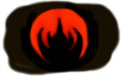

strange music page
live reports * * * 2001
| 12.29 | ・ｽJ・ｽ・ｽ・ｽ・ｽ・ｽ・ｽ・ｽ}・ｽL | ・ｽa・ｽJ・ｽN・ｽ・ｽ・ｽR・ｽ_・ｽC・ｽ・ｽ |
| 12.13 | ・ｽﾎ趣ｿｽ艪ｫ+・ｽ・ｽ・ｽ・ｽ・ｽ・ｽ+・ｽ・ｽ・ｽr・ｽ^・ｽi | ・ｽa・ｽJ・ｽA・ｽs・ｽA |
| 12.9 | ・ｽ・ｽ・ｽ・ｽ・ｽ・ｽo+・ｽﾖ難ｿｽ・ｽl・ｽR+・ｽS・ｽ{・ｽ・ｽ・ｽ・ｽ | ・ｽ・ｽ・ｽk・ｽ・ｽLADY JUNE |
| 12.8 | IN CAHOOTS | ・ｽ・ｽ・ｽ・ｽ・ｽTRIBUTE TO LVOE GENERATION |
| 12.7 | Bjork | ・ｽ・ｽ・ｽ・ｽ・ｽ・ｽ・ｽﾛフ・ｽH・ｽ[・ｽ・ｽ・ｽ・ｽ |
| 12.2 | ・ｽQ・ｽ・ｽ・ｽ・ｽ,GOOD JOB | ・ｽg・ｽﾋ趣ｿｽSILVER ELEPHANT |
| 12.1 | ROUND HOUSE | ・ｽ・ｽ・ｽhRUIDO |
| 11.22 | CO2・ｽm・ｽ・ｽY | ・ｽ\・ｽQ・ｽ・ｽFAB |
| 11.9 | ・ｽ・ｽ・ｽﾔ厄ｿｽ・ｽ・ｽ | ・ｽ・ｽ・ｽ~・ｽ・ｽmarbletron |
| 10.19 | ・ｽ・ｽ・ｽ・ｽ・ｽG+・ｽ・ｽ・ｽg・ｽz,・ｽﾍ搾ｿｽ・ｽp・ｽ・ｽ | ・ｽ・ｽﾂ山MANDALA |
| 10.1 | DCPRG,・ｽ・ｽ・ｽ・ｽ・ｽ・ｽ・ｽR・ｽ・ｽ,・ｽ}・ｽw・ｽ・ｽ・ｽV・ｽ・ｽ・ｽ・ｽ・ｽ・ｽ・ｽn・ｽV・ｽ・ｽ・ｽo・ｽY,・ｽS・ｽ・ｽ | ・ｽV・ｽhLIQUID ROOM |
| 9.22 | BOAT,PANIC SMILE,DCPRG | ・ｽa・ｽJCLUB QUATTRO |
| 9.16 | Lars Hollmer's SOLA | ・ｽ・ｽ・ｽ・ｽ・ｽTRIBUTE TO LOVE GENERATION |
| 9.10 | ・ｽﾖ難ｿｽ・ｽl・ｽR・ｽJ・ｽ・ｽ・ｽe・ｽb・ｽg | ・ｽ・ｽﾂ山MANDALA |
| 6.10 | ・ｽ・ｽ・ｽ・ｽ・ｽ・ｽo+・ｽ・ｽ・ｽ・ｽ・ｽ・ｽ・ｽq+・ｽS・ｽ{・ｽ・ｽ・ｽ・ｽ | ・ｽ・ｽ・ｽw・ｽ・ｽ "in F" |
| 5.30 | MAGMA | ・ｽa・ｽJON AIR WEST |
| 5.19 | ・ｽq・ｽn・ｽv・ｽ・ｽ・ｽv | ・ｽ@・ｽ・ｽ・ｽ・ｽw・ｽw・ｽ・ｽ・ｽ・ｽ・ｽ |
| 5.10 | ・ｽ・ｽ・ｽ・ｽ・ｽU・ｽ・ｽ・ｽB・ｽk・ｽ・ｽ・ｽo・ｽb・ｽn | ・ｽZ・ｽ{・ｽ・ｽPIT-INN |
| 5.6 | ・ｽ・ｽ・ｽ・ｽ・ｽm・ｽ・ｽ | ・ｽ・ｽ・ｽzGINZ |
| 5.4 | pitch talks,・ｽC・ｽm・ｽg・ｽ・ｽ | ・ｽ・ｽ・ｽ~・ｽ・ｽmarbletron |
| 4.29 | ・ｽ・ｽ・ｽﾃヒ・ｽ・ｽ・ｽV・ｽﾆ厄ｿｽ・ｽ・ｽ・ｽﾈ抵ｿｽ・ｽﾔゑｿｽ・ｽ・ｽ | ・ｽ繩ｯ・ｽRCLASSICS |
| 3.25 | ・ｽ・ｽ・ｽ轤ｫ・ｽﾈゑｿｽ・ｽ・ｽ | ・ｽ・ｽ・ｽ・ｽ・ｽso-net cafe |
| 3.20 | elephant talk,・ｽ・ｽ・ｽ・ｽ・ｽ艪ｫ | ・ｽ・ｽ・ｽ・ｽ・ｽEBINSPARK |
| 3.10 | SPANK HAPPY | ・ｽa・ｽJCLUB-ASIA |
| 2.19 | ・ｽI・ｽp・ｽr・ｽj・ｽA
|
| 2.18 | ・ｽ・ｽF・ｽj+・ｽ・ｽ・ｽG・ｽ・ｽ | ・ｽ・ｽ・ｽw・ｽ・ｽ "in F" |
| 2.17 | SKYFISHER,bellytree the distortion,electric eel shock... | ・ｽH・ｽt・ｽ・ｽCLUB-GOODMAN |
| 2.9 | ・ｽ・ｽ・ｽ・ｽ・ｽ・ｽ,Che-Shizu,Mahel | ・ｽg・ｽﾋ趣ｿｽstarpine's cafe |
| 1.20 | DOMBA | ・ｽJ・ｽﾛゑｿｽ・ｽ・ｽ・ｽ・ｽ・ｽﾝ抵ｿｽ |
#2001・ｽN・ｽﾅ鯉ｿｽﾌ・ｿｽ・ｽC・ｽ・ｽ・ｽB
- ・ｽJ・ｽ・ｽ・ｽ・ｽ・ｽ・ｽ・ｽ}・ｽL (vocals)
- ・ｽS・ｽ{・ｽ・ｽ・ｽ・ｽ (guitars)
- ・ｽ・ｽ・ｽi・ｽF・ｽ` (bass)
- ・ｽF・ｽ_・ｽ・ｽ・ｽm (drums)
- ・ｽ・ｽ・ｽ・ｽS・ｽ・ｽ (violin)
#・ｽﾈ擾ｿｽi・ｽﾙ擾ｿｽﾅゑｿｽ・ｽﾂ）・ｽﾌ・ｿｽ・ｽ・ｽ・ｽc・ｽﾅゑｿｽ・ｽ・ｽ・ｽB・ｽ・ｽ・ｽﾍマ・ｽL&OZ・ｽﾌ搾ｿｽ・ｽ・ｽ・ｽ・ｽ・ｽm・ｽ・ｽﾈゑｿｽ・ｽ・ｽ・ｽ・ｽ・ｽ・ｽﾅゑｿｽ・ｽ・ｽ・ｽﾇ、・ｽ・ｽ・ｽﾜゑｿｽ・ｽﾉ・ｿｽ・ｽb・ｽN・ｽﾈ人・ｽﾅゑｿｽ・ｽ・ｽ・ｽB・ｽ・ｽ・ｽ・ｽ・ｽ・ｽ・ｽ・ｽ・ｽ[
・ｽx・ｽe・ｽ・ｽ・ｽ・ｽ2・ｽ・ｽ・ｽﾍバ・ｽb・ｽN・ｽo・ｽ・ｽ・ｽh・ｽﾌ色・ｽ・ｽ・ｽi・ｽX・ｽZ・ｽ・ｽ・ｽﾈゑｿｽ・ｽﾄゑｿｽ・ｽﾄて、・ｽ闢ｮ・ｽﾅテ・ｽN・ｽm・ｽ・ｽ・ｽﾛゑｿｽ・ｽf・ｽB・ｽ・ｽ・ｽC・ｽ・ｽ・ｽ・ｽ・ｽ・ｽ・ｽ・ｽﾆゑｿｽ・ｽ・ｽ・ｽﾄゑｿｽ....ROVO・ｽ・ｽ・ｽ・ｽ・ｽ・ｽ・ｽ・ｽBONDAGE FRUIT・ｽ・ｽ・ｽ・ｽ・ｽ・ｽ・ｽ・ｽﾆ。
・ｽN・ｽﾌ最鯉ｿｽﾉ気・ｽ・ｽ・ｽﾇゑｿｽ・ｽﾈるモ・ｽm・ｽﾝまゑｿｽ・ｽ・ｽ・ｽB
#・ｽ・ｽ・ｽ[・ｽﾆ火趣ｿｽ艪ｫ・ｽ・ｽ・ｽ・ｽﾌ・ｿｽ・ｽC・ｽ・ｽ・ｽA・ｽh・ｽ・ｽ・ｽ・ｽ・ｽﾍ包ｿｽ・ｽ・ｽ・ｽ・ｽ・ｽ・ｽ・ｽ・ｽB
・ｽ・ｽ・ｽ・ｽ・ｽ・ｽ・ｽ・ｽﾌド・ｽ・ｽ・ｽ・ｽ・ｽ・ｽ・ｽ・ｽ・ｽ・ｽﾌゑｿｽ2・ｽx・ｽﾚゑｿｽ・ｽ・ｽ・ｽﾇ、・ｽﾈんか全・ｽﾄの出・ｽ・ｽ・ｽ・ｽ・ｽR・ｽ・ｽ・ｽg・ｽ・ｽ・ｽ[・ｽ・ｽ・ｽ・ｽ・ｽ謔､・ｽﾆゑｿｽ・ｽﾄゑｿｽ謔､・ｽﾈ奇ｿｽ・ｽ・ｽ・ｽﾌ。
・ｽﾎ趣ｿｽ艪ｫ・ｽ・ｽ・ｽ・ｽ・ｽ・ｽﾈんか托ｿｽ・ｽﾝ奇ｿｽ・ｽL・ｽ・ｽ・ｽﾄ格・ｽD・ｽﾇゑｿｽ・ｽ・ｽ・ｽ・ｽ・ｽﾅゑｿｽ・ｽB・ｽ・ｽ・ｽﾉ対ゑｿｽ・ｽﾄ真・ｽ・ｽ・ｽﾈ奇ｿｽ・ｽ・ｽ・ｽA・ｽﾝゑｿｽﾈ。
#・ｽﾈんかゑｿｽ・ｽ[KILLING TIME・ｽi・ｽC・ｽg・ｽ・ｽ・ｽﾄ奇ｿｽ・ｽ・ｽ・ｽﾅゑｿｽ・ｽ・ｽ・ｽB
・ｽX・ｽS・ｽC・ｽﾅゑｿｽ・ｽA・ｽ・ｽ・ｽo・ｽC・ｽﾅゑｿｽ・ｽBEBRIO・ｽﾈゑｿｽﾄ会ｿｽ・ｽt・ｽ・ｽ・ｽﾄゑｿｽﾌ鯉ｿｽ・ｽ・ｽ・ｽ・ｽR・ｽN・ｽO・ｽﾌ年・ｽ・ｽ・ｽ・ｽKILLING TIME・ｽ・ｽ・ｽv・ｽ・ｽ・ｽo・ｽ・ｽ・ｽ・ｽ・ｽ痰｢・ｽﾜゑｿｽ・ｽ・ｽ・ｽB・ｽ・ｽ・ｽ・ｽ・ｽ・ｽﾆなゑｿｽ・ｽﾄゑｿｽ・ｽ・ｽ・ｽ[・ｽﾈ。
・ｽﾈゑｿｽﾄゑｿｽ・ｽ・ｽ・ｽ・ｽ・ｽ・ｽ・ｽ・ｽ・ｽ・ｽ・ｽ・ｽ・ｽKILLING TIME・ｽﾌ会ｿｽ・ｽy・ｽ・ｽ・ｽD・ｽ・ｽ・ｽﾈんだなとゑｿｽ・ｽA・ｽ・ｽ・ｽ・ｽﾈ趣ｿｽ・ｽ・ｽ・ｽv・ｽ・ｽ・ｽﾜゑｿｽ・ｽ・ｽ・ｽB
・ｽO・ｽ・ｽ・ｽﾍ短・ｽﾟで地・ｽ・ｽl/・ｽﾅ抵ｿｽl・ｽ・ｽ・ｽﾛゑｿｽ・ｽﾌゑｿｽ・ｽ・ｽ・ｽﾈゑｿｽ・ｽ・ｽA・ｽ・ｽ・ｽ・ｽ・ｽ・ｽ・ｽｪバ・ｽX・ｽN・ｽ・ｽ・ｽ・ｽ・ｽl・ｽb・ｽg・ｽﾉ趣ｿｽ・ｽ・ｽ・ｽﾖゑｿｽ・ｽ・ｽKILLING TIME・ｽﾌ曲。・ｽ・ｽ・ｽ・ｽ・ｽ・ｽ・ｽ・ｽ・ｽY・ｽ・ｽﾈ曲で、CD・ｽ・ｽ・ｽ・ｽ
SKIP・ｽﾌ１・ｽﾈ目の後半・ｽﾅ擾ｿｽ・ｽ・ｽ・ｽ・ｽ・ｽ・ｽ・ｽ・ｽ・ｽ驛・ｿｽ・ｽ・ｽf・ｽB・ｽ[・ｽﾌ曲。
・ｽ・ｽ・ｽ・ｽ・ｽ・ｽﾆ君・ｽ・ｽ・ｽ・ｽﾌフ・ｽ・ｽ・ｽ[・ｽY・ｽ・ｽ・ｽ・ｽ・ｽt・ｽ・ｽ・ｽ・ｽ・ｽ・ｽﾉゑｿｽ・ｽ・ｽ・ｽ・ｽﾌは、
IRENE・ｽﾌ抵ｿｽ・ｽ・ｽ ・ｽI・ｽt・ｽ・ｽ・ｽ・ｽ・ｽ ・ｽﾌ・ｿｽ・ｽ・ｽ・ｽf・ｽB・ｽ[・ｽﾉ包ｿｽ・ｽ・ｽ・ｽ・ｽ・ｽ・ｽ・ｽｾゑｿｽ・ｽ・ｽ.....・ｽ・ｽ・ｽ・ｽ・ｽ・ｽ・ｽ・ｽ・ｽﾈ？・ｽﾅ鯉ｿｽ・ｽEBIRO・ｽﾈゑｿｽﾄゑｿｽ・ｽ・ｽﾄまゑｿｽ・ｽ・ｽ・ｽA・ｽﾙゑｿｽﾆゑｿｽ・ｽ・ｽﾈ曲ゑｿｽ・ｽﾆ思・ｽ・ｽﾈゑｿｽ・ｽ・ｽ・ｽ・ｽ・ｽﾅゑｿｽ・ｽB
・ｽ・ｽ・ｽﾈみに余・ｽk・ｽﾅゑｿｽ・ｽ・ｽ・ｽA・ｽ・ｽ・ｽﾌ難ｿｽ・ｽﾍ渋・ｽJ・ｽ・ｽUPLINK・ｽ・ｽMa*To・ｽ・ｽ・ｽ・ｽﾆ板倉・ｽ・ｽ・ｽ・ｽ・ｽ・ｽ・ｽWhacho・ｽ・ｽ・ｽｪ出・ｽﾄゑｿｽp・ｽ[・ｽe・ｽB・ｽﾝゑｿｽ・ｽ・ｽ・ｽﾈのゑｿｽ・ｽL・ｽ・ｽ・ｽ・ｽ・ｽ・ｽﾅゑｿｽ・ｽ・ｽﾋー・ｽA・ｽﾙゑｿｽﾆゑｿｽ....・ｽ齒擾ｿｽﾉゑｿｽ・ｽ・ｽﾄ欲・ｽ・ｽ・ｽ・ｽ・ｽﾈー・ｽﾈゑｿｽﾄ。・ｽ・ｽ・ｽ[・ｽ・ｽ・ｽﾆ思・ｽ・ｽ・ｽﾄゑｿｽ・ｽﾅゑｿｽ・ｽ・ｽ・ｽﾇ。
1st set:
-
- ・ｽn・ｽ・ｽl・ｽﾆ最抵ｿｽl
- ? ("・ｽZ・ｽg・ｽD・ｽx"・ｽ・ｽ・ｽﾄ鯉ｿｽ・ｽ・ｽ・ｽﾄゑｿｽ・ｽ・ｽ・ｽﾈ？SKIP・ｽﾌ後半・ｽﾉ途・ｽﾘゑｿｽr・ｽﾘゑｿｽﾉ包ｿｽ・ｽ・ｽ・ｽ・ｽ・ｽ・ｽ・ｽ)
2nd set:
- impro.
- Johnson Blues
- ・ｽN・ｽ・ｽ・ｽ・ｽ
- ? (・ｽI・ｽt・ｽ・ｽ・ｽ・ｽ・ｽ?)
- ? (・ｽC・ｽ・ｽ・ｽv・ｽ・ｽ?)
- EBRIO
- SALON (Upon Hearing)
- ? (1st set・ｽﾌ最鯉ｿｽﾌ具ｿｽ)
- ・ｽ・ｽ・ｽ・ｽ・ｽ・ｽo (piano,bass clarinet)
- ・ｽﾖ難ｿｽ・ｽl・ｽR (violin)
- ・ｽS・ｽ{・ｽ・ｽ・ｽ・ｽ (guitars)
#Phil Miller・ｽ・ｽ・ｽ・ｽ・ｽ・ｽIN CAHOOTS・ｽB・ｽ・ｽ・ｽ・ｽ・ｽ・ｽ・ｽ・ｽ・ｽo・ｽ[・ｽ・ｽ
- Phil Miller (guitars)
- Fred Baker (bass)
- Elton Dean (sax)
- Peter Lemer (keyboards)
- Pip Pyle (drums)
- Jim Dvorak (trumpet)
#・ｽ・ｽ・ｽﾈみに、Phil Miller・ｽ・ｽMatching Mole/Hatfield and The North/National Health・ｽAElton Dean・ｽ・ｽSoft Machine/Keith Tippet Group・ｽAPip Pyle・ｽ・ｽGong/Hatfield and The North/National Health・ｽB・ｽ・ｽ・ｽﾊほどカ・ｽ・ｽ・ｽ^・ｽx・ｽ・ｽ・ｽﾈ・ｿｽ・ｽ・ｽ・ｽc・ｽﾅゑｿｽ・ｽﾋ。
Hatfield・ｽﾌ曲とゑｿｽ・ｽ・ｽ・ｽﾌゑｿｽ・ｽﾆ思・ｽ・ｽ・ｽ・ｽ・ｽ・ｽA・ｽﾙとゑｿｽ・ｽIN CAHOOTS・ｽﾌ曲ゑｿｽ・ｽ・ｽ・ｽ・ｽ・ｽﾆ思・ｽ・ｽ・ｽﾜゑｿｽ・ｽB・ｽm・ｽ・ｽ・ｽB
・ｽ・ｽ・ｽﾝ～・ｽﾉ良ゑｿｽ・ｽ・ｽ・ｽ・ｽ・ｽﾅゑｿｽ・ｽﾋー・ｽW・ｽ・ｽ・ｽW・ｽ・ｽ・ｽﾆ、・ｽﾂ人・ｽI・ｽﾉゑｿｽElton Dean・ｽｶで鯉ｿｽ・ｽ・ｽﾄ奇ｿｽ・ｽ・ｽ・ｽ・ｽ・ｽﾜゑｿｽ・ｽ・ｽ・ｽBPhil Miller・ｽﾍ予・ｽz・ｽﾊゑｿｽﾈんだゑｿｽ・ｽ・ｽ・ｽﾈギ・ｽ^・ｽ[・ｽ・ｽe・ｽ・ｽ・ｽﾄまゑｿｽ・ｽ・ｽ・ｽB
Peter Lemer・ｽﾌ鯉ｿｽ・ｽ・ｽ・ｽ・ｽ・ｽ・ｽ・ｽ・ｽﾌ席に搾ｿｽ・ｽ・ｽ・ｽﾄゑｿｽ・ｽ・ｽﾅゑｿｽ・ｽ・ｽ・ｽﾇ、・ｽ・ｽ・ｽc・ｽ・ｽ
・ｽ・ｽ・ｽ・ｽ・ｽﾅゑｿｽ・ｽ・ｽ・ｽB・ｽﾈんだゑｿｽ・ｽC・ｽ{・ｽC・ｽ{・ｽﾌ付・ｽ・ｽ・ｽ・ｽ・ｽw・ｽ・ｽ・ｽﾈク・ｽb・ｽV・ｽ・ｽ・ｽ・ｽ・ｽﾉ搾ｿｽ・ｽ・ｽ・ｽﾄゑｿｽ・ｽ・ｽ....・ｽ・ｽ・ｽ・ｽ・ｽﾌ鯉ｿｽ・ｽN・ｽ@・ｽﾅゑｿｽ・ｽ蛯ｩ・ｽH
#・ｽO・ｽ・ｽ・ｽ・ｽmatomos・ｽB・ｽm・ｽC・ｽY・ｽ・ｽ・ｽG・ｽ・ｽ・ｽN・ｽg・ｽ・ｽ・ｽ・ｽ・ｽH・ｽﾝゑｿｽ・ｽ・ｽ・ｽﾈ奇ｿｽ・ｽ・ｽ・ｽﾌ会ｿｽ・ｽ・ｽ....・ｽ・ｽ・ｽ・ｽ・ｽ・ｽﾆ厄ｿｽ・ｽ・ｽ・ｽﾈゑｿｽ・ｽ・ｽ・ｽ痰｢・ｽﾜゑｿｽ・ｽ・ｽ・ｽB・ｽr・ｽ[・ｽg・ｽ・ｽ・ｽ・ｽ・ｽ・ｽ・ｽ・ｽ・ｽﾄゑｿｽﾔはイ・ｽC・ｽ・ｽﾅゑｿｽ・ｽ・ｽ・ｽﾇ。
・ｽﾅ、Bjork・ｽﾅゑｿｽ・ｽ・ｽ・ｽB・ｽ・ｽ・ｽﾅ鯉ｿｽ・ｽ・ｽﾌは擾ｿｽ・ｽﾟて。・ｽ・ｽ・ｽ・ｽﾏス・ｽS・ｽC・ｽ・ｽﾈー・ｽﾆ。
・ｽﾈんか会ｿｽ・ｽy・ｽG・ｽ・ｽ・ｽﾌ鯉ｿｽ・ｽ・ｽ・ｽﾜわし・ｽﾝゑｿｽ・ｽ・ｽ・ｽﾈ表・ｽ・ｽ・ｽﾅ鯉ｿｽ・ｽﾈゑｿｽﾅゑｿｽ・ｽ・ｽ・ｽﾇ、Bjork・ｽ・ｽ・ｽﾄゑｿｽ・ｽ・ｽ・ｽW・ｽ・ｽ・ｽ・ｽ・ｽ・ｽ・ｽﾈんだなー・ｽﾆゑｿｽ・ｽv・ｽ・ｽ・ｽﾜゑｿｽ・ｽ・ｽ・ｽB Hyper Ballad ・ｽﾆゑｿｽ Army of Me ・ｽﾆゑｿｽ Hidden Place ・ｽﾆゑｿｽ....・ｽ・ｽ・ｽﾌス・ｽg・ｽ・ｽ・ｽ・ｽ・ｽO・ｽX・ｽ・ｽ・ｽ・ｽ・ｽﾍゑｿｽ・ｽ・ｽ・ｽﾄ良ゑｿｽ・ｽ・ｽ・ｽ・ｽ・ｽﾅゑｿｽ・ｽB・ｽv・ｽX・ｽﾉ具ｿｽ・ｽﾌゑｿｽ・ｽ・ｽ・ｽ・ｽ・ｽ・ｽ・ｽ・ｽ・ｽC・ｽ・ｽ・ｽ・ｽ・ｽ・ｽ・ｽ・ｽ・ｽ謔､・ｽﾈ奇ｿｽ・ｽ・ｽ・ｽB
・ｽ・ｽ・ｽﾈみにハ・ｽ[・ｽv・ｽe・ｽ・ｽ・ｽﾄゑｿｽl・ｽ・ｽZeena Parkins・ｽﾅゑｿｽ・ｽ・ｽ・ｽB・ｽV・ｽ・ｽ・ｽﾉゑｿｽ・ｽQ・ｽ・ｽ・ｽ・ｽ・ｽﾄゑｿｽ・ｽ・ｽﾅゑｿｽ・ｽﾋ、・ｽﾅ鯉ｿｽﾌ最鯉ｿｽﾜで気・ｽt・ｽ・ｽ・ｽﾈゑｿｽ・ｽ・ｽ・ｽ・ｽ・ｽB
#12・ｽ・ｽ・ｽ・ｽ・ｽ・ｽ・ｽ・ｽ・ｽr・ｽ[・ｽﾉ・ｿｽ・ｽC・ｽ・ｽ・ｽ・ｽ・ｽ・ｽ・ｽ・ｽ・ｽ・ｽ・ｽ・ｽ・ｽ閧ｵ・ｽﾄゑｿｽ・ｽﾅゑｿｽ・ｽ・ｽ・ｽﾇ、・ｽ・ｽ・ｽx・ｽﾍ吉・ｽﾋ趣ｿｽSILVER ELEPHANT・ｽ・ｽ
・ｽQ・ｽ・ｽ・ｽ・ｽ・ｽﾊ奇ｿｽ・ｽﾅゑｿｽ・ｽB
・ｽO・ｽｩゑｿｽ・ｽ・ｽ・ｽﾆ茨ｿｽ・ｽ・ｽﾄド・ｽ・ｽ・ｽ・ｽ・ｽ・ｽ
BELLAPHONE・ｽﾌ富・ｽﾆゑｿｽ・ｽ・ｽﾉ托ｿｽ・ｽ・ｽ・ｽﾄゑｿｽ・ｽﾄ。・ｽX・ｽﾉボ・ｽ[・ｽJ・ｽ・ｽ・ｽ・ｽ・ｽﾐなゑｿｽ・ｽ・ｽ・ｽ・ｽﾄ包ｿｽ・ｽﾉ托ｿｽ・ｽ・ｽ・ｽﾄまゑｿｽ・ｽB・ｽﾈんだゑｿｽ・ｽQ・ｽ・ｽ・ｽ・ｽ・ｽﾌペ・ｽ[・ｽW・ｽﾅ写真・ｽ・ｽ・ｽﾚゑｿｽ・ｽﾄて、・ｽ・ｽ・ｽ・ｽﾉゑｿｽ・ｽ墲｢・ｽ・ｽ・ｽ・ｽ・ｽ・ｽ・ｽﾌボ・ｽ[・ｽJ・ｽ・ｽ・ｽ・ｽz・ｽ・ｽ・ｽ・ｽ・ｽﾄまゑｿｽ・ｽ・ｽ・ｽB
・ｽS・ｽR・ｽ痰｢・ｽﾜゑｿｽ・ｽ・ｽ・ｽ{・ｽC・ｽﾌジ・ｽ・ｽ・ｽY・ｽ{・ｽ[・ｽJ・ｽ・ｽ・ｽ・ｽ......・ｽ・ｽ・ｽ竄滂ｿｽr・ｽb・ｽN・ｽ・ｽ・ｽ・ｽ・ｽ・ｽ・ｽ・ｽ・ｽ・ｽ・ｽB・ｽx・ｽﾆゑｿｽ・ｽ・ｽﾌド・ｽ・ｽ・ｽ・ｽ・ｽ・ｽ・ｽv・ｽ・ｽ・ｽﾄゑｿｽ・ｽ・ｽ・ｽ・ｽ・ｽh・ｽ・ｽA・ｽ・ｽ・ｽﾂタ・ｽC・ｽg・ｽB・ｽﾗ・ｿｽ・ｽt・ｽH・ｽ・ｽ・ｽﾅのプ・ｽ・ｽ・ｽC・ｽ・ｽ・ｽ・ｽ・ｽ・ｽ・ｽ・ｽ・ｽﾈゑｿｽ・ｽB
・ｽﾈ目はほとゑｿｽﾇ新・ｽﾈ。・ｽu・ｽ・ｽ・ｽﾄつゑｿｽ・ｽ・ｽ・ｽﾔ」・ｽ・ｽ・ｽﾄ曲ゑｿｽ・ｽﾆ思・ｽ・ｽ・ｽｾゑｿｽ・ｽﾇ、・ｽT・ｽC・ｽ・ｽ・ｽg・ｽﾝゑｿｽ・ｽ・ｽ・ｽﾈキ・ｽ[・ｽ{・ｽ[・ｽh・ｽ{・ｽ・ｽ・ｽﾌイ・ｽ・ｽ・ｽg・ｽ・ｽ・ｽﾈゑｿｽﾄ包ｿｽ・ｽﾍ気・ｽL・ｽ・ｽ・ｽﾄ好・ｽ・ｽ・ｽﾅゑｿｽ・ｽ・ｽ・ｽA・ｽ・ｽ・ｽ・ｽ・ｽh・ｽn・ｽﾌ人・ｽB・ｽﾍゑｿｽ・ｽ[・ｽ・ｽ[・ｽg・ｽ・ｽ・ｽ・ｽ・ｽﾍゑｿｽ・ｽﾈゑｿｽ・ｽﾆ思・ｽ・ｽ・ｽ・ｽ・ｽB
・ｽ・ｽ・ｽ・ｽﾙとゑｿｽﾇ新・ｽ・ｽ・ｽ・ｽ・ｽﾈはキ・ｽ[・ｽ{・ｽ[・ｽh・ｽﾌ北・ｽ・ｽ・ｽ・ｳ・ｽｪ擾ｿｽ・ｽ・ｽ・ｽﾄゑｿｽﾝゑｿｽ・ｽ・ｽ・ｽﾅゑｿｽ・ｽA・ｽ・ｽ・ｽ・ｽ・ｽﾉゑｿｽJap's・ｽv・ｽ・ｽ・ｽO・ｽ・ｽ・ｽﾝゑｿｽ・ｽ・ｽ・ｽﾈシ・ｽ・ｽ・ｽt・ｽH・ｽﾅゑｿｽ・ｽ・ｽ・ｽﾇ、・ｽ・ｽ・ｽ[・ｽ・ｽ[・ｽﾈ展・ｽJ・ｽ・ｽ・ｽ・ｽﾌ好・ｽ・ｽ・ｽﾝゑｿｽ・ｽ・ｽ・ｽﾅ、・ｽ・ｽ・ｽS・ｽ・ｽ・ｽﾄゑｿｽ・ｽ・ｽ・ｽﾜゑｿｽ・ｽ・ｽ・ｽB・ｽﾜゑｿｽ・ｽﾜゑｿｽ・ｽ・ｽ・ｽ・ｽ・ｽﾌバ・ｽ・ｽ・ｽh・ｽﾆゑｿｽ・ｽﾄゑｿｽ・ｽC・ｽ・ｽ・ｽ・ｽ・ｽ・ｽ・ｽ・ｽ・ｽﾄ。
・ｽ・ｽ・ｽﾆはゑｿｽ・ｽ・ｽﾏり中・ｽ・ｽ・ｽ・ｽW・ｽ・ｽ・ｽ・ｽﾌギ・ｽ^・ｽ[・ｽﾉ尽・ｽ・ｽ・ｽ・ｽ墲ｯ・ｽﾅゑｿｽ・ｽB・ｽ・ｽ・ｽﾅゑｿｽ・ｽ・ｽﾈに心・ｽn・ｽ・ｽ・ｽ・ｽ・ｽ・ｽﾅゑｿｽ・ｽ蛯､・ｽH・ｽﾆゑｿｽ・ｽ・ｽ・ｽ・ｽSteve Hackett・ｽ・ｽ・ｽ・ｽ・ｽD・ｽ・ｽ・ｽ・ｽ・ｽ・ｽ・ｽ・ｽ・ｽ閧ｵ・ｽﾜゑｿｽ・ｽB
- Lovin' You
- ・ｽ・ｽ・ｽ・ｽ・ｽﾌ会ｿｽ
- ・ｽ・ｽ・ｽ・ｽ・ｽ~・ｽ・ｽ・ｽ・ｽ
- ・ｽ・ｽ・ｽﾄつゑｿｽ・ｽ・ｽ・ｽ・ｽ
- ?(David Bowie・ｽﾌ具ｿｽ)
- ・ｽz・ｽe・ｽ・ｽ・ｽE・ｽp・ｽm・ｽ・ｽ・ｽ}
- ・ｽﾟ深・ｽ・ｽ・ｽ・ｽ・ｽX
- Casablamca Moon
- ・ｽ・ｽ・ｽ・ｽ・ｽ・ｽW (guitars)
- ・ｽk・ｽ・ｽ・ｽ・ｭ・ｽY (keyboards)
- ・ｽﾐゑｿｽ (vocals)
- ・ｽl・ｽc・ｽ・ｽ・ｽ・ｽ (bass)
- ・ｽx・ｽﾆ托ｿｽ・ｽ (drums)
- ・ｽ・ｽ・ｽ・ｽ・ｽG・ｽs (vocals on 5.)
#・ｽ・ｽ・ｽ・ｽ・ｽ・ｽ・ｽ・ｽ・ｽA・ｽ・ｽ・ｽﾆ対バ・ｽ・ｽ・ｽ・ｽGOOD JOB・ｽB・ｽv・ｽ・ｽ・ｽﾌ人・ｽX・ｽ轤ｵ・ｽ・ｽ・ｽ・ｽ・ｽ・ｽ・ｽ・ｽ・ｽ[・ｽ・ｽ閧｢・ｽﾅゑｿｽ・ｽA・ｽL・ｽ[・ｽ{・ｽ[・ｽh・ｽ・ｽ・ｽ・ｽ・ｽ・ｽ・ｽL・ｽ[・ｽX・ｽG・ｽ}・ｽ[・ｽ\・ｽ・ｽ・ｽﾅ。
・ｽ・ｽ・ｽ・ｽ・ｽﾈゑｿｽﾂー・ｽ・ｽ・ｽv・ｽ・ｽ・ｽO・ｽ・ｽ・ｽm・ｽ・ｽ・ｽﾆは厄ｿｽ・ｽ・ｽ・ｽﾌス・ｽe・ｽ[・ｽW・ｽB・ｽﾂ笑ゑｿｽ・ｽ・ｽ・ｽ・ｽ・ｽ・ｽ・ｽ・ｽ・ｽ・ｽ・ｽB
#・ｽﾅ、・ｽﾈんか搾ｿｽ・ｽ・ｽﾌ・ｿｽ・ｽC・ｽ・ｽ・ｽv・ｽ・ｽ・ｽO・ｽ・ｽ・ｽe・ｽ・ｽ・ｽ・ｽ・ｽX・ｽg・ｽﾆゑｿｽ・ｽ・ｽ・ｽ・ｽ・ｽC・ｽx・ｽ・ｽ・ｽg・ｽﾌ一部・ｽ・ｽ・ｽ・ｽ・ｽ・ｽ・ｽﾝゑｿｽ・ｽ・ｽ・ｽ・ｽ・ｽ・ｽ・ｽ・ｽ.....・ｽﾈんだゑｿｽ・ｽ・ｽ・ｽH ・ｽﾈゑｿｽﾅゑｿｽ・ｽ・ｽ・ｽv・ｽ・ｽ・ｽO・ｽ・ｽ・ｽ・ｽ・ｽC・ｽ・ｽ・ｽd・ｽﾘゑｿｽl・ｽ・ｽ・ｽﾄゑｿｽ・ｽ・ｽ.....
#・ｽ・ｽ・ｽ[・ｽ・ｽ・ｽﾆ待ゑｿｽ・ｽﾄゑｿｽROUND HOUSE・ｽﾌ・ｿｽ・ｽC・ｽ・ｽ・ｽBROUND HOUSE・ｽ・ｽ・ｽﾄ？・ｽﾆ鯉ｿｽ・ｽ・ｽ・ｽ・ｽ・ｽﾍとりあ・ｽ・ｽ・ｽ・ｽ
・ｽI・ｽt・ｽB・ｽV・ｽ・ｽ・ｽ・ｽ・ｽT・ｽC・ｽg・ｽ・ｽ・ｽA・ｽ・ｽ・ｽ・ｽ・ｽ・ｽ・ｽu・ｽ・ｽ・ｽﾄゑｿｽ・ｽ・ｽﾌで、・ｽ・ｽ・ｽ・ｽﾈつまゑｿｽﾈゑｿｽ・ｽ・ｽ・ｽﾍ読ゑｿｽﾅゑｿｽｾゑｿｽ・ｽ・ｽ・ｽ・ｽB
#・ｽ・ｽ・ｽh・ｽw・ｽA・ｽ・ｽ・ｽ・ｽ~・ｽ・ｽ・ｽﾌは撰ｿｽ・ｽﾜゑｿｽﾄ擾ｿｽ・ｽﾟて。・ｽﾈんかゑｿｽ・ｽ・ｽ・ｽp・ｽ・ｽ・ｽ・ｽ・ｽ・ｽ・ｽ・ｽ・ｽ・ｽ・ｽ・ｽ・ｽﾅ。
・ｽ・ｽ・ｽC・ｽ[・ｽh・ｽﾅは、・ｽ・ｽ・ｽﾌゑｿｽ2・ｽh・ｽ・ｽ・ｽ・ｽ・ｽN・ｽﾆゑｿｽ・ｽ・ｽ・ｽ・ｽ・ｽ・ｽ +1000・ｽ~・ｽ・ｽ・ｽ・ｽﾜゑｿｽ・ｽ・ｽ・ｽB・ｽﾈんだゑｿｽ・ｽ・ｽB
・ｽﾜ、・ｽ・ｽ・ｽ・ｽﾈ搾ｿｽ・ｽﾗな趣ｿｽ・ｽﾍどー・ｽﾅゑｿｽ・ｽ・ｽ・ｽ・ｽ・ｽ・ｽﾅゑｿｽ・ｽ・ｽ・ｽﾇ。・ｽ・ｽ・ｽE・ｽ・ｽ・ｽh・ｽn・ｽE・ｽX・ｽﾍ搾ｿｽ・ｽZ・ｽﾌ搾ｿｽ・ｽﾉ費ｿｽ・ｽ@・ｽ・ｽ・ｽ・ｽCD・ｽモ・ｽ・ｽﾄゑｿｽ・ｽ・ｽA・ｽ・ｽ・ｽ・ｽ・ｽ・ｽ・ｽゑｿｽ・ｽ・ｽ{・ｽv・ｽ・ｽ・ｽO・ｽ・ｽ・ｽﾌ抵ｿｽ・ｽﾅゑｿｽ・ｽ・ｽ・ｽﾉ気・ｽﾉ難ｿｽ・ｽ・ｽ・ｽﾄゑｿｽ・ｽﾄ、・ｽu1986・ｽN・ｽ・ｽ・ｽ轤｢・ｽﾉ奇ｿｽ・ｽﾉ奇ｿｽ・ｽ・ｽ・ｽ・ｽ・ｽ~・ｽ・ｽ・ｽﾄゑｿｽ・ｽ・ｽv・ｽﾆゑｿｽ・ｽ・ｽ・ｽb・ｽ・ｽ・ｽ・ｽ・ｽ・ｽ・ｽﾌで、・ｽﾜゑｿｽ・ｽ・ｽ・ｽ・ｽ・ｽ・ｽﾈ難ｿｽ・ｽ・ｽ・ｽ・ｽ・ｽ・ｽﾆは思・ｽ・ｽ・ｽﾄなゑｿｽ・ｽ・ｽ・ｽ・ｽ・ｽ・ｽﾅゑｿｽ・ｽ・ｽﾋ。・ｽF・ｽX・ｽl・ｽ・ｽ・ｽﾈゑｿｽ・ｽ・ｽ|・ｽb・ｽv・ｽR・ｽ[・ｽ・ｽ・ｽi・ｽ^・ｽ_・ｽ・ｽ・ｽ・ｽ・ｽ・ｽ・ｽA・ｽw・ｽ・ｽ・ｽﾈ・ｿｽ・ｽC・ｽ・ｽ・ｽn・ｽE・ｽX・ｽj・ｽH・ｽ・ｽ・ｽﾈゑｿｽ・ｽ・ｽn・ｽﾜゑｿｽﾌゑｿｽ・ｽﾜゑｿｽ・ｽﾄまゑｿｽ・ｽ・ｽ・ｽB
・ｽX・ｽe・ｽ[・ｽW・ｽﾌ前・ｽﾉ有・ｽ・ｽX・ｽN・ｽ・ｽ・ｽ[・ｽ・ｽ・ｽﾉ映・ｽ・ｽ・ｽ黷ｽ・ｽf・ｽ・ｽ・ｽﾆ一緒・ｽﾉ打ゑｿｽ・ｽ・ｽ・ｽﾝ会ｿｽ・ｽy・ｽi・ｽ・ｽ・ｽ・ｽﾍゑｿｽ・ｽ・ｽﾅ鯉ｿｽ・ｽ\・ｽ・ｽ・ｽ・ｽ・ｽ・ｽ・ｽ・ｽﾇゑｿｽ・ｽ・ｽ・ｽ・ｽ・ｽAweb・ｽﾅ抵ｿｽ・ｽ・ｽ・ｽ・ｽ・ｽﾄゑｿｽ・ｽ・ｽﾈゑｿｽ・ｽ・ｽ・ｽﾈ？・ｽj
・ｽ・ｽ・ｽt・ｽﾍゑｿｽ・ｽﾜゑｿｽ・ｽﾄゑｿｽ・ｽ・ｽﾍゑｿｽ・ｽ・ｽ・ｽﾆ鯉ｿｽ・ｽ・ｽ・ｽﾔゑｿｽ・ｽ・ｽ・ｽ・ｽ・ｽ謔､・ｽﾈ気・ｽ・ｽ・ｽ・ｽ・ｽﾜゑｿｽ・ｽA・ｽ・ｽ・ｽ・ｽ・ｽﾙ抵ｿｽ・ｽ・ｽ・ｽﾌ有・ｽ・ｽC・ｽ・ｽ・ｽX・ｽg・ｽv・ｽ・ｽ・ｽO・ｽ・ｽ.....CD・ｽﾅ抵ｿｽ・ｽ・ｽ・ｽﾄゑｿｽ・ｽ骼橸ｿｽ・ｽ・ｽ・ｽ・ｽM・ｽ^・ｽ[・ｽﾌツ・ｽC・ｽ・ｽ・ｽ・ｽ・ｽ[・ｽh・ｽ・ｽ・ｽﾆてゑｿｽ・ｽ・ｽﾛ的・ｽﾅゑｿｽ・ｽ・ｽ・ｽB・ｽﾌウ・ｽB・ｽb・ｽV・ｽ・ｽ・ｽ{・ｽ[・ｽ・ｽ・ｽA・ｽb・ｽV・ｽ・ｽ・ｽi・ｽC・ｽM・ｽ・ｽ・ｽX・ｽﾌバ・ｽ・ｽ・ｽh・ｽA・ｽC・ｽM・ｽ・ｽ・ｽX・ｽ轤ｵ・ｽ・ｽ・ｽﾄ好・ｽ・ｽ・ｽj・ｽﾌコ・ｽs・ｽ[・ｽ・ｽ・ｽ・ｽﾄゑｿｽ・ｽ・ｽ・ｽﾄ趣ｿｽ・ｽ・ｽ・ｽ・ｽ・ｽ・ｽ・ｽ・ｽﾆ奇ｿｽ・ｽ・ｽ・ｽ・ｽ・ｽ・ｽ・ｽ・ｽ謔､・ｽﾈ会ｿｽ・ｽﾅゑｿｽ・ｽ・ｽ・ｽB
・ｽ・ｽ・ｽﾌ趣ｿｽ・ｽ・ｽCD-R・ｽ・ｽ・ｽ・ｽ・ｽ・ｽ・ｽt・ｽ・ｽ・ｽ・ｽ・ｽ轤ｩ・ｽﾉなゑｿｽ・ｽﾄゑｿｽ謔､・ｽﾈ奇ｿｽ・ｽ・ｽ・ｽ・ｽ・ｽ・ｽ・ｽﾜゑｿｽ・ｽ・ｽ・ｽA・ｽ・ｽ・ｽﾉ「・ｽ[・ｽC・ｽ・ｽ・ｽs・ｽv・ｽﾈんかゑｿｽ・ｽk・ｽ・ｽ・ｽﾈア・ｽ・ｽ・ｽ・ｽ・ｽW・ｽﾈのにス・ｽs・ｽ[・ｽh・ｽ・ｽ・ｽ・ｽ・ｽL・ｽ・ｽ・ｽﾄ、・ｽ・ｽ・ｽ・ｽ・ｽﾄ行・ｽ・ｽ・ｽ・ｽ・ｽ謔､・ｽﾈ奇ｿｽ・ｽ・ｽ・ｽB・ｽu・ｽ・ｽ・ｽ}・ｽ・ｽ・ｽe・ｽB・ｽb・ｽN・ｽ・ｽ・ｽ・ｽ・ｽ[・ｽv・ｽﾆゑｿｽ80・ｽN・ｽ・ｽﾌ曲はゑｿｽ・ｽﾈ抵ｿｽ・ｽ・ｽ・ｽ・ｽﾟでゑｿｽ・ｽ・ｽ・ｽA・ｽ・ｽ・ｽ・ｽ・ｽf・ｽB・ｽ・ｽ・ｽY・ｽ・ｽﾅ撰ｿｽ・ｽ・ｽ・ｽ・ｽ・ｽ黷ｽ・ｽ謔､・ｽﾈ。
・ｽﾈ間ではなんだゑｿｽ・ｽﾖ撰ｿｽ・ｽl・ｽ轤ｵ・ｽ・ｽ・ｽ・ｽﾊ（・ｽH・ｽj・ｽ^・ｽ・ｽ・ｽﾈ奇ｿｽ・ｽ・ｽ・ｽﾅ曲撰ｿｽ・ｽ・ｽ・ｽB・ｽ・ｽﾈ茨ｿｽﾈに思・ｽ・ｽ・ｽ・ｽ・ｽ黷ｪ・ｽ・ｽ・ｽ・ｽ・ｽ・ｽ・ｽ・ｽL・ｽ・ｽﾌゑｿｽ・ｽ・ｽ・ｽ・ｽ・ｽ・ｽ・ｽﾜゑｿｽ・ｽ・ｽ・ｽB
・ｽﾜゑｿｽ・ｽﾈゑｿｽﾄゑｿｽ・ｽ・ｽ・ｽ・ｽ・ｽA・ｽ・ｽ・ｽﾒゑｿｽ・ｽﾄゑｿｽ・ｽﾈ擾ｿｽﾉ良ゑｿｽ・ｽ・ｽ・ｽ・ｽ・ｽﾅゑｿｽ・ｽB・ｽﾙゑｿｽﾆは托ｿｽ・ｽﾅゑｿｽ・ｽﾈゑｿｽ・ｽ・ｽ・ｽ・ｽ・ｽﾈとゑｿｽ・ｽ・ｽ・ｽ・ｽ・ｽ・ｽﾄゑｿｽ・ｽ・ｽ・ｽﾆ奇ｿｽ・ｽ・ｽ・ｽ・ｽ・ｽ・ｽ・ｽ・ｽ・ｽ閧ｵ・ｽ・ｽ・ｽ・ｽﾅゑｿｽ・ｽ・ｽ・ｽﾇ、・ｽﾜゑｿｽ・ｽ・ｽ・ｽ・ｽ・ｽ・ｽﾆゑｿｽ・ｽ・ｽ・ｽ・ｽ・ｽb・ｽﾈゑｿｽﾅゑｿｽ・ｽﾌ趣ｿｽ・ｽ・ｽﾒとゑｿｽ・ｽﾆ思・ｽ・ｽ・ｽﾜゑｿｽ・ｽB
- ・ｽﾅ鯉ｿｽﾌ費ｿｽ・ｽ・ｽ
- ・ｽ・ｽ・ｽ}・ｽ・ｽ・ｽe・ｽB・ｽb・ｽN・ｽ・ｽ・ｽ・ｽ・ｽ[
- ・ｽO・ｽ・ｽ・ｽ・ｽ・ｽ｣ゑｿｽ・ｽ
- ・ｽF・ｽ・ｽ
- SWEET LOVE
- ・ｽX・ｽt・ｽB・ｽ・ｽ・ｽN・ｽX・ｽﾌ暦ｿｽ
- ・ｽ[・ｽC・ｽ・ｽ・ｽs
- ・ｽl・ｽ・ｽ・ｽl・ｽ・ｽ
- ・ｽX・ｽ[・ｽp・ｽ[・ｽ・ｽ・ｽ[・ｽv
- ・ｽ・ｽ・ｽ・ｽ・ｽ・ｽ・ｽV (guitars)
- ・ｽ繿ｺ・ｽ`・ｽ・ｽ (bass)
- ・ｽ・ｽ・ｽ謚ｰ (drums)
- ・ｽc・ｽ・ｽ・ｽ纒・(guitars)
- ・ｽﾐ会ｿｽ・ｽﾋ典 (keyboards)
#・ｽ・ｽﾐ帰・ｽ・ｽﾉ会ｿｽ・ｽ・ｽ・ｽu・ｽ・ｽ・ｽC・ｽ・ｽ・ｽ・ｽ・ｽ・ｽ・ｽ・ｽ・ｽ・ｽ・ｽI・ｽv・ｽﾄ費ｿｽ・ｽ・ｽﾉ襲・ｽ・ｽ黷ｽ・ｽﾌで。・ｽs・ｽ・ｽ・ｽﾄゑｿｽ・ｽ・ｽ・ｽ痰｢・ｽﾜゑｿｽ・ｽ・ｽ・ｽB
- ・ｽﾐ山・ｽL・ｽ・ｽ (tenor sax)
- ・ｽﾑ栄・ｽ・ｽ (sax)
- ・ｽ・ｽ・ｽ・ｽx・ｽ・ｽ (bass)
- ・ｽ・ｽ・ｽ・ｽ・ｽ・ｽ・ｽV (guitars)
- ・ｽF・ｽ_・ｽ・ｽ・ｽm (drums)
- ・ｽs・ｽj・ｽ・ｽ・ｽ (bass,conductor)
- ・ｽA・ｽ・ｽ・ｽ・ｽ・ｽO (drums)
- ・ｽ・ｽ・ｽﾚア・ｽ・ｽ (flute,vocals)
- ・ｽ・ｽM・ｽG (alto sax)
- ・ｽ・ｽ・ｽX・ｽﾘ彩子 (keyboards)
- ・ｽﾖ搾ｿｽ・ｽ^・ｽ・ｽ (percussions)
- ・ｽk・ｽz・ｽ・ｽY (trumpet)
- ・ｽ・ｽ・ｽ・ｽ・ｽ・ｽS (tuba)
- ・ｽ・ｽ・ｽ・ｽS・ｽ・ｽ (violin)
- ・ｽﾘ・ｿｽ (dance)
・ｽﾅ擾ｿｽ・ｽ・ｽCO2・ｽﾅ、・ｽ・ｽ・ｽ・ｽ・ｽo・ｽ[・ｽﾍ擾ｿｽﾌ・ｿｽ・ｽX・ｽg・ｽﾌ上か・ｽ・ｽ5・ｽl・ｽB・ｽ瘧ｱ・ｽa・ｽﾟゑｿｽ.....・ｽ・ｽ・ｽﾌ鯉ｿｽﾌ渋・ｽ・ｽ・ｽﾆ較・ｽﾗるか・ｽ・ｽA・ｽ・ｽ・ｽ・ｽ・ｽa・ｽ・ｽ・ｽv・ｽ・ｽ・ｽ・ｽﾌゑｿｽ・ｽ・ｽ? ・ｽ・ｽ・ｽt・ｽﾅゑｿｽ・ｽ・ｽ・ｽB
・ｽﾅ、・ｽa・ｽ・ｽ・ｽB・ｽv・ｽX・ｽﾉ鯉ｿｽ・ｽ・ｽ・ｽ・ｽﾅゑｿｽ・ｽ・ｽ・ｽﾇゑｿｽ・ｽ・ｽﾏゑｿｽy・ｽ・ｽ・ｽ・ｽ・ｽﾅゑｿｽ・ｽA・ｽ・ｽ・ｽﾌエ・ｽl・ｽ・ｽ・ｽM・ｽ[・ｽﾍ会ｿｽ・ｽﾈんだろう・ｽH・ｽﾆゑｿｽ・ｽv・ｽ・ｽ・ｽﾈゑｿｽ・ｽ・ｽ・ｽ・ｽA・ｽ・ｽ・ｽ|・ｽI・ｽﾈ包ｿｽ・ｽﾍ気・ｽﾉ茨ｿｽ・ｽﾝまれち・ｽ痰､・ｽ謔､・ｽﾈ。・ｽ續ｼ・ｽﾅ擾ｿｽ・ｽ艪ｳ・ｽ・ｽﾆ芳・ｽ_・ｽ・ｽ・ｽ・ｽﾆの掛・ｽ・ｽ・ｽ・ｽ・ｽ・ｽ・ｽ・ｽROVO・ｽﾝゑｿｽ・ｽ・ｽ・ｽﾈ奇ｿｽ・ｽ・ｽ・ｽﾅテ・ｽ・ｽ・ｽV・ｽ・ｽ・ｽ・ｽ・ｽ繧ｰ・ｽﾄゑｿｽ・ｽ・ｽ・ｽﾄ、・ｽ笆ｭ・ｽﾌとゑｿｽ・ｽ・ｽﾅホ・ｽ[・ｽ・ｽ・ｽZ・ｽN・ｽV・ｽ・ｽ・ｽ・ｽ・ｽ・ｽ・ｽ・ｽ・ｽﾄとてゑｿｽ・ｽC・ｽ・ｽ・ｽ・ｽ・ｽﾇゑｿｽ・ｽ・ｽ・ｽ・ｽ・ｽﾅゑｿｽ・ｽB・ｽﾈんだゑｿｽ・ｽ・ｽ・ｽ・ｽ・ｽJ・ｽ・ｽ・ｽ・ｽ・ｽﾅ。
・ｽt・ｽW・ｽ・ｽ・ｽb・ｽN・ｽo・ｽ・ｽ・ｽ・ｽ・ｽ轤ｩ・ｽm・ｽ・ｽﾈゑｿｽ・ｽﾅゑｿｽ・ｽ・ｽ・ｽﾇ、・ｽq・ｽ・ｽ・ｽ・ｽ・ｽ・ｽ・ｽ・ｽ・ｽﾄゑｿｽ謔､・ｽﾉ思・ｽ・ｽ・ｽﾜゑｿｽ・ｽ・ｽ・ｽBROVO・ｽ・ｽ・ｽ逞ｬ・ｽ・ｽﾄゑｿｽ・ｽ・ｽ・ｽt・ｽ@・ｽ・ｽ・ｽ・ｽ・ｽ・ｽ・ｽ・ｽ・ｽ・ｽﾈゑｿｽ・ｽﾅゑｿｽ・ｽ・ｽ・ｽﾇ、・ｽ・ｽ・ｽ[・ｽ・ｽ[・ｽ・ｽ・ｽy・ｽD・ｽ・ｽ・ｽﾈ人・ｽ・ｽ・ｽ・ｽ・ｽ・ｽﾌはまゑｿｽ・ｽC・ｽC・ｽ・ｽ・ｽ・ｽ・ｽﾈと。・ｽ・ｽ・ｽ・ｽ・ｽﾄ格・ｽD・ｽ・ｽ・ｽ・ｽ・ｽﾅゑｿｽ・ｽ・ｽ・ｽ・ｽA・ｽa・ｽ・ｽ・ｽm・ｽ・ｽY・ｽB
#3・ｽN・ｽﾔゑｿｽB
- ・ｽ・ｽ・ｽﾔ厄ｿｽ・ｽ・ｽ (vocals,guitars)
- ・ｽﾖ難ｿｽ・ｽN・ｽ・ｽ (keyboards,accordion,pianica)
1・ｽ・ｽ・ｽA・ｽ・ｽ・ｽt・ｽi30・ｽ・ｽ・ｽ・ｽ・ｽ轤｢・ｽj・ｽB
2・ｽ・ｽ・ｽA・ｽA・ｽt・ｽK・ｽ・ｽ・ｽﾌ話・ｽi50・ｽ・ｽ・ｽj・ｽB
3・ｽ・ｽ・ｽA・ｽ・ｽ・ｽt・ｽB
・ｽﾄな奇ｿｽ・ｽ・ｽ・ｽﾅゑｿｽ・ｽ・ｽ・ｽB
・ｽﾈんか痛ゑｿｽ・ｽ・ｽ・ｽ轤｢・ｽ・ｽ・ｽX・ｽ・ｽ・ｽ・ｽ・ｽﾌでゑｿｽ・ｽ・ｽ・ｽB・ｽﾌ鯉ｿｽ・ｽ・ｽ・ｽ・ｽ・ｽ・ｽ・ｽ・ｽ・ｽﾈんか抵ｿｽ・ｽ・ｽl・ｽﾟてゑｿｽ・ｽ・ｽ謔､・ｽﾅ、・ｽ・ｽ・ｽ・ｽ・ｽ・ｽ・ｽ・ｽ・ｽ・ｽ・ｽ・ｽ・ｽﾄゑｿｽ謔､・ｽﾈ気・ｽ・ｽ・ｽ・ｽ・ｽﾄゑｿｽ・ｽﾜゑｿｽ・ｽ・ｽ・ｽB
・ｽ・ｽ・ｽﾉ「・ｽ・ｽ・ｽ・ｽ・ｽt・ｽv・ｽﾆゑｿｽ・ｽu・ｽ・ｽv・ｽﾆゑｿｽ・ｽﾍゑｿｽ・ｽ・ｽ・ｽ・ｽ・ｽ・ｽ・ｽ・ｽ・ｽﾜゑｿｽ・ｽ謔､・ｽﾈ。・ｽﾖ難ｿｽ・ｽN・ｽ轤ｳ・ｽ・ｽﾌサ・ｽ|・ｽ[・ｽg・ｽ・ｽ・ｽ・ｽ・ｽﾏゑｿｽ轤ｸ・ｽf・ｽ・ｽ・ｽ轤ｵ・ｽ・ｽ・ｽ・ｽ・ｽ・ｽ・ｽﾅゑｿｽ・ｽA・ｽA・ｽ・ｽ・ｽ_・ｽ[・ｽJ・ｽ・ｽ・ｽ・ｽ・ｽg・ｽﾝゑｿｽ・ｽ・ｽ・ｽﾈゴ・ｽV・ｽb・ｽN・ｽ・ｽ・ｽﾛゑｿｽ・ｽ・ｽ・ｽ・ｽ・ｽﾆゑｿｽ・ｽ・ｽ・ｽ・ｽ・ｽ・ｽ・ｽﾄゑｿｽ・ｽﾄて、・ｽ・ｽ・ｽﾆゑｿｽ・ｽ・ｽ・ｽ・ｽ・ｽﾈゑｿｽ・ｽ謔､・ｽﾈ包ｿｽ・ｽﾍ気・ｽB
・ｽW・ｽ・ｽ・ｽ・ｽ・ｽ・ｽ・ｽﾍ全・ｽR・ｽ痰､・ｽ・ｽﾅゑｿｽ・ｽ・ｽ・ｽﾇ、・ｽﾈんかゑｿｽ・ｽﾌ独難ｿｽ・ｽﾈ緊抵ｿｽ・ｽ・ｽ・ｽﾝゑｿｽ・ｽ・ｽ・ｽﾈのは会ｿｽ・ｽ・ｽ・ｽ・､・ｽH・ｽﾆゑｿｽ・ｽv・ｽ・ｽ・ｽ・ｽ・ｽ・ｽ・ｽﾉシ・ｽh・ｽE・ｽo・ｽ・ｽ・ｽb・ｽg・ｽﾈゑｿｽﾄ難ｿｽ・ｽ・ｽ・ｽ謔ｬ・ｽ・ｽﾜゑｿｽ・ｽ・ｽ・ｽB・ｽ・ｽ・ｽ・ｽﾜゑｿｽC・ｽC・ｽg・ｽ・ｽ・ｽ・ｽ・ｽ・ｽﾈゑｿｽ・ｽﾅゑｿｽ・ｽ・ｽ・ｽﾇ。
・ｽA・ｽt・ｽK・ｽ・ｽ・ｽb・ｽﾉつゑｿｽ・ｽﾄゑｿｽ.....・ｽﾜゑｿｽ・ｽB ・ｽﾅゑｿｽ・ｽA・ｽ・ｽ・ｽ・ｽ・ｽJ・ｽﾌ撰ｿｽ・ｽ_・ｽ・ｽ・ｽ・ｽ・ｽ・ｽﾈなのは有・ｽ・ｽﾓ厄ｿｽ・ｽ・ｽ・ｽR・ｽ・ｽ・ｽﾈとゑｿｽ・ｽv・ｽ・ｽ・ｽ・ｽﾅゑｿｽ・ｽ・ｽ・ｽﾇ、・ｽ・ｽ・ｽ{・ｽﾅゑｿｽ・ｽ・ｽ・ｽﾌ戦争・ｽﾉ難ｿｽ・ｽ・ｽ・ｽ・ｽ・ｽ・ｽl・ｽ・ｽ・ｽ・ｽ・ｽﾆ托ｿｽ・ｽ・ｽ・ｽﾌにはウ・ｽ・ｽ・ｽU・ｽ・ｽ・ｽB・ｽe・ｽ・ｽ・ｽo・ｽﾅの為の戦争・ｽ・ｽ・ｽﾄゑｿｽ・ｽ・ｽ・ｽ・ｽ・ｽ・ｽ・ｽﾈゑｿｽ・ｽH・ｽﾚ的・ｽﾆ趣ｿｽi・ｽ・ｽ・ｽt・ｽﾉなゑｿｽ・ｽﾄなゑｿｽ・ｽH・ｽ・ｽ・ｽ・ｽ・ｽ恊岺茨ｿｽ・ｽ・ｽ・ｽ・ｽ・ｽ・ｽ・ｽ・ｽ・ｽ・ｽ・ｽ・ｽ・ｽﾈゑｿｽ・ｽﾌ？・ｽﾈゑｿｽﾄ趣ｿｽ・ｽﾍ考・ｽ・ｽ・ｽo・ｽ・ｽ・ｽﾆキ・ｽ・ｽ・ｽﾈゑｿｽ・ｽ・ｽﾅゑｿｽ・ｽ・ｽ・ｽﾇね。
・ｽﾜゑｿｽ・ｽ・ｽ・ｽ・ｽﾍとゑｿｽ・ｽ・ｽ・ｽ・ｽ・ｽﾆゑｿｽ・ｽﾄ、・ｽ・ｽ・ｽ・ｽﾏりこ・ｽﾌ人・ｽﾌ・ｿｽ・ｽC・ｽ・ｽ・ｽﾌ切費ｿｽ・ｽ・ｽ・ｽ・ｽ・ｽ・ｽ[・ｽﾈ包ｿｽ・ｽﾍ気・ｽﾍ包ｿｽ・ｽ・ｽ・ｽ・ｽ・ｽﾄ。・ｽﾙゑｿｽﾆ怖・ｽ・ｽ・ｽ・ｽ・ｽ轤｢・ｽﾌ。
・ｽ・ｽ・ｽ・ｽ
・ｽ・ｽ・ｽﾔ厄ｿｽ・ｽﾑゑｿｽ・ｽ・ｽﾌサ・ｽC・ｽg
#
・ｽﾙとゑｿｽﾒゑｿｽ・ｽ・ｽ・ｽ・ｽﾌゑｿｽ・ｽ・ｽl・ｽﾌ・ｿｽ・ｽn・ｽr・ｽ・ｽ・ｽ・ｽ・ｽ・ｽ・ｽ・ｽ3・ｽ・ｽﾚみゑｿｽ・ｽ・ｽ・ｽﾅゑｿｽ・ｽB
・ｽﾖ難ｿｽ・ｽl・ｽR・ｽJ・ｽ・ｽ・ｽe・ｽb・ｽg・ｽﾌ趣ｿｽ・ｽ・ｽ・ｽ・ｽ...・ｽ・ｽ・ｽ・ｽ・ｽ・ｽﾆ・ｿｽ・ｽ・ｽ・ｽ・ｽ・ｽ・ｽ・ｽ・ｽ・ｽﾄゑｿｽ謔､・ｽﾈ奇ｿｽ・ｽ・ｽ・ｽﾅゑｿｽ・ｽ・ｽ・ｽ・ｽ・ｽﾇ、・ｽﾜゑｿｽok・ｽ・ｽ・ｽﾈと。
・ｽu・ｽd・ｽz・ｽv・ｽﾄ曲はピ・ｽA・ｽm・ｽﾌ・ｿｽ・ｽt・ｽ・ｽ・ｽC・ｽ・ｽ・ｽﾉ朗・ｽﾇみゑｿｽ・ｽ・ｽ・ｽﾈのゑｿｽ・ｽd・ｽﾈゑｿｽﾈ、・ｽ・ｽ・ｽ・ｽﾈの抵ｿｽ・ｽ・ｽ・ｽ・ｽﾆ思・ｽ・ｽﾈゑｿｽ・ｽ・ｽ・ｽ・ｽ・ｽ・ｽﾅゑｿｽ・ｽ・ｽ・ｽ・ｽﾆ奇ｿｽ・ｽ・ｽ・ｽ・ｽ・ｽ・ｽ・ｽ・ｽ・ｽﾅゑｿｽ・ｽB
・ｽu・ｽ_・ｽ・ｽ・ｽX・ｽﾌ楽・ｽ・ｽ・ｽv・ｽﾅは河茨ｿｽp・ｽ・ｽ・ｽ・ｽ・ｽ・ｽﾌサ・ｽ|・ｽ[・ｽg・ｽﾌ難ｿｽ・ｽ・ｽ・擾ｿｽ・ｽ・ｽ・ｽﾆゑｿｽ・ｽ・ｽ・ｽ・ｽl(・ｽ・ｽ・ｽO・ｽ・ｽ・ｽO)・ｽ・ｽ・ｽp・ｽ[・ｽJ・ｽb・ｽV・ｽ・ｽ・ｽ・ｽ・ｽﾅ参・ｽ・ｽ・ｽ・ｽ・ｽﾄまゑｿｽ・ｽ・ｽ・ｽB
・ｽ・ｽ・ｽ・ｽ・ｽ・ｽ2002・ｽN2・ｽ・ｽ2・ｽ・ｽ・ｽﾉは、・ｽ・ｽ・ｽ・ｽ・ｽ・ｽ・ｽ
・ｽﾙとゑｿｽﾒゑｿｽ・ｽ・ｽ・ｽ・ｽ・ｽ・ｽ`・ｽﾅ・ｿｽ・ｽC・ｽ・ｽ・ｽ・ｽ・ｽs・ｽ・ｽ・ｽ・ｽ・ｽ・ｽ・ｽﾅゑｿｽ・ｽB
- ・ｽV・ｽ・ｽ
- ・ｽc・ｽ・ｽ
- ・ｽd・ｽz
- ・ｽ・ｽ・ｽﾎ色・ｽﾌ夕・ｽ・ｽ・ｽ
- ・ｽ_・ｽ・ｽ・ｽX・ｽﾌ楽・ｽ・ｽ
- ・ｽ・ｽ・ｽ・ｽ・ｽG (vocals)
- ・ｽ・ｽ・ｽg・ｽz (accordion,vocals)
#・ｽﾍ茨ｿｽp・ｽ・ｽ・ｽ・ｽ・ｽ・ｽﾍ全・ｽR・ｽm・ｽ・ｽﾈゑｿｽ・ｽ・ｽ・ｽ・ｽ・ｽ・ｽﾅゑｿｽ・ｽ・ｽ・ｽﾇ、・ｽﾆてゑｿｽ・ｽY・ｽ・ｽﾈ撰ｿｽ・ｽﾌ包ｿｽ・ｽﾅゑｿｽ・ｽ・ｽ・ｽB・ｽJ・ｽo・ｽ[・ｽﾈゑｿｽ・ｽ・ｽ・ｽI・ｽ・ｽ・ｽW・ｽi・ｽ・ｽ・ｽﾌ曲とゑｿｽ・ｽﾌ包ｿｽ・ｽ・ｽ・ｽﾊ費ｿｽ・ｽ・ｽ・ｽ・ｽ・ｽ・ｽ・ｽ・ｽ・ｽﾈ？・ｽ・ｽ・ｽﾉ最鯉ｿｽﾌ「・ｽﾂに包ｿｽ・ｽ・ｽ・ｽ・ｽv・ｽ・ｽ・ｽﾄ曲とゑｿｽ・ｽﾇゑｿｽ・ｽ・ｽ・ｽ・ｽ・ｽﾅゑｿｽ・ｽB・ｽU・ｽo・ｽ_・ｽb・ｽN・ｽﾆゑｿｽ・ｽ・ｽ・ｽ・ｽ・ｽ・ｽ・ｽ・ｽ・ｽﾊで人・ｽC・ｽﾌ有・ｽ・ｽl・ｽﾝゑｿｽ・ｽ・ｽ・ｽﾅゑｿｽ・ｽﾋ。MC・ｽ・ｽNHK・ｽﾌ歌謡・ｽﾔ組・ｽﾝゑｿｽ・ｽ・ｽ・ｽﾅゑｿｽ・ｽ・ｽ・ｽ・ｽﾆ可笑ゑｿｽ・ｽ・ｽ・ｽ・ｽ・ｽ・ｽ・ｽ・ｽB
#・ｽ・ｽ・ｽ[・ｽ・ｽDCPRG・ｽ・ｽ2・ｽA・ｽ・ｽ・ｽﾉなゑｿｽ・ｽﾄゑｿｽ・ｽﾜゑｿｽ・ｽﾜゑｿｽ・ｽ・ｽ・ｽB・ｽ・ｽ・ｽ・ｽ・ｽu・ｽ・ｽ・ｽﾊ刑・ｽ・ｽ・ｽv・ｽﾆゑｿｽ・ｽ・ｽ・ｽ・ｽ・ｽi・ｽ]・ｽﾌイ・ｽx・ｽ・ｽ・ｽg・ｽﾖ。
・ｽ・ｽ・ｽ・ｽ・ｽY・ｽ・ｽ・ｽ・ｽ・ｽﾄゑｿｽ・ｽ・ｽ・ｽR・ｽ・ｽ・ｽs・ｽ・ｽ・ｽ[・ｽV・ｽ・ｽ・ｽ・ｽ・ｽﾖ係・ｽﾌイ・ｽx・ｽ・ｽ・ｽg・ｽﾝゑｿｽ・ｽ・ｽ・ｽ・ｽ・ｽ・ｽ・ｽﾇ。
・ｽs・ｽ・ｽ・ｽ・ｽ・ｽ迯ゑｿｽ・ｽ・ｽq・ｽK・ｽ・ｽ・ｽ・ｽ・ｽ・ｽﾄまゑｿｽ・ｽ・ｽ・ｽA・ｽ・ｽ・ｽﾜゑｿｽﾊ費ｿｽ・ｽ・ｽ・ｽﾈゑｿｽ・ｽ・ｽ・ｽ・ｽ・ｽ・ｽﾅ鯉ｿｽ・ｽﾜゑｿｽ・ｽ・ｽﾅゑｿｽ・ｽ・ｽ・ｽB
・ｽ・ｽ・ｽﾌ後何・ｽ・ｽ・ｽm・ｽC・ｽY・ｽﾌ・ｿｽ・ｽj・ｽb・ｽg・ｽﾝゑｿｽ・ｽ・ｽ・ｽﾈのゑｿｽ・ｽ・ｽ・ｽ・ｽﾄまゑｿｽ・ｽ・ｽ・ｽA・ｽ・ｽ・ｽ・ｽ・ｽ......・ｽ・ｽ・ｽﾉはゑｿｽ・ｽ・ｽ・ｽ・ｽﾆ。
・ｽ}・ｽw・ｽ・ｽ・ｽE・ｽV・ｽ・ｽ・ｽ・ｽ・ｽ・ｽ・ｽE・ｽn・ｽV・ｽ・ｽ・ｽE・ｽo・ｽY
・ｽﾅ、・ｽ・ｽ・ｽ・ｽ・ｽH・ｽ・ｽ・ｽ~・ｽ・ｽ・ｽ・ｽ・ｽ・ｽﾌマ・ｽw・ｽ・ｽ・ｽB・ｽO・ｽ・ｽ・ｽ・ｽ・ｽ・ｽ・ｽﾆ趣ｿｽ・ｽ・ｽ・ｽ謔､・ｽﾈ奇ｿｽ・ｽ・ｽ・ｽﾌ、・ｽﾈの断・ｽﾐゑｿｽW・ｽX・ｽﾆ托ｿｽ・ｽ・ｽ・ｽﾄゑｿｽ・ｽ・ｽ・ｽ・ｽ[・ｽﾈ。・ｽt・ｽc・ｽ[・ｽﾉ考・ｽ・ｽ・ｽ・ｽﾆ会ｿｽ・ｽt・ｽﾆゑｿｽ・ｽﾄ撰ｿｽ・ｽ・ｽ・ｽ・ｽ・ｽﾄなゑｿｽ・ｽｾゑｿｽ・ｽﾇ、・ｽﾓ外・ｽﾆ抵ｿｽ・ｽ・ｽ・ｽﾄゑｿｽ・ｽ・ｽﾌゑｿｽ・ｽs・ｽv・ｽc・ｽB
CD・ｽﾅ抵ｿｽ・ｽ・ｽ・ｽﾄみゑｿｽ・ｽ・ｽ・ｽ・ｽﾅゑｿｽ・ｽ・ｽ・ｽﾇ、・ｽﾈんだゑｿｽ・ｽﾈゑｿｽ・ｽﾈゑｿｽ・ｽ・ｽ・ｽ・ｽ・ｽﾄゑｿｽ・ｽﾈゑｿｽ・ｽﾄ。・ｽ・ｽ・ｽﾅは工・ｽ・ｽ・ｽ~・ｽ・ｽ・ｽ・ｽ・ｽ・ｽﾌ難ｿｽ・ｽ・ｽр・ｽ・ｽﾄまゑｿｽ・ｽ・ｽ・ｽ・ｽ・ｽﾇ。
・ｽS・ｽ・ｽ
......・ｽ・ｽ・ｽy・ｽ・ｽ・ｽ・ｽﾈゑｿｽ・ｽﾅゑｿｽ・ｽA・ｽ・ｽ・ｽﾌコ・ｽ・ｽ・ｽf・ｽB・ｽA・ｽ・ｽ・ｽﾌ鉄・ｽ・ｽ・ｽﾅゑｿｽ・ｽB
・ｽ・ｽ・ｽ・ｽ・ｽ・ｽ・ｽR・ｽ・ｽ + DCPRG
・ｽﾅ、・ｽe・ｽr・ｽ・ｽ・ｽE・ｽ・ｽ・ｽ・ｽﾆゑｿｽ・ｽﾌ托ｿｽ・ｽ蜷ｨ・ｽ・ｽ・ｽ]・ｽ・ｽ・ｽ]・ｽ・ｽ・ｽﾆ出・ｽﾄゑｿｽ・ｽﾄ、・ｽﾅ鯉ｿｽﾉ擾ｿｽ・ｽ・ｽ・ｽ・ｽ・ｽR・ｽ・ｽ・ｽ・ｽ・ｽｪ出・ｽﾄゑｿｽ・ｽﾜゑｿｽ・ｽ・ｽ・ｽB・ｽﾅ擾ｿｽ・ｽu・ｽ・ｽ・ｽﾎゑｿｽ・ｽ・ｽ~・ｽv・ｽﾆゑｿｽ・ｽ・ｽ・ｽ・ｽ・ｽﾄゑｿｽﾈばゑｿｽ・ｽ・ｽ・ｽ・ｽ・ｽ・ｽ・ｽ・ｽ・ｽ・ｽﾅゑｿｽ・ｽ・ｽ・ｽﾇ、・ｽu・ｽF・ｽE・ｽ・ｽ・ｽﾌブ・ｽ・ｽ・ｽ[・ｽX・ｽv・ｽ・ｽ・ｽﾈ？・ｽﾆゑｿｽ・ｽﾓりか・ｽ・ｽﾇゑｿｽ・ｽﾈゑｿｽ・ｽﾄゑｿｽ・ｽﾜゑｿｽ・ｽ・ｽ・ｽB
・ｽ・ｽ・ｽ・ｽ・ｽ・ｽ・ｽR・ｽ・ｽ・ｽ・ｽ・ｽ・ｽﾌフ・ｽc・ｽ[・ｽﾌ趣ｿｽ・ｽﾌ・ｿｽ・ｽC・ｽ・ｽ・ｽﾍ鯉ｿｽ・ｽ・ｽ・ｽ・ｽ・ｽﾆ厄ｿｽ・ｽ・ｽ・ｽ・ｽﾅゑｿｽ・ｽ・ｽ・ｽﾇ、・ｽ・ｽ・ｽﾌバ・ｽb・ｽN・ｽ・ｽ・ｽﾆなゑｿｽﾄゑｿｽ・ｽ・ｽ・ｽ・ｽ・ｽ・ｽ・ｽ・ｽ・ｽﾅゑｿｽ・ｽﾋ。・ｽ・ｽ・ｽS・ｽﾉビ・ｽb・ｽO・ｽo・ｽ・ｽ・ｽh・ｽﾉなゑｿｽ・ｽﾄまゑｿｽ・ｽ・ｽ・ｽ・ｽ・ｽﾇ。
DCPRG
・ｽ・ｽ・ｽﾌゑｿｽ・ｽ・ｽ・ｽ・ｽ・ｽ・ｽ・ｽ・ｽS・ｽ・ｽ・ｽ・ｽ・ｽX・ｽe・ｽ[・ｽW・ｽ・ｽ・ｽﾐゑｿｽ・ｽ・ｽ・ｽ・ｽﾅゑｿｽ・ｽ・ｽA・ｽﾄ登・ｽ・ｽB・ｽ・ｽ・ｽ[・ｽ・ｽ
- CATCH 22
- PLAYMATE AT HANOI
- CIRCLE/LINE - ・ｽﾅ鯉ｿｽﾌ包ｿｽ・ｽa・ｽ・ｽ・ｽ・ｽ・ｽ・ｽ
- HEY JOE
・ｽ・ｽ・ｽ・ｽ・ｽ・ｽ・ｽﾈ目ゑｿｽ・ｽ・ｽﾈゑｿｽ・ｽ・ｽ・ｽ・ｽ・ｽ・ｽ・ｽﾆ思・ｽ・ｽ・ｽﾜゑｿｽ・ｽB・ｽ・ｽ・ｽ・ｽ・ｽ・ｽ・ｽR・ｽ・ｽ・ｽ・ｽ・ｽ・ｽﾌ趣ｿｽ・ｽﾆは包ｿｽ・ｽﾍ気・ｽ・ｽﾏゑｿｽ・ｽﾄ、・ｽA・ｽb・ｽp・ｽ[・ｽﾈ曲ばゑｿｽ・ｽ・ｽ・ｽ・ｽ(CATCH22・ｽﾍゑｿｽ・ｽﾜゑｿｽD・ｽ・ｽ・ｽ・ｽ・ｽ・ｽﾈゑｿｽ・ｽ・ｽ・ｽ・ｽ)・ｽﾈんかエ・ｽl・ｽ・ｽ・ｽM・ｽ[・ｽﾃ縮・ｽ・ｽ・ｽ黷ｽ・ｽ・ｽ[・ｽﾈ奇ｿｽ・ｽ・ｽ・ｽﾅ、・ｽN・ｽA・ｽg・ｽ・ｽ・ｽﾌ趣ｿｽ・ｽ・ｽ・ｽS・ｽR・ｽﾇゑｿｽ・ｽ・ｽ・ｽ・ｽ・ｽﾅゑｿｽ・ｽB
HEY JOE・ｽﾆゑｿｽ・ｽ・ｽ・ｽ・ｽ・ｽﾈり早・ｽ・ｽ・ｽe・ｽ・ｽ・ｽ|・ｽﾅ、・ｽﾆてゑｿｽ・ｽC・ｽ・ｽ・ｽ・ｽ・ｽ謔ｩ・ｽ・ｽ・ｽ・ｽ・ｽﾅゑｿｽ・ｽB・ｽﾅ後が・ｽuHEY JOE・ｽv・ｽ・ｽ・ｽﾄのはイ・ｽC・ｽﾅゑｿｽ・ｽﾋ。
#・ｽz・ｽ・ｽ・ｽR・ｽV・ｽ・ｽ・ｽ・ｽﾆ抵ｿｽﾆ一緒・ｽﾉ・ｿｽ・ｽC・ｽ・ｽ(・ｽw・ｽ・ｽ・ｽﾈ面子・ｽ・ｽ)・ｽA・ｽ・ｽ・ｽ・ｽ・ｽ・ｽ・ｽ・ｽ・ｽ・ｽﾉボ・ｽ[・ｽg・ｽ・ｽ・ｽﾍゑｿｽ・ｽﾜゑｿｽ・ｽﾄまゑｿｽ・ｽ・ｽ・ｽB
BOAT
・ｽM・ｽ^・ｽ[・ｽ~2 + ・ｽL・ｽ[・ｽ{・ｽ[・ｽh + ・ｽx・ｽ[・ｽX + ・ｽh・ｽ・ｽ・ｽ・ｽ ・ｽ・ｽ5・ｽl・ｽﾒ撰ｿｽ・ｽB・ｽM・ｽ^・ｽ[・ｽﾌ茨ｿｽl・ｽﾆベ・ｽ[・ｽX・ｽﾆド・ｽ・ｽ・ｽ・ｽ・ｽ・ｽ・ｽ・ｽ・ｽﾌ子・ｽB・ｽ・ｽ・ｽC・ｽ・ｽ・ｽﾅはパ・ｽ・ｽ・ｽt・ｽ・ｽ・ｽﾈ・ｿｽ・ｽb・ｽN・ｽﾈゑｿｽﾅゑｿｽ・ｽ・ｽ・ｽﾇ、・ｽﾈ抵ｿｽ・ｽﾍプ・ｽ・ｽ・ｽO・ｽ・ｽ・ｽB8/8 7/8 6/8 5/8・ｽ・ｽ・ｽﾄゑｿｽ・ｽｾん少なゑｿｽ・ｽﾈゑｿｽ・ｽﾄゑｿｽ・ｽ・ｽ[・ｽﾈ曲とゑｿｽ・ｽ・ｽ・ｽ・ｽ・ｽ・ｽ・ｽ・ｽBCD・ｽ・ｽ・ｽ・ｽ・ｽ・ｽ・ｽﾆゑｿｽ・ｽﾌよう・ｽ・ｽ (・ｽl・ｽﾌ家で抵ｿｽ・ｽ・ｽ・ｽ・ｽ・ｽ・ｽ・ｽ・ｽ・ｽ・ｽ・ｽ・ｽ・ｽ・ｽ) ・ｽk・ｽ・ｽ・ｽﾈ奇ｿｽ・ｽ・ｽ・ｽﾍ厄ｿｽ・ｽ・ｽ・ｽ・ｽ・ｽ・ｽ・ｽ・ｽ・ｽﾈ。
・ｽ・ｽ・ｽ・ｽ・ｽ・ｽ・ｽ・ｽ・ｽﾎゑｿｽ・ｽ・ｽ・ｽ・ｽ・ｽﾄ、・ｽN・ｽA・ｽg・ｽ・ｽ・ｽﾅア・ｽ・ｽ・ｽP・ｽ[・ｽg・ｽﾌ趣ｿｽ・ｽt・ｽ・ｽ・ｽﾄゑｿｽ・ｽﾌ擾ｿｽ・ｽﾟてでゑｿｽ・ｽ・ｽ・ｽB・ｽ・ｽ・ｽ・ｽ・ｽ・ｽ・ｽ闖托ｿｽ・ｽ・ｽ・ｽ・ｽ・ｽ....・ｽ・ｽ・ｽ・ｽ・ｽ・ｽ・ｽ・ｽ・ｽﾅゑｿｽ・ｽB
PANIC SMILE
...・ｽn・ｽQ・ｽﾌ外・ｽl・ｽﾌギ・ｽ^・ｽ[ + ・ｽ・ｽ・ｽ・ｽ・ｽ・ｽ・ｽx・ｽ[・ｽX + ・ｽ・ｽ・ｽﾉ真・ｽﾊ目ゑｿｽ・ｽ・ｽ・ｽﾈギ・ｽ^・ｽ[ + ・ｽh・ｽ・ｽ・ｽ・ｽ・ｽﾆゑｿｽ・ｽ・ｽ・ｽﾒ撰ｿｽ・ｽB
・ｽﾍゑｿｽ・ｽﾟて抵ｿｽ・ｽ・ｽ・ｽ・ｽ・ｽ・ｽﾅゑｿｽ・ｽ・ｽ・ｽﾇ、・ｽﾟゑｿｽ・ｽ・ｽﾟゑｿｽ・ｽ・ｽﾊ費ｿｽ・ｽ・ｽ・ｽ・ｽ・ｽ・ｽ・ｽﾅゑｿｽ・ｽB ・ｽn・ｽ・ｽ・ｽﾝゑｿｽ・ｽ・ｽ・ｽﾈ変費ｿｽ・ｽq・ｽﾆゑｿｽ・ｽA・ｽﾏなフ・ｽ・ｽ・ｽ[・ｽY・ｽg・ｽﾝ搾ｿｽ・ｽ墲ｹ・ｽ・ｽ・ｽﾈとゑｿｽ・ｽB・ｽﾅゑｿｽ・ｽS・ｽ・ｽ・ｽﾆてゑｿｽ・ｽ・ｽ閧ｭ・ｽﾄ、HENRY COW・ｽﾆゑｿｽFLYING LIZARDS・ｽﾆゑｿｽ...・ｽ・ｽ・ｽﾆ昔ゑｿｽP-MODEL・ｽ・ｽ・ｽ・ｽ・ｽ・ｽ・ｽ・ｽ謔､・ｽﾈ瞬・ｽﾔゑｿｽ・ｽL・ｽ・ｽ・ｽ・ｽ・ｽ・ｽB
・ｽ・ｽ・ｽﾉハ・ｽQ・ｽﾌギ・ｽ^・ｽ[・ｽA・ｽu・ｽs・ｽL・ｽ・ｽ・ｽs・ｽL・ｽ・ｽ・ｽs・ｽL・ｽ・ｽ・ｽ[・ｽ・ｽ・ｽv・ｽﾆゑｿｽ・ｽX・ｽS・ｽC・ｽ・ｽ・ｽ・ｽ・ｽo・ｽ・ｽ・ｽﾄまゑｿｽ・ｽ・ｽ・ｽB・ｽ・ｽ・ｽo・ｽC・ｽﾅゑｿｽ・ｽA・ｽ・ｽ・ｽﾒゑｿｽ・ｽ・ｽﾈゑｿｽ・ｽﾅゑｿｽ・ｽB・ｽﾅ搾ｿｽ・ｽB
・ｽﾅキ・ｽ・ｽ・ｽv・ｽe・ｽ・ｽ・ｽt・ｽ@・ｽ・ｽ・ｽN・ｽ・ｽDJ・ｽ^・ｽC・ｽ・ｽ・ｽA・ｽ・ｽ・ｽﾇゑｿｽ・ｽo・ｽ・ｽ・ｽh・ｽ・ｽ2・ｽﾂ托ｿｽ・ｽ・ｽ・ｽ・ｽ・ｽﾌでゑｿｽ・ｽ・ｽ・ｽ・ｽﾆ費ｿｽ・ｽﾄ搾ｿｽ・ｽ・ｽ・ｽﾄまゑｿｽ・ｽ・ｽ・ｽB・ｽ・ｽ・ｽ[・ｽﾆ会ｿｽ・ｽ・ｽFRIPP & ENO・ｽ・ｽ・ｽ|・ｽ・ｽ・ｽ・ｽ・ｽﾄゑｿｽ・ｽ・ｽ・ｽﾌは覚・ｽ・ｽ・ｽﾄまゑｿｽ・ｽB
DCPRG
- CATCH 22
- PLAYMATE AT HANOI
- CIRCLE/LINE ・ｽ` ・ｽﾅ鯉ｿｽﾌ包ｿｽ・ｽa・ｽ・ｽ・ｽ・ｽ・ｽ・ｽ
- ?
- HEY JOE
- ・ｽ・ｽ・ｽ・ｽ・ｽﾛゑｿｽ・ｽﾄ具ｿｽ・ｽ・ｽ・ｽ・ｽ・ｽ・ｽ・ｽﾈゑｿｽb
- ・ｽe・ｽn・ｽ・ｽ・ｽE (CD-J,organ)
- ・ｽ・ｽF・ｽﾇ英 (guitars)
- ・ｽ・ｽ・ｽ・ｽN・ｽ・ｽ (guitars)
- ・ｽI・ｽ・ｽ・ｽ・ｽ・ｽ・ｽ (bass)
- ・ｽﾘ鯉ｿｽ・ｽ・ｽ・ｽ・ｽ (keyboards)
- ・ｽ・ｽﾖ好・ｽG (sax)
- ・ｽﾃ上研・ｽ・ｽ (sax)
- ・ｽg・ｽ・ｽ・ｽ・ｽ・ｽ・ｽ (tabla)
- ・ｽ・ｽ・ｽ・ｽM・ｽY (drums)
- ・ｽF・ｽ_・ｽ・ｽ・ｽm (drums)
- ・ｽO・ｽ｢ゑｿｽ・ｽ・ｽ (percussions)
1・ｽN・ｽU・ｽ閧ｭ・ｽ轤｢・ｽ・ｽ・ｽﾈ？・ｽ・ｽ・ｽ・ｽﾌ。・ｽp・ｽ[・ｽJ・ｽb・ｽV・ｽ・ｽ・ｽ・ｽ・ｽﾌ托ｿｽV・ｽ・ｽ・ｽ・ｽ・ｽ・ｽ・ｽ・ｽﾌ托ｿｽ・ｽ・ｽﾉ三・ｽ｢ゑｿｽ・ｽﾝゑｿｽ・ｽ・ｽ(・ｽﾂ茨ｿｽ・ｽ・ｽ)・ｽ・ｽ・ｽ・ｽ・ｽ・ｽ・ｽﾄまゑｿｽ・ｽB
・ｽﾈんだゑｿｽ・ｽ・ｽ・ｽ・ｽ・ｽ轤ｱ・ｽ・ｽ・ｽ・ｽ・ｽBBS・ｽ`・ｽ・ｽ・ｽ・ｽ・ｽ・ｽu・ｽT・ｽC・ｽR・ｽ[・ｽ・ｽ・ｽ・ｽ・ｽ・ｽ・ｽ[・ｽI・ｽv・ｽﾆゑｿｽ・ｽ・ｽ・ｽﾄ擾ｿｽ・ｽ・ｽ・ｽ・ｽ・ｽﾝゑｿｽ・ｽ・ｽ・ｽﾏゑｿｽ・ｽ・ｽ・ｽ・ｽ・ｽ・ｽ・ｽ・ｽﾄ。・ｽ・ｽ・ｽ・ｽ・ｽﾌ気・ｽ・ｽ・ｽ・ｽ・ｽ・ｽ・ｽﾄゑｿｽ・ｽ・ｽﾅゑｿｽ・ｽ・ｽ・ｽ・ｽ....・ｽﾂ人・ｽI・ｽﾉはゑｿｽ・ｽ・ｽ・ｽ・ｽﾆイ・ｽ}・ｽC・ｽ`・ｽﾅゑｿｽ・ｽ・ｽ・ｽA・ｽﾈんか気・ｽ・ｽ・ｽ・ｽ・ｽ・ｽ・ｽﾈゑｿｽ・ｽ・ｽ・ｽﾄ。・ｽO・ｽ・ｽ・ｽ・ｽ・ｽ・ｽ・ｽﾌ包ｿｽ・ｽ・ｽ・ｽﾇゑｿｽ・ｽ・ｽ・ｽ・ｽ・ｽ謔､・ｽﾈ。4・ｽﾈ目は茨ｿｽu・ｽuS・ｽv・ｽ・ｽ・ｽﾈ？・ｽﾆ思・ｽ・ｽ・ｽ・ｽ・ｽ・ｽﾅゑｿｽ・ｽ・ｽ・ｽﾇ、・ｽ痰｢・ｽﾜゑｿｽ・ｽ・ｽ・ｽA・ｽo・ｽ・ｽ・ｽ[・ｽh・ｽ・ｽ・ｽﾛゑｿｽ・ｽ・ｽ・ｽ・ｽ・ｽ・ｽ閧ｵ・ｽ・ｽ・ｽﾈ。
・ｽ・ｽ・ｽA・ｽﾅゑｿｽ・ｽA・ｽ・ｽ・ｽR・ｽ[・ｽ・ｽ・ｽﾌ「・ｽ・ｽ・ｽ・ｽ・ｽﾛゑｿｽ・ｽﾄ具ｿｽ・ｽ・ｽ・ｽ・ｽ・ｽ・ｽ・ｽﾈゑｿｽb・ｽﾍ」・ｽ・ｽ・ｽ・ｽ・ｽ・ｽﾆ良ゑｿｽ・ｽ・ｽ・ｽ・ｽ・ｽﾅゑｿｽ・ｽB・ｽﾈ好・ｽ・ｽ・ｽﾈゑｿｽ・ｽ・ｽ・ｽ・ｽ・ｽﾄ話・ｽ・ｽ・ｽ・ｽ・ｽ・ｽ・ｽﾅゑｿｽ・ｽ・ｽ・ｽﾇ、・ｽﾅ鯉ｿｽI・ｽ・ｽ・ｽK・ｽ・ｽ・ｽﾌソ・ｽ・ｽ・ｽﾅ終・ｽ・ｽ・ｽﾓりち・ｽ・ｽ・ｽ・ｽﾆキ・ｽﾜゑｿｽ・ｽ・ｽ・ｽB
#・ｽﾒゑｿｽ・ｽ・ｽ・ｽﾌチ・ｽP・ｽb・ｽg・ｽ・ｽ・ｽ・ｽ・ｽﾈゑｿｽ・ｽ・ｽ・ｽ・ｽ・ｽﾌで、・ｽ・ｽ・ｽ・ｽ・ｽ・ｽ・ｽ・ｽﾌチ・ｽP・ｽb・ｽg・ｽﾅ難ｿｽ・ｽ・ｽﾜゑｿｽ・ｽ・ｽ・ｽB
・ｽO・ｽ・ｽ・ｽﾍマ・ｽ・ｽ・ｽ_・ｽ・ｽ2・ｽﾅ厄ｿｽ・ｽ・ｽ・ｽ・ｽ・ｽ・ｽ・ｽ・ｽ・ｽ・ｽﾅゑｿｽ・ｽ・ｽ・ｽﾇ、・ｽ・ｽ・ｽ・ｽ・ｽ・ｽﾙぼ厄ｿｽ・ｽ・ｽ・ｽB
・ｽO・ｽ・ｽﾌ具ｿｽ +・ｽ・ｽ・ｽﾅゑｿｽ・ｽ・ｽ・ｽB(・ｽﾈ目・ｿｽ・ｽJ・ｽ・ｽ・ｽY・ｽﾅゑｿｽ・ｽA・ｽ・ｽ・ｽﾟゑｿｽﾈゑｿｽ・ｽ・ｽ・ｽBL.Hollmer・ｽ・ｽCD・ｽ・ｽ・ｽﾄ趣ｿｽ・ｽ・ｽ・ｽﾄなゑｿｽ・ｽ・ｽ)
・ｽe・ｽ・ｽ・ｽﾝやす・ｽ・ｽ・ｽ・ｽ・ｽ・ｽ・ｽf・ｽB・ｽ[・ｽﾉ変費ｿｽ・ｽq・ｽﾌ、・ｽ・ｽ・ｽﾏゑｿｽ轤ｸ・ｽ・ｽ・ｽ・ｽ・ｽﾈ曲ゑｿｽ・ｽ・ｽ・ｽﾅゑｿｽ・ｽ・ｽ・ｽB
・ｽO・ｽ・ｽﾌポ・ｽ`・ｽ・ｽ・ｽJ・ｽC・ｽe・ｽ}・ｽ・ｽ・ｽR+L.Hollmer・ｽﾌ趣ｿｽ・ｽﾉゑｿｽ・ｽo・ｽﾄゑｿｽ・ｽ・ｽ・ｽ・ｽ・ｽ・ｽ・ｽu・ｽ・ｽ・ｽｪゲ・ｽX・ｽg・ｽﾅ会ｿｽ・ｽﾈゑｿｽ・ｽﾅ参・ｽ・ｽ・ｽ・ｽ・ｽﾄまゑｿｽ・ｽ・ｽ・ｽB・ｽ・ｽ・ｽﾌ・ｿｽ・ｽ・ｽ・ｽo・ｽ[・ｽﾉ囲まゑｿｽﾄゑｿｽ・ｽﾌ若さ・ｽﾅ、・ｽﾅゑｿｽ・ｽ・ｽ・ｽ\・ｽ・ｽ・ｽﾝ奇ｿｽ・ｽ・ｽ・ｽ・ｽ・ｽ・ｽ・ｽﾄ。・ｽ・ｽ・ｽ・ｽ・ｽ・ｽ・ｽﾈゑｿｽ・ｽ[・ｽﾆゑｿｽ・ｽB
・ｽ・ｽ・ｽ・ｽv・ｽ・ｽ・ｽ・ｽ・ｽﾌは鯉ｿｽ・ｽ・ｽ・ｽ・ｽ・ｽq・ｽ・ｽ・ｽ・ｽﾌバ・ｽC・ｽI・ｽ・ｽ・ｽ・ｽ・ｽB・ｽ・ｽ・ｽ・ｽﾏゑｿｽﾍ具ｿｽ・ｽ・ｽ・ｽﾄゑｿｽ・ｽ・ｽ・ｽﾈゑｿｽ・ｽ[・ｽﾆゑｿｽ・ｽB
#・ｽﾖ難ｿｽ・ｽl・ｽR・ｽJ・ｽ・ｽ・ｽe・ｽb・ｽg・ｽﾅゑｿｽ・ｽB
・ｽﾆゑｿｽ・ｽ・ｽ・ｽ・ｽ3・ｽ・ｽ・ｽO・ｽ・ｽ "・ｽQ・ｽX・ｽg:
・ｽﾙとゑｿｽﾒゑｿｽ・ｽ・ｽ・ｽ" ・ｽ・ｽ・ｽﾄゑｿｽ・ｽ・ｽ・ｽ・ｽ・ｽ・ｽ・ｽ・ｽ・ｽﾇゑｿｽ・ｽ・ｽ・ｽﾌ掲・ｽ・ｽ・ｽﾂで鯉ｿｽ・ｽ・ｽ・ｽ・ｽ・ｽﾄ、・ｽ}・ｽﾉ行・ｽ・ｽ・ｽ・ｽ・ｽﾆにゑｿｽ・ｽﾜゑｿｽ・ｽ・ｽ・ｽB
・ｽﾙとゑｿｽﾒゑｿｽ・ｽ・ｽ・ｽ・ｽ・ｽCD・ｽ・ﾃ会ｿｽ・ｽﾅ鯉ｿｽ・ｽﾂゑｿｽ・ｽ・ｽ・ｽﾌゑｿｽ・ｽA6・ｽN・ｽ・ｽ・ｽ轤｢・ｽO・ｽﾅゑｿｽ・ｽﾄ。・ｽﾜゑｿｽ・ｽ・ｽ・ｽi・ｽ}・ｽﾅゑｿｽ・ｽ・ｽ・ｽ・ｽ・ｽ・ｽ驍ｱ・ｽﾆゑｿｽ・ｽo・ｽ・ｽ・ｽ・ｽﾆは思・ｽ・ｽ・ｽﾄまゑｿｽ・ｽ・ｽﾅゑｿｽ・ｽ・ｽ (KILLING TIME・ｽﾌ趣ｿｽ・ｽ・ｽ・ｽ・ｽ・ｽ・ｽﾈ趣ｿｽ・ｽ・ｽ・ｽ・ｽ・ｽ・ｽ・ｽ・ｽ[・ｽ・ｽ)
1・ｽ・ｽ・ｽﾍなんだゑｿｽ・ｽ・ｽ・ｽ・ｽc・ｽﾌ学・ｽ・ｽ・ｽ・ｽ・ｽｪネ・ｽR・ｽJ・ｽ・ｽ・ｽﾌ曲ゑｿｽ・ｽR・ｽs・ｽ[・ｽ・ｽ・ｽﾄ～ ・ｽﾆゑｿｽ・ｽ・ｽ....・ｽﾈんか可笑ゑｿｽ・ｽ・ｽ・ｽ・ｽ・ｽ・ｽ・ｽﾅゑｿｽ・ｽ・ｽ・ｽﾇ。
・ｽ・ｽ2・ｽ・ｽ・ｽA・ｽl・ｽR・ｽJ・ｽ・ｽ・ｽﾅ「・ｽﾍ葉・ｽv・ｽ・ｽ・ｽ・ｽ・ｽt・ｽ・ｽ・ｽﾄゑｿｽ・ｽ・ｽ
・ｽﾙとゑｿｽﾒゑｿｽ・ｽ・ｽ・ｽ=・ｽ・ｽ・ｽg・ｽz+・ｽ・ｽ・ｽ・ｽ・ｽG ・ｽ・ｽ・ｽ}・ｽ・ｽ・ｽﾜゑｿｽ・ｽB・ｽ・ｽ・ｽ・ｽ・ｽG・ｽ・ｽ・ｽ・ｽ・ｽ・ｽﾄのゑｿｽ・ｽﾑ海・ｽﾛ監督の「・ｽ・ｽ・ｽ・ｽ・ｽ・ｽ謔､・ｽﾉ厄ｿｽ・ｽ閧ｽ・ｽ・ｽ・ｽv・ｽﾆゑｿｽ・ｽu・ｽ・ｽ・ｽ・ｽ・ｽv・ｽﾆゑｿｽ・ｽﾉ出・ｽﾄゑｿｽ・ｽ・ｽ・ｽ・ｽ...・ｽu・ｽ・ｽ・ｽ・ｽ・ｽ・ｽ謔､・ｽﾉ厄ｿｽ・ｽ閧ｽ・ｽ・ｽ・ｽv・ｽ・ｽ・ｽﾄのは鯉ｿｽ・ｽ・ｽ・ｽ・ｽ・ｽﾆ有・ｽ・ｽ・ｽﾅゑｿｽ・ｽ・ｽ・ｽﾇ、・ｽ・ｽ・ｽ・ｽ・ｽ・ｽ・ｽ[・ｽY・ｽ・ｽﾈ人・ｽﾅ。
・ｽf・ｽ・ｽ・ｽﾅ鯉ｿｽ・ｽ・ｽ・ｽﾌはゑｿｽ・ｽ・ｽ・ｽ・ｽ・ｽ・ｽ・ｽﾅゑｿｽ・ｽ・ｽ・ｽ・ｽA・ｽ・ｽ・ｽﾌ映・ｽ謔ｩ・ｽ・ｽ・ｽ15・ｽN・ｽ・ｽ・ｽ轤｢・ｽo・ｽ・ｽ・ｽﾄまゑｿｽ・ｽB・ｽﾇゑｿｽﾈゑｿｽ・ｽ・､・ｽﾈー・ｽH・ｽﾆゑｿｽ・ｽv・ｽ・ｽ・ｽﾄゑｿｽ・ｽ・ｽﾅゑｿｽ・ｽ・ｽ・ｽﾇ、・ｽ・ｽ・ｽ・ｽﾏゑｿｽ・ｽY・ｽ・ｽﾈ人・ｽﾅゑｿｽ・ｽ・ｽ・ｽB
- ・ｽ・ｽ・ｽ・ｽ・ｽ・ｽ謔､・ｽﾉ厄ｿｽ・ｽ閧ｽ・ｽ・ｽ
- ・ｽJ・ｽ・ｽ・ｽ・ｽ・ｽI・ｽ・ｽ・ｽE・ｽp・ｽ[・ｽe・ｽB
- ・ｽV・ｽ・ｽ
- ・ｽ_・ｽ・ｽ・ｽX・ｽﾌ楽・ｽ・ｽ
- ・ｽ・ｽ・ｽ・ｽ・ｽ・ｽ・ｽ・ｽ・ｽ
- ・ｽﾖ難ｿｽ・ｽl・ｽR (1st violin)
- ・ｽO・ｽ・ｽ・ｽ[・ｽg・ｽh・ｽc (2nd violin)
- ・ｽR・ｽc・ｽY・ｽi (viola)
- ・ｽ・ｽ・ｽX・ｽ・ｽ・ｽ・ｽ (cello)
- ・ｽ・ｽ・ｽg・ｽz (piano,accordion)
- ・ｽ・ｽ・ｽ・ｽ・ｽG (vocals)
・ｽﾅ会ｿｽ・ｽt・ｽﾈ目は以擾ｿｽﾌゑｿｽ[・ｽﾈ奇ｿｽ・ｽ・ｽ・ｽﾅゑｿｽ・ｽ・ｽ・ｽB・ｽu・ｽ・ｽ・ｽ・ｽ・ｽ・ｽ謔､・ｽﾉ厄ｿｽ・ｽ閧ｽ・ｽ・ｽ・ｽv・ｽﾍ難ｿｽ・ｽ・ｽ・ｽf・ｽ・ｽﾌサ・ｽ・ｽ・ｽg・ｽ・ｽ・ｽﾅゑｿｽ・ｽ・ｽ...・ｽ・ｽ・ｽﾄゑｿｽ・ｽﾌ・ｿｽ・ｽR・ｽ[・ｽh・ｽﾍ厄ｿｽ・ｽ・ｽ・ｽ・ｽﾈゑｿｽﾅゑｿｽ・ｽ・ｽ・ｽ・ｽ(CD・ｽﾄ費ｿｽ・ｽ・ｽ・ｽﾈゑｿｽ・ｽ・ｽ・ｽﾈー・ｽH) ・ｽ・ｽ・ｽ・ｽ・ｽ・ｽﾌピ・ｽA・ｽm・ｽﾆ難ｿｽl・ｽ・ｽ・ｽ・ｽ・ｽﾌ会ｿｽ・ｽt・ｽA・ｽ・ｽ・ｽﾌ趣ｿｽ・ｽ_・ｽﾅゑｿｽ・ｽﾈゑｿｽ・ｽ・ｽ・ｽ・ｽ・ｽ・ｽﾜゑｿｽﾜゑｿｽ・ｽ・ｽ・ｽB
・ｽﾅ、・ｽl・ｽR・ｽJ・ｽ・ｽ・ｽ・ｽ・ｽ・ｽ・ｽX・ｽﾉ会ｿｽ・ｽ・ｽ・ｽ・ｽﾄ「・ｽJ・ｽ・ｽ・ｽ・ｽ・ｽI・ｽ・ｽ・ｽE・ｽp・ｽ[・ｽe・ｽB・ｽv・ｽﾆ「・ｽV・ｽ・ｽ・ｽv・ｽR・ｽ・ｽ・ｽﾍア・ｽ・ｽ・ｽo・ｽ・ｽ・ｽ・ｽ・ｽ^・ｽA・ｽ{・ｽ[・ｽJ・ｽ・ｽ・ｽﾍア・ｽ・ｽ・ｽo・ｽ・ｽ・ｽﾉ近ゑｿｽ・ｽX・ｽ^・ｽC・ｽ・ｽ・ｽﾅゑｿｽ・ｽ・ｽ・ｽA11・ｽN・ｽU・ｽ・ｽﾅ・ｿｽ・ｽn・ｽr・ｽ・ｽ・ｽﾅのス・ｽe・ｽ[・ｽW・ｽﾆは思・ｽ・ｽ・ｽﾈゑｿｽ・ｽ・ｽ・ｽ轤｢・ｽ・ｽ・ｽ・ｽ・ｽ・ｽ・ｽ閧ｵ・ｽﾄて、・ｽ・ｽ・ｽﾍ気・ｽ・ｽ・ｽ・ｽ・ｽﾄて、・ｽﾆてゑｿｽ・ｽﾇゑｿｽ・ｽ・ｽ・ｽ・ｽ・ｽﾅゑｿｽ・ｽB
・ｽ・ｽ・ｽ・ｽ・ｽ・ｽ・ｽ・ｽMC・ｽﾅ抵ｿｽ・ｽg・ｽz・ｽ・ｽ・ｽ・ｽﾌ厄ｿｽ・ｽO・ｽﾌ由・ｽ・ｽ・ｽB(・ｽ`・ｽ・ｽ・ｽ・ｽ・ｽR・ｽ[・ｽ・ｽ・ｽ[・ｽ・ｽ・ｽﾄ読ゑｿｽ) ・ｽF・ｽJ・ｽz・ｽq・ｽ・ｽ・ｽﾄ厄ｿｽ・ｽO・ｽ・ｽ・ｽm・ｽ・ｽ・ｽﾄゑｿｽ・ｽ・ｽﾅゑｿｽ・ｽ・ｽ・ｽﾇ、"・ｽ・ｽ[・ｽ・ｽ・ｽ・ｽ・ｽ・ｽ・ｽ"・ｽ・ｽ・ｽﾐゑｿｽ・ｽ・ｽ・ｽ・ｽﾔゑｿｽ・ｽ・ｽ・ｽ・ｽ・ｽ・ｽ・ｽ轤ｵ・ｽ・ｽ・ｽ・ｽ・ｽ・ｽ・ｽB・ｽ・ｽ・ｽ[・ｽ・ｽ・ｽﾆ抵ｿｽ・ｽg・ｽz・ｽ・ｽ・ｽ{・ｽ・ｽ・ｽ・ｽ・ｽﾆ思・ｽ・ｽ・ｽﾄまゑｿｽ・ｽ・ｽ
・ｽﾅ鯉ｿｽﾉ抵ｿｽ・ｽ・ｽ・ｽｪア・ｽR・ｽ[・ｽf・ｽB・ｽI・ｽ・ｽ・ｽﾉ趣ｿｽ・ｽ・ｽ・ｽﾖゑｿｽ・ｽﾄ「・ｽ_・ｽ・ｽ・ｽX・ｽﾌ楽・ｽ・ｽ・ｽv・ｽA7・ｽ・ｽ・ｽq・ｽﾌイ・ｽ・ｽ・ｽg・ｽ・ｽ・ｽ・ｽ・ｽ・ｽ・ｽ・ｽ・ｽﾌ曲。・ｽ・ｽ・ｽﾜゑｿｽ・ｽ・ｽ・ｽ痰ｭ・ｽ・ｽ(・ｽ~・ｽﾃ和・ｽ・ｽ・ｽ・ｽ・ｽ・ｽﾌ抵ｿｽ・ｽg・ｽz・ｽ・ｽ・ｽ・ｽ・ｽ・ｽQ・ｽ・ｽ・ｽ・ｽ・ｽﾄゑｿｽO・ｽ・ｽ・ｽ[・ｽv)・ｽﾅゑｿｽ・ｽ・ｽ・ｽt・ｽ・ｽ・ｽﾄゑｿｽ轤ｵ・ｽ・ｽ・ｽﾌで、・ｽ・ｽ・ｽﾌウ・ｽ`・ｽ・ｽ・ｽﾉ行・ｽ・ｽ・ｽ・ｽ・ｽﾆ思・ｽ・ｽ・ｽﾄまゑｿｽ・ｽ・ｽ・ｽB ・ｽﾜゑｿｽ・ｽ・ｽ・ｽ{・ｽﾆの包ｿｽ・ｽﾌ会ｿｽ・ｽt・ｽﾅ抵ｿｽ・ｽ・ｽ・ｽ・ｽﾆは思・ｽ・ｽ・ｽﾜゑｿｽ・ｽ・ｽﾅゑｿｽ・ｽ・ｽ・ｽB
・ｽ・ｽ・ｽﾆゲ・ｽX・ｽg・ｽﾈのにア・ｽ・ｽ・ｽR・ｽ[・ｽ・ｽ・ｽu・ｽ・ｽ・ｽ・ｽ・ｽ・ｽ・ｽ・ｽ・ｽv・ｽﾅゑｿｽ・ｽ・ｽ・ｽB・ｽ・ｽ・ｽ・ｽ・ｽ・ｽ・ｽ・ｽu・ｽﾅゑｿｽ・ｽﾈゑｿｽ・ｽ・ｽ[・ｽv・ｽﾆゑｿｽ・ｽ・ｽ・ｽ・ｽ・ｽﾄゑｿｽ・ｽ・ｽ・ｽ・ｽ・ｽﾉは、・ｽ・ｽ・ｽ・ｽ・ｽ・ｽ・ｽ・ｽﾌゑｿｽ・ｽﾄまゑｿｽ・ｽ・ｽ・ｽB
・ｽﾙとゑｿｽﾒゑｿｽ・ｽ・ｽ・ｽ・ｽﾍ暦ｿｽ・ｽN・ｽ・ｽ・ｽ轤｢・ｽﾉは「・ｽP・ｽﾆで・ｿｽ・ｽC・ｽ・ｽ・ｽ・ｽ・ｽ・ｽ閧ｽ・ｽ・ｽ・ｽv・ｽﾅ、・ｽN・ｽ・ｽ・ｽ・ｽ・ｽﾇゑｿｽ・ｽ・ｽ・ｽﾉ出・ｽv・ｽ・ｽ・ｽ・ｽﾆゑｿｽ....・ｽ・ｽ・ｽ・ｽ・ｽﾆ都・ｽ・ｽ・ｽ・ｽ・ｽﾂゑｿｽ・ｽ・ｽ・ｽ闌ｩ・ｽﾉ行・ｽ・ｽ・ｽ・ｽ・ｽﾆ思・ｽ・ｽ・ｽﾜゑｿｽ・ｽB
・ｽ・ｽ・ｽ・ｽﾅゑｿｽ・ｽﾙゑｿｽﾆに、・ｽ・ｽ・ｽ・ｽﾈ不・ｽv・ｽc・ｽﾈ歌抵ｿｽ・ｽ・ｽ・ｽ・ｽﾌは托ｿｽ・ｽﾉ厄ｿｽ・ｽ・ｽ・ｽﾅゑｿｽ・ｽB・ｽ・ｽ・ｽ}・ｽX・ｽ~・ｽ・ｽ・ｽ・ｽﾆゑｿｽ・ｽﾉゑｿｽ・ｽﾟゑｿｽ・ｽ・ｽ・ｽﾈー・ｽH・ｽC・ｽﾉなゑｿｽ・ｽ・ｽﾍ撰ｿｽ・ｽ・ｽB
#"in F"・ｽﾅ最近ゑｿｽ・ｽﾜー・ｽﾉ撰ｿｽ・ｽ・ｽ・ｽ・ｽo・ｽ・ｽ・ｽ・ｽﾖ係・ｽﾌ・ｿｽ・ｽC・ｽ・ｽ・ｽ・ｽ・ｽ・ｽ・ｽ・ｽﾄゑｿｽ・ｽﾜゑｿｽ・ｽﾄ、(・ｽO・ｽ・ｽﾌ撰ｿｽ・ｽ・ｽ+・ｽ・ｽ・ｽx・ｽﾍ鯉ｿｽ・ｽ・ｽﾈゑｿｽ・ｽ・ｽ・ｽ・ｽ・ｽｾゑｿｽ・ｽ・ｽ)・ｽ・ｽ・ｽ・ｽ・ｽ・ｽ・ｽ・ｽﾌ・ｿｽ・ｽ・ｽ・ｽo・ｽ[・ｽ・ｽ・ｽﾄゑｿｽ・ｽ[・ｽ・ｽ・ｽﾆ待ゑｿｽ・ｽﾄゑｿｽ・ｽ・ｽ・ｽC・ｽ・ｽ・ｽﾅゑｿｽ・ｽA・ｽ・ｽ・ｽw・ｽ・ｽ・ｽ・ｽ・ｽ・ｽ・ｽﾄゑｿｽ・ｽ・ｽ・ｽ・ｽﾆ鯉ｿｽ・ｽ・ｽ・ｽ・ｽ・ｽ・ｽ・ｽ・ｽ・ｽﾇ。
・ｽﾆ鯉ｿｽ・ｽ・ｽ・ｽ・ｽ・ｽ・ｽ・ｽ・ｽ・ｽB・ｽ・ｽ・ｽ・ｽ・ｽu・ｽ・ｽ・ｽﾉ行・ｽ・ｽ・ｽv・ｽﾈ外・ｽﾌ選・ｽ・ｽ・ｽ・ｽ・ｽﾍ厄ｿｽ・ｽ・ｽ・ｽ・ｽ・ｽ・ｽ・ｽﾅゑｿｽ・ｽA・ｽ・ｽ・ｽﾉとゑｿｽ・ｽﾄは。
・ｽﾅ、・ｽﾅ擾ｿｽ・ｽﾌは撰ｿｽ・ｽ・ｽ・ｽ・ｽ・ｽ・ｽﾌピ・ｽA・ｽm・ｽ\・ｽ・ｽ・ｽB・ｽn・ｽ・ｽl・ｽﾅ抵ｿｽl・ｽ・ｽC・ｽ・ｽﾌ・ｿｽ・ｽ・ｽ・ｽc・ｽﾆゑｿｽover the rainbow・ｽﾆゑｿｽ(・ｽ・ｽ・ｽﾉゑｿｽ・ｽm・ｽ・ｽ・ｽﾄゑｿｽﾌゑｿｽ・ｽ・ｽ・ｽ・ｽ・ｽ・ｽ・ｽﾄゑｿｽ)・ｽﾌフ・ｽ・ｽ・ｽ[・ｽY・ｽ・ｽ・ｽ・ｽ・ｽ・ｽﾜゑｿｽ・ｽﾄ、・ｽ・ｽ・ｽ・ｽ・ｽ・ｽﾆト・ｽ{・ｽ・ｽ・ｽ・ｽ・ｽ・ｽ・ｽ・ｽ・ｽﾌゑｿｽ・ｽ・ｽﾅゑｿｽ・ｽ・ｽ・ｽ・ｽ・ｽ・ｽ・ｽﾇゑｿｽ・ｽ・ｽ・ｽ・ｽ・ｽ・ｽ・ｽ・ｽﾅゑｿｽ・ｽ・ｽ・ｽ・ｽﾆ茨ｿｽ・ｽ|・ｽ・ｽ・ｽ・ｽﾜゑｿｽ・ｽA・ｽﾈんだゑｿｽ・ｽr・ｽ・ｽ・ｽ・ｽ・ｽ逡茨ｿｽﾊゑｿｽ・ｽs・ｽA・ｽm・ｽﾌ抵ｿｽ・ｽﾉ難ｿｽ・ｽ・ｽﾄプ・ｽ・ｽ・ｽy・ｽA・ｽh・ｽs・ｽA・ｽm・ｽﾝゑｿｽ・ｽ・ｽ・ｽﾉゑｿｽ・ｽﾄ弾・ｽ・ｽ・ｽﾄゑｿｽ・ｽ閧ｵ・ｽﾄまゑｿｽ・ｽ・ｽ・ｽB
・ｽ・ｽﾅゑｿｽ・ｽﾎらく・ｽ・ｽ・ｽ・ｽ・ｽl・ｽ・ｽ・ｽﾄゑｿｽﾌゑｿｽ・ｽl・ｽ・ｽ・ｽﾄゑｿｽﾓゑｿｽ・ｽ・ｽ・ｽ・ｽﾄゑｿｽﾌゑｿｽ・ｽ_・ｽ・ｽ・ｽﾈ表・ｽ・ｽ・ｽ・ｽ・ｽ・ｽ・ｽ・ｽ・ｽﾉ、・ｽﾆてゑｿｽ・ｽ・ｽ・ｽ・ｽ・ｽ・ｽ・ｽ・ｽ・ｽ・ｽ・ｽo・ｽ[・ｽW・ｽ・ｽ・ｽ・ｽ・ｽ・ｽBLIVITS・ｽ`waltz#2・ｽﾅゑｿｽ・ｽ・ｽ・ｽB・ｽ・ｽ・ｽ[・ｽ・ｽ30・ｽ・ｽ・ｽ・ｽ・ｽ轤｢・ｽ・ｽ・ｽ・ｽ・ｽ・ｽ・ｽ・ｽ・ｽﾈ。
10・ｽ・ｽ・ｽ・ｽ・ｽ轤｢・ｽﾌ休・ｽe・ｽ・ｽ・ｽ・ｽ・ｽ・ｽﾅ擾ｿｽﾌ・ｿｽ・ｽ・ｽ・ｽo・ｽ[・ｽﾅの会ｿｽ・ｽt・ｽB
- 44 blues
-
- waltz #10
- 19
- johnson blues
- 19 (encore)
・ｽX・ｽﾌ人・ｽ・ｽ・ｽﾆ厄ｿｽ・ｽ・ｽ・ｽ・ｽ・ｽ・ｽ・ｽﾆゑｿｽ・ｽ・ｽ・ｽ・ｽA・ｽu・ｽ・ｽ・ｽﾊ鯉ｿｽ・ｽ・ｽ・ｽﾈゑｿｽ・ｽﾈゑｿｽ・ｽ・ｽ...・ｽ・ｽ・ｽ・ｽ・ｽﾈゑｿｽ・ｽﾅ会ｿｽ・ｽ・ｽ・ｽ・ｽ・ｽv・ｽﾆ鬼・ｽ{・ｽ・ｽ・ｽ・ｽA・ｽﾈんだゑｿｽ・ｽ・ｽﾏゑｿｽ・ｽ・ｽ・ｽB
・ｽ・ｽ・ｽ[・ｽﾆ・ｿｽ・ｽY・ｽ・ｽ・ｽ{・ｽb・ｽN・ｽX(・ｽ・ｽ・ｽﾈ？)・ｽ・ｽ・ｽo・ｽb・ｽN・ｽ・ｽ44blues(・ｽ・ｽ・ｽﾄ鯉ｿｽ・ｽ・ｽ・ｽﾄゑｿｽ・ｽﾆ思・ｽ・ｽ)・ｽu・ｽ・ｽ・ｽ[・ｽX・ｽ・ｽ・ｽﾄのは必・ｽ・ｽ・ｽu・ｽ・ｽ・ｽN・ｽ・ｽ・ｽ・ｽ・ｽ"my baby get away"・ｽv・ｽ・ｽ・ｽu・ｽ・ｽ・ｽ・ｽ・ｽ・ｽ・ｽ・ｽﾅゑｿｽv・ｽｾゑｿｽ・ｽ[・ｽﾅゑｿｽ・ｽB・ｽ・ｽ・ｽ・ｽﾍとゑｿｽ・ｽ・ｽ・ｽ・ｽ・ｽﾆゑｿｽ・ｽﾄ、・ｽ・ｽ・ｽ・ｽ・ｽ・ｽﾆ茨ｿｽ・ｽD・ｽY・ｽ・ｽ44・ｽﾋのブ・ｽ・ｽ・ｽ[・ｽX・ｽ・ｽ・ｽﾈ？ ・ｽﾈんだゑｿｽ・ｽS・ｽ{・ｽ・ｽ・ｽ・ｽ・ｽ・ｽ・ｽｪ擾ｿｽ閧ｭ・ｽﾍまゑｿｽ・ｽﾄゑｿｽ・ｽﾄ、・ｽ・ｽ・ｽx・ｽ・ｽ・ｽ・ｽ・ｽ・ｽg・ｽﾝ搾ｿｽ・ｽ墲ｹ・ｽ・ｽ・ｽﾇゑｿｽ・ｽ謔､・ｽﾈ気・ｽ・ｽ・ｽ・ｽ・ｽﾜゑｿｽ・ｽ・ｽ・ｽB
・ｽﾈゑｿｽ・ｽﾈゑｿｽ・ｽ・ｽ・ｽY・ｽ・ｽ・ｽ{・ｽb・ｽN・ｽX・ｽﾌ会ｿｽ・ｽ・ｽ・ｽ・ｽ閧ｭ・ｽo・ｽﾈゑｿｽ・ｽ・ｽ・ｽ・ｽ・ｽﾝゑｿｽ・ｽ・ｽ・ｽﾅゑｿｽ・ｽ・ｽ・ｽ・ｽ・ｽﾇ、・ｽ・ｽ・ｽﾌ曲ゑｿｽ13・ｽ・ｽ・ｽq・ｽﾌなんだゑｿｽ・ｽ・ｽ・ｽ・ｽ・ｽ・ｽﾆプ・ｽ・ｽ・ｽO・ｽ・ｽ・ｽ・ｽ・ｽ・ｽ・ｽ・ｽ・ｽ・ｽ・ｽ・ｽ・ｽ・ｽ・ｽﾆゑｿｽ・ｽ・ｽ・ｽ・ｽ・ｽﾈ曲、L.Hollmer・ｽﾌ・ｿｽ・ｽC・ｽ・ｽ・ｽﾅゑｿｽ・ｽ・ｽﾄゑｿｽ・ｽ・ｽ・ｽﾈゑｿｽ・ｽv・ｽ・ｽ・ｽo・ｽ・ｽ・ｽ・ｽ・ｽ痰｢・ｽﾜゑｿｽ・ｽ・ｽ・ｽB・ｽS・ｽ{・ｽ・ｽ・ｽ・ｽ・ｽ・ｽ・ｽ・ｽﾌギ・ｽ^・ｽ[・ｽ・ｽR.Fripp・ｽ・ｽ・ｽﾛゑｿｽ・ｽ・ｽ・ｽ・ｽ・ｽ・ｽB
waltz#10・ｽﾅは「・ｽ・ｽ・ｽ・ｽ"・ｽ・ｽ・ｽ・ｽ・ｽc・ｽ・ｽ"・ｽ・ｽo・ｽv・ｽﾉなゑｿｽ・ｽ・ｽ・ｽ・ｽ・ｽ・ｽﾄまゑｿｽ・ｽ・ｽ・ｽB・ｽ・ｽ・ｽﾌ曲では撰ｿｽ・ｽ・ｽ・ｽ・ｽ・ｽ・ｽb.clarinet・ｽﾅゑｿｽ・ｽ・ｽ・ｽB・ｽ・ｽ・ｽ・ｽ・ｽ・ｽ・ｽ・ｽ轤ｵ・ｽ・ｽ3・ｽ・ｽ・ｽq・ｽﾈのになんだゑｿｽ・ｽﾏに可笑ゑｿｽ・ｽ・ｽ・ｽﾈ。
3・ｽﾈ目はなんだゑｿｽ・ｽ・ｽ・ｽﾈ費ｿｽ・ｽq・ｽﾌ曲、・ｽﾈんだゑｿｽ・ｽ・ｽ・ｽY・ｽ・ｽ・ｽ・ｽ・ｽﾐゑｿｽ・ｽ・ｽ・ｽ・ｽﾔゑｿｽ・ｽ・ｽ・ｽ痰､・ｽ謔､・ｽﾈ変な具ｿｽ....・ｽA・ｽ・ｽ・ｽR・ｽ[・ｽ・ｽ・ｽﾌ趣ｿｽ・ｽﾉ「19・ｽ・ｽ・､・ｽv・ｽ・ｽ・ｽﾄ鯉ｿｽ・ｽ・ｽ・ｽﾄゑｿｽ・ｽ・ｽ・ｽﾌで「19・ｽv・ｽ・ｽ・ｽﾄ曲厄ｿｽ・ｽﾈのゑｿｽ・ｽ・ｽ・ｽm・ｽ・ｽﾈゑｿｽ・ｽﾄ、・ｽ・ｽ・ｽﾅゑｿｽ・ｽﾌ変な曲ゑｿｽ・ｽu19・ｽv・ｽﾈのゑｿｽ・ｽﾈー・ｽﾆゑｿｽ・ｽ・ｽ・ｽﾌは帰・ｽ・ｽﾌ電・ｽﾔで気・ｽﾃゑｿｽ・ｽﾜゑｿｽ・ｽ・ｽ・ｽB19/8・ｽ・ｽ・ｽq・ｽﾌ具ｿｽ......・ｽﾈんだゑｿｽ・ｽ・ｽ・ｽﾌ・ｿｽ・ｽY・ｽ・ｽ・ｽﾉ搾ｿｽ・ｽ墲ｹ・ｽﾄ鬼・ｽ{・ｽ・ｽ・ｽ・ｽ・ｽ・ｽ・ｽ・ｽ・ｽ・ｽ・ｽ・ｽ・ｽ・ｽ・ｽ・ｽq・ｽ・ｽ・ｽ・ｽ・ｽ・ｽ\・ｽ・ｽ・ｽ・ｽ・ｽ・ｽﾄまゑｿｽ・ｽ・ｽ・ｽA・ｽ・ｽ・ｽ・ｽ・ｽ[・ｽB
・ｽﾅ鯉ｿｽ・ｽjohnson blues・ｽA・ｽ・ｽ・ｽﾌ曲は会ｿｽ・ｽ・ｽ・ｽ・ｽ・ｽ・ｽt・ｽ・ｽ・ｽﾄるだ・ｽ・ｽ・ｽ・ｽ・ｽ・ｽ・ｽﾄ茨ｿｽ・ｽS・ｽ・ｽ・ｽﾄ抵ｿｽ・ｽ・ｽ・ｽﾜゑｿｽ・ｽ・ｽ・ｽB・ｽ・ｽ・ｽ・ｽ・ｽ・ｽ・ｽ・ｽﾌ会ｿｽ・ｽF・ｽ・ｽ・ｽC・ｽ・ｽ・ｽ・ｽ・ｽﾇゑｿｽ・ｽﾄ良ゑｿｽ・ｽ・ｽ・ｽ・ｽ・ｽﾅゑｿｽ・ｽB
・ｽA・ｽ・ｽ・ｽR・ｽ[・ｽ・ｽ・ｽﾅは「・ｽ・ｽ・ｽ・ｽ・ｽ・ｽ・ｽ・ｽ閧ｭ・ｽs・ｽ・ｽ・ｽﾈゑｿｽ・ｽ・ｽ・ｽ・ｽ・ｽﾌで、・ｽ・ｽ・ｽ・ｽ・ｽ・ｽ・ｽ・ｽ・ｽ・ｽv・ｽﾆ撰ｿｽ・ｽ・ｽ・ｽ・ｽ・ｽｪゑｿｽ・ｽ・ｽ・ｽ・ｽ・ｽﾌ「19・ｽv・ｽ・ｽZ・ｽﾟに会ｿｽ・ｽt・ｽB
・ｽV・ｽ・ｽ・ｽ・ｽ・ｽﾈとゑｿｽ・ｽ・ｽ・ｽ・ｽ・ｽ・ｽ・ｽ・ｽ・ｽﾆ厄ｿｽ・ｽ・ｽ・ｽﾈとゑｿｽ・ｽ・ｽR・ｽL・ｽ・ｽ・ｽﾄ、・ｽ・ｽ・ｽ・ｽ・ｽ・ｽ・ｽ[・ｽ・ｽ・ｽ・ｽ・ｽﾄまゑｿｽ・ｽ・ｽ・ｽB・ｽﾜゑｿｽ・ｽ・ｽ・ｽﾉゑｿｽ・ｽ・ｽ・ｽ・ｽ・ｽ・ｽ・ｽﾆ思・ｽ・ｽ・ｽﾜゑｿｽ・ｽB
#・ｽO・ｽ・・ｽ・ｽ・ｽ・ｽﾉ行・ｽ・ｽ・ｽﾈゑｿｽ・ｽ・ｽ・ｽ・ｽ・ｽﾌゑｿｽ・ｽ・ｽ・ｽ・ｽ・ｽ・ｽﾆ鯉ｿｽ・ｽ・ｽ・ｽ・ｽ・ｽ・ｽ}・ｽO・ｽ}・ｽﾅゑｿｽ・ｽA・ｽ}・ｽO・ｽ}・ｽB
・ｽ・ｽ・ｽ・ｽ・ｽz・ｽ[・ｽ・ｽ・ｽy・ｽ[・ｽW・ｽﾉゑｿｽ・ｽﾆ暦ｿｽ・ｽ・ｽ・ｽﾌ・ｿｽ・ｽ・ｽ・ｽo・ｽ[・ｽ・ｽ

- Christian Vander (drums,vocals)
- Stella Vander (vocals,keyboards)
- Antoine Paganotti (vocals)
- Jean-Christophe Gamet (vocals)
- James McGaw (guitars)
- Philippe Bussonnet (bass)
- Isabelle Feuillebios (vocals,percussions)
- Emmanuel Borghi (keyboards)
・ｽﾆゑｿｽ・ｽ・ｽ・ｽ・ｽ・ｽ・ｽ・ｽc....・ｽ轤ｵ・ｽ・ｽ・ｽﾅゑｿｽ・ｽB(・ｽ・ｽ・ｽ・ｽCristian・ｽ・ｽStella・ｽ・ｽ・ｽ・ｽ・ｽ墲ｩ・ｽ・ｽﾈゑｿｽ・ｽ・ｽ・ｽ・ｽ)
・ｽ・ｽ・ｽ・ｽ・ｽ・ｽ・ｽﾅ難ｿｽ・ｽ・ｽ・ｽ・ｽ・ｽ・ｽﾅゑｿｽ・ｽ[・ｽﾈゑｿｽ・ｽ・ｽﾌ包ｿｽ・ｽﾅ抵ｿｽ・ｽ・ｽ・ｽ・ｽ・ｽ・ｽﾅ、・ｽﾙとゑｿｽﾇ・ｿｽ・ｽ・ｽ・ｽo・ｽ[・ｽ・ｽ・ｽ・ｽ・ｽﾜゑｿｽ・ｽ・ｽﾅゑｿｽ・ｽ・ｽ・ｽB
・ｽ・ｽ・ｽC・ｽ・ｽ・ｽﾍとにゑｿｽ・ｽ・ｽ・ｽX・ｽS・ｽC・ｽ・ｽ・ｽﾍ。・ｽ・ｽ・ｽ・ｽ・ｽ・ｽﾆ冗長・ｽ・ｽ・ｽﾈー・ｽﾆゑｿｽ・ｽv・ｽ・ｽ・ｽp・ｽ[・ｽg・ｽ・ｽ・ｽL・ｽ・ｽ・ｽ・ｽ・ｽ・ｽ・ｽ・ｽ・ｽ・ｽ・ｽ・ｽ・ｽﾅゑｿｽ・ｽ・ｽ・ｽﾇ、・ｽ・ｽ・ｽX・ｽﾉ擾ｿｽ・ｽX・ｽﾉテ・ｽ・ｽ・ｽV・ｽ・ｽ・ｽ・ｽ・ｽ繧ｰ・ｽﾄゑｿｽ・ｽ・ｽ・ｽ・ｽ・ｽ・ｽ・ｽﾅ。
・ｽx・ｽ[・ｽX・ｽ・ｽ・ｽ・ｽ・ｽ・ｽv・ｽ・ｽ・ｽv・ｽ・ｽ・ｽk・ｽ墲ｹ・ｽﾈゑｿｽ・ｽ・ｽe・ｽ・ｽ・ｽﾄゑｿｽ・ｽ・ｽﾆゑｿｽ・ｽB・ｽ・ｽ・ｽ・ｽCristian Vander・ｽ・ｽw・ｽL・ｽﾑゑｿｽ・ｽﾄ覗・ｽ・ｽ・ｽﾄ鯉ｿｽ・ｽ・ｽ・ｽ・ｽ
・ｽ・ｽ・ｽH・ｽ・ｽ・ｽ・ｽ・ｽﾎゑｿｽ・ｽﾄド・ｽ・ｽ・ｽ・ｽ・ｽ@・ｽ・ｽ・ｽﾄまゑｿｽ・ｽ・ｽ・ｽA・ｽ・ｽ・ｽ・ｽ・ｽ[・ｽB
・ｽﾈんだゑｿｽ・ｽr・ｽ・ｽ・ｽﾅ「・ｽs・ｽA・ｽm・ｽ・ｽ・ｽ・ｽ・ｽ・ｽﾂ出・ｽﾈゑｿｽ・ｽ[・ｽv・ｽﾆゑｿｽ・ｽ・ｽ・ｽ・ｽ・ｽﾄゑｿｽ・ｽ・ｽ・ｽ・ｽﾆ抵ｿｽ・ｽf・ｽ・ｽ・ｽﾜゑｿｽ・ｽ・ｽ・ｽ・ｽ・ｽﾇ、・ｽ・ｽ・ｽﾌ鯉ｿｽﾌ具ｿｽ(・ｽ・ｽ・ｽO・ｽ墲ｩ・ｽ・ｽﾈゑｿｽ・ｽ・ｽ・ｽ・ｽ)・ｽﾌギ・ｽ^・ｽ[・ｽﾆ奇ｿｽ・ｽS・ｽﾉ・ｿｽ・ｽj・ｽ]・ｽ・ｽ・ｽﾌボ・ｽ[・ｽJ・ｽ・ｽ・ｽﾆゑｿｽ・ｽ・ｽ・ｽ・ｽ・ｽ・ｽ・ｽ・ｽ・ｽ・ｽ・ｽﾅゑｿｽ・ｽB
・ｽﾅ、10・ｽ・ｽ・ｽ・ｽ・ｽ轤｢・ｽx・ｽe・ｽ・ｽ・ｽ・ｽ・ｽ・ｽ・ｽMEKANIK DESTRAKTIW KOMMANDOH・ｽB・ｽC・ｽﾃゑｿｽ・ｽ・ｽ・ｽ・ｽ・ｽ・ｽ・ｽﾌ人・ｽB・ｽ・ｽ・ｽ・ｽ・ｽ\・ｽR・ｽo・ｽC・ｽA・ｽ・ｽﾅ歌ゑｿｽ・ｽﾄゑｿｽ....・ｽ・ｽ・ｽ\・ｽ}・ｽO・ｽ}T・ｽV・ｽ・ｽ・ｽc・ｽﾆゑｿｽ・ｽ・ｽ・ｽ・ｽ・ｽC・ｽ・ｽ・ｽﾌ難ｿｽ・ｽ・ｽ・ｽ・ｽ・ｽ}・ｽO・ｽ}・ｽt・ｽ@・ｽ・ｽ・ｽﾆゑｿｽ・ｽ・ｽ・ｽ・ｽR・ｽB・ｽ・ｽ・ｽﾌゑｿｽ・ｽ・ｽ・ｽ・ｽ・ｽ・ｽ・ｽﾍ気・ｽﾅゑｿｽ・ｽ・ｽ・ｽB・ｽ・ｽ・ｽ・ｽﾜゑｿｽ}・ｽO・ｽ}・ｽ・ｽCD・ｽ・ｽ・ｽ・ｽ・ｽﾄなゑｿｽ・ｽ・ｽﾅゑｿｽ・ｽ・ｽ・ｽﾇ、・ｽ・ｽ・ｽﾌ曲はとにゑｿｽ・ｽ・ｽ・ｽ・ｽ・ｽ・ｽ・ｽ・ｽ・ｽ謔ｭ・ｽ・ｽ・ｽﾄほゑｿｽﾆ人・ｽﾌ山・ｽ・ｽ・ｽ・ｽ・ｽﾄ前・ｽﾌ包ｿｽ・ｽﾅ鯉ｿｽ・ｽ・ｽ・ｽ・ｽ・ｽ・ｽ・ｽ・ｽ・ｽﾅゑｿｽ・ｽB
・ｽﾅ鯉ｿｽA・ｽ・ｽ・ｽR・ｽ[・ｽ・ｽ・ｽ・ｽCristian Vander・ｽ・ｽ・ｽO・ｽﾉ出・ｽﾄゑｿｽ・ｽﾄ朗・ｽX・ｽﾆ歌ゑｿｽ・ｽﾄまゑｿｽ・ｽ・ｽ・ｽA・ｽ・ｽ・ｽ・ｽ・ｽ・ｽ・ｽ・ｽ・ｽ・ｽ・ｽ・ｽﾇゑｿｽ・ｽ・ｽ・ｽ・ｽ・ｽﾅゑｿｽ・ｽB・ｽ}・ｽC・ｽN・ｽ・ｽ・ｽs・ｽ・ｽ・ｽs・ｽ・ｽ・ｽ・ｽ・ｽ・ｽﾌに擾ｿｽ・ｽ・ｽ・ｽM・ｽO・ｽﾌ姿・ｽ・ｽ・ｽ_・ｽu・ｽ轤ｹ・ｽ・ｽ・ｽﾌは趣ｿｽ・ｽ・ｽ・ｽ・ｽ・ｽ・ｽ・ｽ・ｽ・ｽ・ｽ・ｽﾌでゑｿｽ・ｽ・ｽ[・ｽ・ｽ・ｽH・ｽ・ｽ・ｽ・ｽﾈ趣ｿｽ・ｽ・ｽ・ｽ・ｽ・ｽ・ｽ・ｽ・ｽ{・ｽ・ｽ黷ｻ・ｽ・ｽ・ｽ・ｽ・ｽ・ｽ・ｽﾇ。
・ｽ・ｽ・ｽﾇト・ｽ[・ｽ^・ｽ・ｽ3・ｽ・ｽ・ｽﾔ近ゑｿｽ・ｽ・ｽ・ｽC・ｽ・ｽ・ｽA・ｽﾏてゑｿｽ・ｽ・ｽ・ｽ・ｽ・ｽ・ｽﾉ体力ゑｿｽD・ｽ・ｽ・ｽﾜゑｿｽ・ｽ・ｽ・ｽB2・ｽK・ｽﾈでは吉・ｽc・ｽB・ｽ轤ｳ・ｽｪウ・ｽ・ｽ・ｽE・ｽ・ｽ・ｽ・ｽ・ｽﾄゑｿｽ・ｽﾌゑｿｽ・ｽ・ｽ・ｽ・ｽ・ｽ・ｽ・ｽﾜゑｿｽ・ｽ・ｽ・ｽB
#・ｽ@・ｽ・ｽ・ｽ・ｽROCK OFF・ｽﾌ新・ｽ・ｽ・ｽ・ｽ・ｽ・ｽ・ｽ}・ｽ・ｽ・ｽ・ｽ・ｽ・ｽ・ｽC・ｽ・ｽ......・ｽ・ｽ・ｽ}・ｽH・ｽt・ｽc・ｽ[・ｽﾌ人・ｽ・ｽ・ｽ・ｽ・ｽ竄ｵ・ｽﾄゑｿｽ・ｽ[・ｽﾉゑｿｽ・ｽ・ｽ・ｽv・ｽ・ｽ・ｽﾈゑｿｽ・ｽ・ｽ・ｽ・ｽ・ｽo・ｽ[・ｽﾅゑｿｽ・ｽ・ｽ・ｽ・ｽ・ｽﾇ。
・ｽq・ｽn・ｽv・ｽ・ｽ・ｽv・ｽﾈ外・ｽﾉゑｿｽ・ｽo・ｽﾄゑｿｽ・ｽ・ｽ(・ｽ謔ｭ・ｽ・ｽ・ｽm・ｽ・ｽﾈゑｿｽ・ｽ・ｽ・ｽ・ｽ)
・ｽﾅ擾ｿｽ・ｽ・ｽHAPRY・ｽ・ｽ・ｽ・ｽ・ｽ・ｽ・ｽ轤ｵ・ｽ・ｽ・ｽ・ｽﾅゑｿｽ・ｽ・ｽ・ｽﾇ、・ｽ・ｽ・ｽ・ｽﾉは間に搾ｿｽ・ｽ・ｽ・ｽﾜゑｿｽ・ｽ・ｽﾅゑｿｽ・ｽ・ｽ・ｽB
20:00・ｽ・ｽ・ｽ轤｢・ｽﾉ行・ｽ・ｽ・ｽ・ｽ・ｽ・ｽe・ｽj・ｽX・ｽR・ｽ[・ｽc・ｽ・ｽ・ｽﾄバ・ｽ・ｽ・ｽh・ｽ・ｽ・ｽ・ｽ・ｽ・ｽﾄゑｿｽ・ｽﾜゑｿｽ・ｽ・ｽ・ｽA・ｽﾈんだゑｿｽ・ｽT・ｽC・ｽP・ｽ・ｽ・ｽ・ｽ・ｽ・ｽ・ｽ・ｽ・ｽ・ｽ・ｽy・ｽ・ｽ・ｽ・ｽ・ｽ謔ｭ・ｽ墲ｩ・ｽ・ｽﾈゑｿｽ・ｽ・ｽ[・ｽﾈ奇ｿｽ・ｽ・ｽ・ｽﾌ人・ｽB・ｽﾅ、・ｽ・ｽu・ｽi・ｽD・ｽﾇゑｿｽ・ｽ・ｽ・ｽ・ｽ・ｽ・ｽ・ｽ・ｽ・ｽ・ｽ・ｽ・ｽ・ｽ・ｽ・ｽ・ｽ・ｽﾅゑｿｽ・ｽ・ｽ・ｽﾇゑｿｽ・ｽﾜり持・ｽ・ｽ・ｽ・ｽ・ｽ・ｽ・ｽB
・ｽﾅ、・ｽ・ｽ・ｽ・ｽ・ｽl・ｽc・ｽ^・ｽ・ｽ・ｽq・ｽ・ｽ・ｽ・ｽ・ｽ・ｽﾄゑｿｽ・ｽ・ｽ・ｽs・ｽA・ｽm・ｽﾌ弾・ｽ・ｽ・ｽ・ｽ・ｽB・ｽ・ｽ・ｽ・ｽ・ｽ・ｽ・ｽ・ｽ閧｢・ｽ・ｽﾅゑｿｽ・ｽ・ｽ・ｽﾇ、・ｽﾈんだゑｿｽ・ｽL・ｽ・ｽ・ｽC・ｽ・ｽ・ｽ・ｽ・ｽﾄ余・ｽ・ｽD・ｽ・ｽ・ｽﾈ包ｿｽ・ｽﾞでは厄ｿｽ・ｽ・ｽ・ｽ・ｽ・ｽ・ｽ・ｽﾅゑｿｽ・ｽB
・ｽﾅ、・ｽF・ｽX・ｽ\・ｽｷゑｿｽ・ｽﾄゑｿｽ・ｽ・ｽ・ｽq・ｽn・ｽv・ｽ・ｽ・ｽv・ｽ・ｽ・ｽ・ｽB・ｽ・ｽ・ｽi・ｽﾍ外・ｽR・ｽ・ｽ・ｽ・ｽ・ｽｪ難ｿｽ・ｽ・ｽ・ｽﾄゑｿｽﾝゑｿｽ・ｽ・ｽ・ｽ・ｽﾈゑｿｽﾅゑｿｽ・ｽ・ｽ・ｽﾇ、・ｽ・ｽ・ｽﾌ難ｿｽ・ｽﾍ外・ｽR・ｽ・ｽ・ｽｪ鯉ｿｽ・ｽﾈで。
- ・ｽq・ｽn・ｽv・ｽ・ｽ・ｽv (guitars,vocals)
- ・ｽe・ｽn・ｽ・ｽ・ｽE (sax)
- ・ｽe・ｽn・ｽ・ｽ・ｽ (contrabass)
・ｽﾆゑｿｽ・ｽ・ｽ・ｽ・ｽ・ｽ・ｽ・ｽc・ｽB
・ｽ・ｽ・ｽﾟて鯉ｿｽ・ｽ・ｽ・ｽq・ｽn・ｽv・ｽ・ｽ・ｽv・ｽﾌギ・ｽ^・ｽ[・ｽ・ｽ・ｽ・ｽ・ｽ・ｽ・ｽﾊ費ｿｽ・ｽ・ｽ・ｽ・ｽ・ｽ・ｽ・ｽﾅゑｿｽ・ｽB・ｽA・ｽR・ｽM・ｽ・ｽ{・ｽ・ｽ・ｽ・ｽ・ｽ・ｽﾈに托ｿｽ・ｽﾊな使・ｽ・ｽ・ｽ・ｽ・ｽ・ｽ・ｽ・ｽl・ｽ・ｽ・ｽ・ｽ・ｽﾟて鯉ｿｽ・ｽﾜゑｿｽ・ｽ・ｽ・ｽA・ｽm・ｽ・ｽ・ｽﾉ茨ｿｽｩとゑｿｽ・ｽﾄ撰ｿｽ・ｽ・ｽ・ｽ・ｽ・ｽ・ｽ・ｽ・ｽ・ｽ・ｽ・ｽ・ｽ(・ｽ^・ｽ_・ｽ・ｽ・ｽ・ｽ・ｽ・ｽ・ｽ・ｽ)
・ｽﾈんだゑｿｽ・ｽﾍるか・ｽﾌに擾ｿｽ・ｽﾟて鯉ｿｽ・ｽ・ｽ・ｽ・ｽ・ｽ}・ｽX・ｽ~・ｽﾌギ・ｽ^・ｽ[・ｽ・ｽ・ｽX・ｽﾉ鋭・ｽ・ｽ・ｽ・ｽ・ｽ・ｽ・ｽ謔､・ｽﾈ奇ｿｽ・ｽ・ｽ・ｽﾌ会ｿｽ・ｽt・ｽB・ｽ・ｽ・ｽ・ｽ・ｽ・ｽﾉフ・ｽc・ｽ[・ｽﾉ包ｿｽ・ｽ・ｽ・ｽﾄゑｿｽ・ｽ・ｽ・ｽﾈゑｿｽ・ｽ・ｽ・ｽ・ｽ・ｽｪゑｿｽ・ｽ・ｽﾈ奇妙・ｽﾈギ・ｽ^・ｽ[・ｽ・ｽe・ｽ・ｽ・ｽﾈゑｿｽ・ｽ・ｽA・ｽ・ｽ・ｽ・ｽﾅゑｿｽ・ｽﾄ唄・ｽ・ｽ・ｽﾌゑｿｽ・ｽ・ｽ・ｽﾄのゑｿｽ・ｽX・ｽS・ｽC・ｽﾈと。
#・ｽ・ｽ・ｽﾌ難ｿｽ・ｽ・ｽMOUSE ON MARS+OVAL・ｽ・ｽ・ｽa・ｽJ・ｽN・ｽA・ｽg・ｽ・ｽ・ｽﾅ有・ｽ・ｽ・ｽ・ｽ・ｽ・ｽA・ｽ@・ｽ・ｽ・ｽ・ｽw・ｽﾅは具ｿｽ・ｽ・ｽ・ｽ・ｽ・ｽ・ｽ・ｽﾄ人・ｽﾆ托ｿｽF・ｽﾇ英・ｽ・ｽ・ｽ・ｽﾆゑｿｽ・ｽS・ｽ{・ｽ・ｽ・ｽ・ｽ・ｽ・ｽ・ｽ・ｽﾈんかのゑｿｽ・ｽ・ｽﾄゑｿｽ・ｽ・ｽA・ｽV・ｽh・ｽs・ｽb・ｽg・ｽC・ｽ・ｽ・ｽﾅは会ｿｽ・ｽ[・ｽ・ｽ・ｽ・ｽ・ｽq/・ｽg・ｽc・ｽB・ｽ・ｽﾆゑｿｽ・ｽF・ｽX・ｽ・ｽ・ｽ・ｽ・ｽ・ｽ・ｽ・ｽﾅゑｿｽ・ｽ・ｽ・ｽﾇ、・ｽ・ｽ・ｽﾇ六・ｽ{・ｽﾘへ。
・ｽ・ｽ・ｽ・ｽ・ｽ・ｽ・ｽv・ｽX・ｽﾌ六・ｽ{・ｽ・ｽ (・ｽ・ｽ・ｽ・ｽ5・ｽN・ｽ・ｽ・ｽ轤｢・ｽO・ｽﾉ撰ｿｽg・ｽ・ｽ・ｽF・ｽ・ｽ・ｽﾉゑｿｽ・ｽﾄ以暦ｿｽ)・ｽﾅ、・ｽ・ｽ・ｽ・ｽ・ｽ・ｽ・ｽ・ｽ・ｽﾉゑｿｽ・ｽﾈゑｿｽﾜゑｿｽ・ｽ・ｽ・ｽB・ｽ・ｽ・ｽﾂの間にド・ｽ・ｽ・ｽL・ｽz・ｽ[・ｽe・ｽﾈゑｿｽﾄ出・ｽ・ｽ・ｽ・ｽ・ｽ・ｽﾅゑｿｽ・ｽ蛯､・ｽH・ｽ・ｽ・ｽ・ｽ・ｽﾂゑｿｽ・ｽf・ｽt・ｽ・ｽ・ｽﾌ鯉ｿｽ・ｽ・ｽ・ｽH
・ｽﾜ、・ｽf・ｽt・ｽ・ｽ・ｽﾍとゑｿｽ・ｽ・ｽ・ｽ・ｽ・ｽﾆゑｿｽ・ｽﾄ難ｿｽ・ｽ・ｽ・ｽU・ｽ・ｽ・ｽB・ｽk・ｽ・ｽ・ｽo・ｽb・ｽn・ｽﾅゑｿｽ・ｽ・ｽ・ｽﾇ、・ｽ・ｽ・ｽ・ｽ・ｽo・ｽ[・ｽ・ｽ
- ・ｽﾘ鯉ｿｽ・ｽ・ｽ・ｽ・ｽ (keyboards,macintosh)
- ・ｽe・ｽn・ｽ・ｽ・ｽE (sax,CD-J)
- ・ｽﾜ十・ｽ・ｽ・ｽ齔ｶ (trumpet,synthesizer)
・ｽﾆゑｿｽ・ｽ・ｽ....・ｽﾘ鯉ｿｽ・ｽ・ｽ・ｽ・ｽﾌグ・ｽ・ｽ・ｽ[・ｽv・ｽﾅゑｿｽ・ｽA・ｽ}・ｽb・ｽL・ｽ・ｽ・ｽg・ｽb・ｽV・ｽ・ｽ・ｽ・ｽ"M"・ｽﾆゑｿｽ・ｽ・ｽ・ｽ・ｽ・ｽ・ｽ・ｽ・ｽ・ｽt・ｽ\・ｽt・ｽg・ｽ・ｽ・ｽg・ｽ・ｽ・ｽ・ｽ・ｽh・ｽ・ｽ・ｽ・ｽ・ｽ・ｽ・ｽx・ｽ[・ｽX+・ｽG・ｽ・ｽ・ｽN・ｽg・ｽ・ｽ・ｽb・ｽN・ｽ}・ｽC・ｽ・ｽ・ｽX(・ｽ・ｽ・ｽ・ｽﾈに詳ゑｿｽ・ｽ・ｽ・ｽﾈゑｿｽ・ｽ・ｽ・ｽ・ｽ)・ｽﾝゑｿｽ・ｽ・ｽ・ｽﾈ会ｿｽ・ｽB・ｽ轤ｵ・ｽ・ｽ・ｽﾅゑｿｽ・ｽB
・ｽX・ｽe・ｽ[・ｽW・ｽ・ｽ・ｽﾄてゑｿｽ・ｽ・ｽ・ｽ・ｽ・ｽﾇゑｿｽ・ｽR・ｽ・ｽ・ｽg・ｽ・ｽ・ｽ[・ｽ・ｽ・ｽ・ｽ・ｽﾄゑｿｽﾌゑｿｽ・ｽ・ｽ・ｽ・ｽﾈゑｿｽ・ｽ・ｽﾅゑｿｽ・ｽ・ｽ・ｽﾇ、・ｽ・ｽ{・ｽI・ｽﾉゑｿｽ"M"・ｽﾅ・ｿｽ・ｽY・ｽ・ｽ・ｽg・ｽ・ｽ・ｽb・ｽN・ｽ・ｽ・ｽR・ｽ・ｽ・ｽg・ｽ・ｽ・ｽ[・ｽ・ｽ・ｽ・ｽ・ｽﾈゑｿｽ・ｽ轤ｻ・ｽﾌ擾ｿｽﾉ会ｿｽ・ｽt・ｽﾌゑｿｽ・ｽ・ｽ・ｽﾄゑｿｽ・ｽ・ｽ・ｽ謔､・ｽﾈ奇ｿｽ・ｽ・ｽ・ｽﾅゑｿｽ・ｽ・ｽ・ｽA・ｽﾈんだゑｿｽ・ｽJ・ｽI・ｽX・ｽp・ｽb・ｽh(MIDI・ｽﾌゑｿｽ・ｽ・ｽ・ｽ・ｽﾆ変ゑｿｽ・ｽ・ｽ・ｽ・ｽR・ｽ・ｽ・ｽg・ｽ・ｽ・ｽ[・ｽ・ｽ)・ｽﾝゑｿｽ・ｽ・ｽ・ｽﾈのゑｿｽ・ｽg・ｽ・ｽ・ｽﾄゑｿｽ・ｽ謔､・ｽﾈ気・ｽ・ｽ・ｽ・ｽ・ｽﾜゑｿｽ・ｽ・ｽ・ｽB・ｽ痰､・ｽ・ｽ・ｽ・ｽ・ｽ・ｽ・ｽ・ｽﾈゑｿｽ・ｽ・ｽ・ｽﾇ。
・ｽﾅ、・ｽx・ｽe・ｽ・ｽ・ｽ・ｽ・ｽ2・ｽ・ｽﾌ会ｿｽ・ｽt・ｽ・ｽ・ｽ・ｽ・ｽ・ｽ・ｽ・ｽﾅゑｿｽ・ｽ・ｽ・ｽ・ｽ.....・ｽ・ｽ・ｽ・ｽ・ｽi・ｽD・ｽﾇゑｿｽ・ｽ・ｽ・ｽ驍ｭ・ｽ轤｢・ｽﾅゑｿｽ・ｽ・ｽ・ｽB・ｽ・ｽ・ｽ・ｽ1・ｽZ・ｽb・ｽg・ｽﾚの奇ｿｽ・ｽﾆフ・ｽ・ｽ・ｽ[・ｽﾈパ・ｽ[・ｽg・ｽ・ｽ・ｽ・ｽA・ｽe・ｽ[・ｽ}・ｽﾉ戻ゑｿｽ・ｽﾄ菊・ｽn・ｽ・ｽ・ｽ・ｽﾆ五十・ｽ・ｽ・ｽ・ｽ・ｽ・ｽﾅ・ｿｽ・ｽj・ｽ]・ｽ・ｽ・ｽ・ｽ・ｽ髀奇ｿｽﾈゑｿｽﾄゑｿｽ・ｽ・ｽ・ｽ・ｽﾆゾ・ｽN・ｽ]・ｽN・ｽ・ｽ・ｽ・ｽ・ｽ痰｢・ｽﾜゑｿｽ・ｽ・ｽ・ｽB・ｽ・ｽ・ｽ・ｽDCPRG・ｽﾌ・ｿｽ・ｽC・ｽ・ｽ・ｽﾌ趣ｿｽ・ｽﾉ気・ｽﾃゑｿｽ・ｽ・ｽ・ｽ・ｽ・ｽﾈゑｿｽﾅゑｿｽ・ｽ・ｽ・ｽﾇ、・ｽﾇゑｿｽ・ｽ・ｽ・ｽﾘ鯉ｿｽ・ｽ・ｽ・ｽ・ｽﾌ会ｿｽ・ｽF/・ｽt・ｽ・ｽ・ｽ[・ｽY・ｽ・ｽ・ｽD・ｽ・ｽ・ｽﾝゑｿｽ・ｽ・ｽ・ｽﾅゑｿｽ・ｽB
・ｽ・ｽ・ｽﾆア・ｽ・ｽ・ｽR・ｽ[・ｽ・ｽ・ｽ・ｽ・ｽL・ｽ・ｽ・ｽﾄ。・ｽe・ｽn・ｽ・ｽ・ｽ・ｽCD-J・ｽﾅ上原・ｽ・ｽ・ｽ・ｽ・ｽq・ｽﾌ新・ｽ・ｽ・ｽ・ｽ・ｽ・ｽ・ｽ・ｽ・ｽﾄまゑｿｽ・ｽ・ｽ・ｽA・ｽﾅ近なんかス・ｽe・ｽ[・ｽW・ｽ・ｽCD・ｽ・ｽ・ｽ・ｽ・ｽ・ｽﾌ好・ｽ・ｽ・ｽﾝゑｿｽ・ｽ・ｽ・ｽﾅゑｿｽ・ｽﾋ・ｿｽ・ｽe・ｽn・ｽ・ｽ・ｽ・ｽB
・ｽﾅ、・ｽ繻ｴ・ｽ・ｽ・ｽ・ｽ・ｽq・ｽ・ｽCD-J・ｽﾉ難ｿｽ・ｽ・ｽ・ｽ・ｽﾏなゑｿｽ・ｽﾅア・ｽ・ｽ・ｽR・ｽ[・ｽ・ｽ・ｽB・ｽ{・ｽ・ｽ・ｽﾉマ・ｽC・ｽ・ｽ・ｽX・ｽ・ｽON THE CORNER・ｽﾝゑｿｽ・ｽ・ｽ・ｽﾈ会ｿｽ・ｽt・ｽ・ｽ・ｽﾄまゑｿｽ・ｽ・ｽ・ｽB・ｽ・ｽ・ｽ・ｽ・ｽ・ｽ・ｽ蛯ｦ・ｽ・ｽ・ｽﾆゑｿｽ・ｽ・ｽ・ｽ・ｽ・ｽ・ｽ・ｽ謔､・ｽ・ｽ・ｽﾈゑｿｽ・ｽﾅゑｿｽ・ｽﾋ。
#・ｽA・ｽx・ｽ・ｽ・ｽﾅ鯉ｿｽﾈのゑｿｽ(・ｽﾆりあ・ｽ・ｽ・ｽ・ｽ・ｽ・ｽ・ｽ・ｽ・ｽ・ｽ・ｽﾝは関係・ｽ・ｽ・ｽ・ｽ・ｽ・ｽ・ｽ・ｽ)・ｽ・ｽ・ｽ・ｽ・ｽﾊ費ｿｽ・ｽ・ｽ・ｽ・ｽ・ｽﾈの厄ｿｽ・ｽ・ｽ・ｽ・ｽ・ｽﾈ～・ｽﾆゑｿｽ・ｽv・ｽ・ｽ・ｽﾄ捜・ｽ・ｽ・ｽ・ｽ・ｽ轤ｱ・ｽ・ｽﾈのゑｿｽ・ｽL・ｽ・ｽ・ｽ・ｽ・ｽﾌで行・ｽ・ｽ・ｽﾄみまゑｿｽ・ｽ・ｽ・ｽB・ｽ・ｽ・ｽ・ｽ・ｽ・ｽﾆ前・ｽ・ｽ・ｽ迚ｪ・ｽ・ｽ・ｽm・ｽ・ｽﾌソ・ｽ・ｽ・ｽA・ｽ・ｽ・ｽo・ｽ・ｽ・ｽ{・ｽ・ｽ・ｽﾄゑｿｽ・ｽF・ｽB・ｽﾌト・ｽN・ｽ^・ｽP・ｽ・ｽ・ｽ・ｽ・ｽU・ｽ・ｽ・ｽﾄ。
・ｽﾅ、
・ｽ・ｽ・ｽzGINZ・ｽﾅゑｿｽ・ｽ・ｽ・ｽA・ｽﾈんだゑｿｽ・ｽ・ｽ・ｽz・ｽw・ｽ・ｽ・ｽ轤ｿ・ｽ・ｽ・ｽ・ｽﾆ外・ｽ・ｽﾉゑｿｽ・ｽ・ｽ}・ｽ・ｽ・ｽV・ｽ・ｽ・ｽ・ｽ・ｽﾌ地・ｽ・ｽ・ｽ・ｽK・ｽﾅゑｿｽ・ｽ・ｽ・ｽB・ｽ・ｽ・ｽﾗてなゑｿｽ・ｽ・ｽ・ｽ・ｽ・ｽ・ｽH・ｽ闥・ｿｽ・ｽ・ｽﾈゑｿｽ・ｽ・ｽ・ｽ・ｽ・ｽ・ｽ・ｽ・ｽ・ｽB
1st set・ｽﾍ全・ｽﾒイ・ｽ・ｽ・ｽv・ｽ・ｽ・ｽ~3・ｽB
- ・ｽ・ｽ・ｽ・ｽ・ｽm・ｽ・ｽ (percussions)
- ・ｽS・ｽ{・ｽ・ｽ・ｽ・ｽ (guitars)
- ・ｽ・ｽ・ｽc・ｽm (bass,guitars)
・ｽﾆゑｿｽ・ｽ・ｽ・ｽ・ｽ・ｽ・ｽ・ｽc・ｽB1・ｽ・ｽﾚの鬼・ｽ{・ｽ・ｽ・ｽ・ｽ・ｽ・ｽ・ｽｪア・ｽ^・ｽb・ｽN・ｽ・ｽ・ｽ・ｽ・ｽ・ｽ・ｽM・ｽ^・ｽ[・ｽﾌ会ｿｽ・ｽg・ｽ・ｽ・ｽﾄて、・ｽﾈんだゑｿｽ・ｽW・ｽ・ｽ・ｽ[・ｽ}・ｽ・ｽ・ｽG・ｽ・ｽ・ｽN・ｽg・ｽ・ｽ(HARMONIA・ｽﾆゑｿｽNEU・ｽﾆゑｿｽ)・ｽﾝゑｿｽ・ｽ・ｽ・ｽﾅ格・ｽD・ｽﾇゑｿｽ・ｽ・ｽ・ｽ・ｽ・ｽﾅゑｿｽ・ｽB・ｽS・ｽ{・ｽ・ｽ・ｽ・ｽﾍ「・ｽT・ｽC・ｽe・ｽ[・ｽﾌ・ｿｽ・ｽ・ｽ・ｽc・ｽv・ｽﾆゑｿｽ・ｽ・ｽ・ｽ・ｽ・ｽﾄまゑｿｽ・ｽ・ｽ・ｽ・ｽ・ｽﾇ、・ｽ・ｽ・ｽﾌ組・ｽﾝ搾ｿｽ・ｽ墲ｹ・ｽﾍ鯉ｿｽ・ｽ\・ｽD・ｽ・ｽ・ｽ・ｽ・ｽﾈと思・ｽ・ｽ・ｽﾜゑｿｽ・ｽ・ｽ・ｽB
・ｽ・ｽ2nd set・ｽA・ｽ・ｽﾌ・ｿｽ・ｽ・ｽ・ｽc+
#・ｽ・ｽ・ｽ[・ｽﾆ、・ｽF・ｽB・ｽﾉ誘・ｽ・ｽ・ｽﾄ、・ｽs・ｽb・ｽ`・ｽg・ｽ[・ｽN・ｽX・ｽ・ｽﾃのカ・ｽt・ｽF・ｽC・ｽx・ｽ・ｽ・ｽg・ｽB
4・ｽo・ｽ・ｽ・ｽh・ｽﾅ最擾ｿｽ・ｽﾉシ・ｽ・ｽ・ｽ[・ｽg・ｽw・ｽA・ｽt・ｽ・ｽ・ｽ・ｽ・ｽg・ｽﾌ人・ｽﾆ趣ｿｽ・ｽﾉ会ｿｽ・ｽ・ｽ・ｽo・ｽ・ｽ・ｽh・ｽ・ｽ・ｽo・ｽﾄまゑｿｽ・ｽ・ｽ・ｽA・ｽ・ｽ・ｽﾉ擾ｿｽ・ｽ・ｽ・ｽ・ｽ・ｽX・ｽy・ｽ[・ｽX・ｽﾈゑｿｽﾅゑｿｽ・ｽ・ｽ・ｽﾇ客・ｽ・ｽ・ｽ・ｽ・ｽ・ｽﾜゑｿｽ・ｽR・ｽ・ｽ・ｽ・ｽ・ｽﾄて、・ｽ_・ｽf・ｽ・ｽ・ｽ・ｽ・ｽ・ｽﾈゑｿｽ・ｽﾄ托ｿｽﾏでゑｿｽ・ｽ・ｽ・ｽB
・ｽﾅイ・ｽm・ｽg・ｽ・ｽ・ｽB・ｽ・ｽ・ｽﾅ鯉ｿｽ・ｽ・ｽﾌはゑｿｽ・ｽ・ｽ・ｽ2・ｽx・ｽﾚゑｿｽ・ｽ・ｽ・ｽ・ｽ・ｽ・ｽﾅゑｿｽ・ｽ・ｽ・ｽﾇ、・ｽ・ｽ・ｽ・ｽﾏゑｿｽﾆてゑｿｽ・ｽﾇゑｿｽ・ｽ・ｽ・ｽ・ｽ・ｽﾅゑｿｽ・ｽB・ｽ・ｽ・ｽ・ｽﾜで具ｿｽ・ｽ・ｽ・ｽﾍ擾ｿｽ・ｽ・ｽ・ｽﾍゑｿｽ・ｽ・ｽﾜゑｿｽD・ｽ・ｽ・ｽﾈ会ｿｽ・ｽ・ｽ・ｽ・ｽﾈゑｿｽ・ｽﾍで、・ｽ・ｽ・ｽ・ｽ・ｽ・ｽﾆイ・ｽ・ｽ・ｽC・ｽ・ｽ・ｽ・ｽ・ｽﾄゑｿｽ・ｽﾌゑｿｽ・ｽ・ｽC・ｽﾉ趣ｿｽ・ｽ・ｽ・ｽ・ｽ・ｽ・ｽ・ｽ・ｽ・ｽﾅゑｿｽ・ｽ・ｽ・ｽB・ｽr・ｽ・ｽ・ｽﾅ近ゑｿｽ・ｽﾉゑｿｽ・ｽ・ｽ・ｽﾔゑｿｽ・ｽ・ｽ・ｽ・ｽ・ｽ・ｽ・ｽ・ｽ・ｽ・ｽ・ｽﾌ人・ｽ・ｽ・ｽX・ｽe・ｽ[・ｽW・ｽﾉ上が・ｽ・ｽ・ｽﾄ会ｿｽ・ｽt・ｽﾉ参・ｽ・ｽ・ｽA・ｽﾔゑｿｽ・ｽ・ｽ・ｽﾍ寝・ｽ・ｽ・ｽﾜゑｿｽﾜで。・ｽ・ｽ・ｽt・ｽ・ｽ・ｽﾔゑｿｽ・ｽ・ｽ・ｽ・ｽ・ｽﾝゑｿｽ・ｽ・ｽ・ｽﾅゑｿｽ・ｽﾋ。
・ｽﾅ後が・ｽs・ｽb・ｽ`・ｽg・ｽ[・ｽN・ｽX・ｽﾅ、・ｽﾈんだゑｿｽ・ｽﾍ費ｿｽ・ｽ・ｽ・ｽ・ｽMC・ｽ・ｽ・ｽ・ｽ・ｽ・ｽ・ｽ・ｽ・ｽﾝつつでゑｿｽ・ｽ・ｽ・ｽ・ｽ・ｽﾇ気・ｽ・ｽ・ｽ・ｽ・ｽﾇゑｿｽ・ｽ・ｽ・ｽ・ｽ・ｽﾅゑｿｽ・ｽB・ｽﾈんだゑｿｽ・ｽt・ｽ・ｽ・ｽt・ｽ・ｽ・ｽ・ｽ・ｽ・ｽ・ｽ笆ｭ・ｽﾌバ・ｽ・ｽ・ｽ・ｽ・ｽX・ｽ・ｽ・ｽﾝゑｿｽ・ｽ・ｽ・ｽﾈのゑｿｽ・ｽ・ｽ・ｽ・ｽ・ｽ・ｽ・ｽﾈー・ｽﾆ思・ｽ・ｽ・ｽﾜゑｿｽ・ｽ・ｽ・ｽB
#
・ｽ・ｽ・ｽﾃヒ・ｽ・ｽ・ｽV・ｽ・ｽ・ｽ・ｽ = ・ｽ・ｽ・ｽv・ｽ・ｽ・ｽ`・ｽi・ｽL・ｽb・ｽg・ｽﾅゑｿｽ・ｽB・ｽ・ｽ・ｽC・ｽ・ｽ・ｽ・ｽ・ｽ・ｽ・ｽﾌは久・ｽX・ｽ・ｽ・ｽ・ｽﾈゑｿｽ・ｽ・ｽ・ｽﾈと思・ｽ・ｽ・ｽﾜゑｿｽ・ｽA4・ｽN・ｽ・ｽ・ｽ轤｢・ｽO・ｽ・ｽfishermen tit tot・ｽﾌ前・ｽﾉ出・ｽ・ｽ・ｽ・ｽ・ｽﾈ暦ｿｽ・ｽ・ｽ・ｽﾈ？・ｽq・ｽﾈには・ｿｽ・ｽ[・ｽ・ｽ・ｽ・ｽ・ｽC・ｽ_・ｽ[・ｽY・ｽﾌ暦ｿｽﾘ慶・ｽ黷ｳ・ｽ・ｽ窿・ｿｽv・ｽ[・ｽY・ｽﾌ抵ｿｽ・ｽ・ｽ・ｽM・ｽY・ｽ・ｽ・ｽ・ｽﾈど有・ｽ・ｽ・ｽﾈ人・ｽ・ｽ・ｽ・ｽR・ｽ・ｽ・ｽﾜゑｿｽ・ｽ・ｽ・ｽA・ｽ・ｽ・ｽ・ｽﾜゑｿｽt・ｽc・ｽ[・ｽﾌ客・ｽ・ｽ・ｽ・ｽ・ｽﾈゑｿｽ・ｽ・ｽ・ｽ・ｽ・ｽﾈ奇ｿｽ・ｽ・ｽ・ｽﾅゑｿｽ・ｽ・ｽ・ｽ・ｽﾆ緊抵ｿｽ・ｽ・ｽ・ｽ・ｽ・ｽ閧ｵ・ｽﾄて。
・ｽﾅ、・ｽ・ｽ・ｽﾌ難ｿｽ・ｽﾌ・ｿｽ・ｽ・ｽ・ｽo・ｽ[・ｽ・ｽ
- ・ｽ・ｽ・ｽﾃヒ・ｽ・ｽ・ｽV (ukulele,guitars,vocals)
- ・ｽN・ｽ~ (vocals)
- ・ｽ・ｽ・ｽ・ｽ・ｽ・ｽ・ｽ・ｽ (guitars)
- ・ｽﾄ秋・ｽ・ｽ・ｽ・ｽ (percussions)
- Whacho (percussions)
- ・ｽ・ｽ・ｽ・ｽ・ｽ・ｽN (sax)
・ｽﾆゑｿｽ・ｽ・ｽ・ｽ・ｽ・ｽﾉ趣ｿｽ・ｽD・ｽﾝの。
・ｽ・ｽ・ｽﾍ代官・ｽR・ｽﾌ搾ｿｽ・ｽ・ｽ・ｽ・ｽ・ｽ・ｽ・ｽﾆ上が・ｽ・ｽ・ｽ・ｽ・ｽH・ｽn・ｽ・ｽ・ｽE・ｽﾉ難ｿｽ・ｽ・ｽ・ｽ・ｽ・ｽJ・ｽt・ｽF・ｽﾌ地・ｽ・ｽ・ｽ・ｽK・ｽﾅゑｿｽ・ｽ・ｽ・ｽB・ｽ・ｽ・ｽ・ｽ・ｽ・ｽ・ｽ・ｽ・ｽ・ｽ・ｽﾉ住・ｽ・ｽﾅるく・ｽ・ｽ・ｽﾉ、・ｽ繩ｯ・ｽR・ｽw・ｽﾅ降・ｽ・ｽ・ｽﾌは擾ｿｽ・ｽﾟてでゑｿｽ・ｽ・ｽ・ｽB・ｽ・ｽﾈゑｿｽ・ｽ・ｽﾈゑｿｽﾆなゑｿｽ・ｽ・ｽ痰｢・ｽﾈ奇ｿｽ・ｽ・ｽ・ｽ・ｽ・ｽ・ｽ・ｽﾜゑｿｽ・ｽ・ｽ・ｽB
・ｽ・ｽ・ｽﾌス・ｽy・ｽ[・ｽX・ｽ・ｽ・ｽﾌゑｿｽ4/27・ｽI・ｽ[・ｽv・ｽ・ｽ・ｽ・ｽ・ｽ・ｽ・ｽ・ｽ・ｽ轤ｵ・ｽ・ｽ・ｽ・ｽ・ｽ・ｽPA・ｽﾆゑｿｽ・ｽﾈんだゑｿｽ・ｽ・ｽ・ｽﾉゑｿｽ・ｽ・ｽ・ｽﾓゑｿｽ・ｽ・ｽ・ｽﾄゑｿｽ・ｽ・ｽ・ｽ・ｽ・ｽﾅゑｿｽ・ｽ・ｽ(・ｽq・ｽﾈの包ｿｽ・ｽﾍ包ｿｽ・ｽ・ｽ・ｽ・ｽ・ｽﾄゑｿｽ・ｽ・ｽﾅゑｿｽ・ｽ・ｽ・ｽﾇ、・ｽ・ｽ・ｽj・ｽ^・ｽ・ｽ・ｽﾔゑｿｽ・ｽﾄなゑｿｽ・ｽ・ｽ・ｽ・ｽ・ｽﾝゑｿｽ・ｽ・ｽ)
・ｽﾜゑｿｽ・ｽ齒奇ｿｽﾌゑｿｽ・ｽﾆはとゑｿｽ・ｽ・ｽ・ｽ・ｽ・ｽ・ｽ・ｽC・ｽ・ｽ・ｽﾍほのぼのと進・ｽs・ｽ・ｽ・ｽﾄゑｿｽ・ｽ・ｽ・ｽﾜゑｿｽ・ｽ・ｽ・ｽB4・ｽN・ｽ・ｽ・ｽ轤｢・ｽO・ｽﾉ鯉ｿｽ・ｽ・ｽ・ｽﾆゑｿｽ・ｽﾆゑｿｽ・ｽﾜゑｿｽﾏゑｿｽ・ｽﾈゑｿｽ・ｽm・ｽ・ｽ・ｽﾅ、・ｽ・ｽ・ｽ・ｽ・ｽ・ｽﾆ会ｿｽ・ｽ・ｽ・ｽ・ｽ・ｽ・ｽ・ｽ・ｽ・ｽ・ｽ・ｽﾌチ・ｽ[・ｽv・ｽﾈ難ｿｽ・ｽ・ｽ・ｽﾌゑｿｽ・ｽ・ｽ|・ｽb・ｽv・ｽX・ｽB・ｽr・ｽ・ｽ・ｽﾉゲ・ｽX・ｽg・ｽﾅなんだゑｿｽ・ｽY・ｽ・ｽﾈ人・ｽ・ｽ3・ｽﾈゑｿｽ・ｽ轤｢・ｽﾌゑｿｽ・ｽ・ｽ・ｽ・ｽﾅゑｿｽ・ｽ・ｽ・ｽ・ｽ.....・ｽ・ｽ・ｽO・ｽ・ｽ・ｽ・ｽ・ｽO・ｽA・ｽ・ｽ・ｽ・ｽ・ｽ・ｽ・ｽ・ｽ・ｽﾆ有・ｽ髢ｼ・ｽO・ｽ・ｽ・ｽ・ｽ・ｽ・ｽ・ｽｾゑｿｽ・ｽﾇ。
・ｽﾂ人・ｽI・ｽﾉは久・ｽX・ｽ・ｽWhacho・ｽ・ｽ・ｽ・ｽﾌパ・ｽ[・ｽJ・ｽb・ｽV・ｽ・ｽ・ｽ・ｽ・ｽ・ｽ・ｽ・ｽ・ｽ・ｽ・ｽﾄ楽・ｽ・ｽ・ｽ・ｽ・ｽ・ｽ・ｽ・ｽ・ｽﾅゑｿｽ・ｽB
#4・ｽN・ｽﾔりく・ｽ轤｢・ｽﾉ鯉ｿｽ・ｽ驍・ｽ轤ｫ・ｽﾈゑｿｽ・ｽﾝゑｿｽ・ｽ・ｽﾌ・ｿｽ・ｽC・ｽ・ｽ・ｽﾅゑｿｽ・ｽA・ｽﾅ近会ｿｽ・ｽ・ｽ・ｽ・ｽ・ｽ・ｽ・ｽ・ｽ・ｽﾈと思・ｽ・ｽ・ｽﾄゑｿｽ・ｽ・ｽ
・ｽI・ｽt・ｽB・ｽV・ｽ・ｽ・ｽ・ｽ・ｽy・ｽ[・ｽW・ｽﾉゑｿｽ・ｽﾆ最近ゑｿｽso-net・ｽ・ｽ
story gate・ｽ・ｽFLASH・ｽﾉゑｿｽ驩ｹ・ｽt・ｽ・ｽ・ｽG・ｽ{・ｽﾝゑｿｽ・ｽ・ｽ・ｽﾈ趣ｿｽ・ｽ・ｽ・ｽ・ｽ・ｽ・ｽﾄゑｿｽ・ｽﾝゑｿｽ・ｽ・ｽ・ｽﾅゑｿｽ・ｽB
・ｽﾅ、・ｽ・ｽ・ｽﾌ難ｿｽ・ｽﾌミ・ｽj・ｽ・ｽ・ｽC・ｽ・ｽ・ｽﾍゑｿｽ・ｽﾌ会ｿｽ・ｽt・ｽ・ｽ・ｽG・ｽ{・ｽﾌ趣ｿｽ・ｽ・ｽ・ｽﾅみゑｿｽ・ｽ・ｽ・ｽﾈ奇ｿｽ・ｽ・ｽ・ｽ・ｽ
- ・ｽ・ｽ・ｽl・ｽ・ｽ
- ・ｽJ・ｽO・ｽ[・ｽﾌ・ｿｽ・ｽ}・ｽ・ｽ・ｽX
- ・ｽﾈゑｿｽﾅゑｿｽ・ｽ・ｽ・ｽX・ｽg・ｽ・ｽ・ｽ・ｽ
- ・ｽ・ｽ・ｽ・ｽ・ｽﾌ鯉ｿｽ・ｽ・ｽ
- ・ｽ・ｽ・ｽ・ｽ・ｽ驍ｭ・ｽ・ｽ
- ・ｽr・ｽﾘ擾ｿｽ・ｽ・ｽ (guitars,vocals)
- ・ｽﾄ難ｿｽ・ｽN・ｽ・ｽ (keyboards,accordion)
- ・ｽ・ｽ・ｽO・ｽ・ｽ・ｽ・ｽ (analogue synthesizer,programming)
・ｽﾆゑｿｽ・ｽ・ｽ・ｽ・ｽ・ｽﾂ人・ｽI・ｽﾉ托ｿｽ・ｽﾑな・ｿｽ・ｽ・ｽ・ｽc・ｽA・ｽ・ｽ・ｽ・ｽ・ｽﾐとゑｿｽﾅゑｿｽ・ｽ・ｽ・ｽﾉゑｿｽ・ｽs・ｽ・ｽ・ｽ・ｽ・ｽﾄゑｿｽ・ｽ・ｽ・ｽB
・ｽ・ｽ・ｽ[・ｽﾆ厄ｿｽ・ｽO・ｽ・ｽ・ｽﾄ「・ｽH・ｽv・ｽ・ｽ・ｽﾄ人・ｽﾍとりあ・ｽ・ｽ・ｽ・ｽ
・ｽ・ｽ・ｽ轤ｫ・ｽﾈゑｿｽ・ｽ・ｽ /
・ｽ・ｽ・ｽO・ｽ・ｽ・ｽ・ｽ /
・ｽﾄ難ｿｽ・ｽN・ｽ・ｽ ・ｽ・ｽ・ｽﾌ辺ゑｿｽ・ｽ・ｽ・ｽﾄゑｿｽ・ｽ・ｽ・ｽ・ｽ・ｽ・ｽ・ｽB
so-net cafe・ｽﾌ擾ｿｽﾌス・ｽN・ｽ・ｽ・ｽ[・ｽ・ｽ・ｽﾉ絵・ｽ・ｽ・ｽo・ｽ・ｽ・ｽﾈゑｿｽ・ｽ・ｽI・ｽP・ｽﾉ搾ｿｽ・ｽ墲ｹ・ｽﾄ会ｿｽ・ｽt・ｽ・ｽ・ｽﾄまゑｿｽ・ｽ・ｽ・ｽB・ｽ・ｽ・ｽﾂの間にギ・ｽ^・ｽ[・ｽ・ｽe・ｽ・ｽ・ｽl・ｽﾉなゑｿｽ・ｽ・ｽ・ｽ・ｽﾅゑｿｽ・ｽ蛯､・ｽH・ｽﾌ鯉ｿｽ・ｽ・ｽ
・ｽx・ｽ[・ｽX・ｽﾌ弾・ｽ・ｽ・ｽ・ｽ・ｽ・ｽﾝゑｿｽ・ｽ・ｽ・ｽﾌゑｿｽ・ｽ・ｽ・ｽ・ｽ驍ｩ・ｽﾆ思・ｽ・ｽ・ｽ・ｽ・ｽ・ｽﾅゑｿｽ・ｽ・ｽ・ｽﾇ。
・ｽ・ｽ・ｽ・ｽ・ｽ・ｽ・ｽ・ｽ・ｽ・ｽ・ｽ・ｽ・ｽ痰ｦ・ｽﾎ「・ｽﾝゑｿｽﾈのゑｿｽ・ｽ・ｽ・ｽv・ｽﾝゑｿｽ・ｽ・ｽ・ｽﾈ奇ｿｽ・ｽ・ｽ・ｽﾈゑｿｽﾅゑｿｽ・ｽ・ｽ・ｽﾇ、・ｽﾈんだゑｿｽ・ｽ・ｽ・ｽ轤ｫ・ｽﾈゑｿｽ・ｽﾝゑｿｽ・ｽ・ｽﾌ撰ｿｽ・ｽﾌ抵ｿｽ・ｽﾉは厄ｿｽ・ｽ・ｽ・ｽ・ｽ・ｽ・ｽ・ｽ・ｽ・ｽﾜんだ暦ｿｽ・ｽq・ｽ・ｽ・ｽﾜまゑｿｽﾄゑｿｽﾝゑｿｽ・ｽ・ｽ・ｽﾅ、・ｽﾆてゑｿｽ・ｽS・ｽn・ｽﾇゑｿｽ・ｽ・ｽ・ｽ・ｽ・ｽﾅゑｿｽ・ｽB・ｽv・ｽX・ｽﾉ鯉ｿｽ・ｽ驍・ｽ轤ｫ・ｽ・ｽ・ｽ・ｽﾍ難ｿｽ・ｽp・ｽ[・ｽ}・ｽﾉなゑｿｽ・ｽﾄて、・ｽ・ｽ・ｽw・ｽZ・ｽﾌ趣ｿｽ・ｽﾌ友・ｽB・ｽﾌ家にゑｿｽ・ｽ・ｽ・ｽe・ｽ・ｽ・ｽ・ｽ・ｽv・ｽ・ｽ・ｽo・ｽ・ｽ・ｽﾜゑｿｽ・ｽ・ｽ・ｽB
・ｽ・ｽ・ｽﾆ可笑ゑｿｽ・ｽ・ｽ・ｽ・ｽ・ｽ・ｽ・ｽﾌゑｿｽ・ｽ・ｽ・ｽO・ｽ・ｽ・ｽ・ｽ・ｽ・ｽ・ｽ・ｽﾌ歌ゑｿｽ・ｽﾌゑｿｽ・ｽ・ｽ・ｽ黷ｽ・ｽ・ｽ・ｽB・ｽ・ｽ・ｽO・ｽ・ｽ・ｽ・ｽﾍア・ｽi・ｽ・ｽ・ｽO・ｽV・ｽ・ｽ・ｽZ・ｽ・ｽ・ｽ・ｽ・ｽ・ｽ・ｽ・ｽ・ｽﾄてミ・ｽ・ｽ・ｽ[・ｽ~・ｽ・ｽ・ｽ[・ｽ・ｽ・ｽ・ｽ・ｽ・ｽ・ｽﾊ会ｿｽ・ｽ・ｽ・ｽo・ｽ・ｽ・ｽﾄゑｿｽ・ｽ・ｽﾅゑｿｽ・ｽ・ｽ・ｽﾇ、・ｽJ・ｽO・ｽ[・ｽﾌ・ｿｽ・ｽ}・ｽ・ｽ・ｽX・ｽ・ｽ・ｽﾄ曲で渋・ｽ・ｽ・ｽ痰｢・ｽ・ｽ・ｽﾅ歌ゑｿｽ・ｽﾄまゑｿｽ・ｽ・ｽ・ｽB・ｽ・ｽl・ｽﾅ托ｿｽﾎゑｿｽ・ｽB
・ｽ・ｽ・ｽ・ｽﾈ厄ｿｽﾅ個人・ｽI・ｽﾉはツ・ｽ{・ｽﾍまゑｿｽﾜゑｿｽ・ｽ・ｽﾌ・ｿｽ・ｽC・ｽ・ｽ・ｽ・ｽ・ｽ・ｽ・ｽ・ｽ・ｽﾌでゑｿｽ・ｽ・ｽ.....5・ｽﾈゑｿｽ・ｽ・ｽs・ｽ・ｽ・ｽA・ｽ・ｽ・ｽﾆ会ｿｽ・ｽﾌ前・ｽﾌねー・ｽ・ｽ・ｽ・ｽｪゑｿｽ・ｽ[・ｽ・ｽ・ｽﾆ抵ｿｽ・ｽ・ｽ・ｽﾄてゑｿｽ・ｽ・ｽ・ｽ・ｽ・ｽ・ｽ・ｽ・ｽ・ｽ・ｽ・ｽ・ｽ・ｽﾅゑｿｽ・ｽB・ｽ・ｽ・ｽ・ｽﾏりラ・ｽC・ｽ・ｽ・ｽn・ｽE・ｽX・ｽﾅフ・ｽ・ｽ・ｽT・ｽC・ｽY・ｽﾅゑｿｽ・ｽ・ｽ・ｽ・ｽ闥ｮ・ｽ・ｽ・ｽ・ｽ・ｽ・ｽ・ｽﾅゑｿｽ・ｽA・ｽ・ｽ・ｽ・ｽﾙゑｿｽﾆに。
#・ｽ・ｽ・ｽ[・ｽ・ｽelepaht talk・ｽ・ｽ・ｽ・ｽ・ｽﾉ、・ｽ・ｽ・ｽﾌ難ｿｽ・ｽﾍなんだゑｿｽ・ｽ・ｽﾒ撰ｿｽ・ｽB
- ・ｽ・ｽ・ｽ・ｽ・ｽ・ｽ・ｽ・ｽ・ｽ・ｽ・ｽ・ｽ (vocals,toy piano)
- ・ｽ・ｽ・ｽa・ｽB・ｽF (bass,moog filter)
- ・ｽg・ｽc・ｽ・ｽ・ｽ・ｽ (flute,baritone sax,synthesizer)
- ・ｽ^・ｽ・ｽ・ｽm・ｽq (piano)
- ・ｽ・ｽ・ｽ竢・ｿｽO (tabla,wave drum)
- ・ｽ・ｽ・ｽ・ｽ・ｽu (guitars)
- ・ｽ・ｽ・ｽe・ｽ_・ｽ・ｽY (drums)
- ・ｽ・ｽ・ｽ・ｽa・ｽv (synthesizers)
・ｽ・ｽ・ｽ・ｽﾔゑｿｽ8・ｽl・ｽA・ｽX・ｽe・ｽ[・ｽW・ｽﾍみ出・ｽﾄまゑｿｽ・ｽ・ｽ・ｽB・ｽﾈんだゑｿｽ・ｽA・ｽi・ｽ・ｽ・ｽO・ｽV・ｽ・ｽ・ｽZ・ｽn・ｽﾌ費ｿｽ・ｽM・ｽ・ｽ・ｽ・ｽ・ｽ・ｽR...・ｽN・ｽ・ｽ・ｽﾇの会ｿｽ・ｽo・ｽ・ｽ・ｽﾄるか・ｽ墲ｩ・ｽ・ｽﾈゑｿｽ・ｽ・ｽ[・ｽﾈ状況でゑｿｽ・ｽ・ｽ・ｽB・ｽ・ｽ・ｽ・ｽ・ｽ・ｽ・ｽB
・ｽO・ｽｩゑｿｽ・ｽﾆゑｿｽ・ｽ・ｽ・ｽ・ｽ・ｽﾆてゑｿｽ・ｽ・ｽ・ｽﾜゑｿｽ・ｽ・ｽ・ｽ・ｽ・ｽ・ｽ・ｽﾅどゑｿｽﾇゑｿｽﾏ会ｿｽ・ｽ・ｽ・ｽﾄゑｿｽﾈー・ｽﾆ思・ｽ・ｽ・ｽﾜゑｿｽ・ｽ・ｽ・ｽB・ｽQ・ｽX・ｽg・ｽﾅ気・ｽﾉなゑｿｽ・ｽ・ｽ・ｽﾌゑｿｽL.Hollmer・ｽﾌ暦ｿｽ・ｽ・ｽ・ｽﾌ趣ｿｽ・ｽ・ｽ・ｽv・ｽ・ｽ・ｽ・ｽ・ｽM・ｽ^・ｽ[・ｽﾌ包ｿｽ・ｽ・ｽ・ｽ・ｽ・ｽ・ｽA・ｽ・ｽ・ｽm・ｽﾅ茨ｿｽﾛ的・ｽﾈ会ｿｽ・ｽ・ｽ・ｽ・ｽ・ｽ・ｽ・ｽﾈ擾ｿｽ・ｽﾅ難ｿｽ・ｽ・ｽﾄゑｿｽ・ｽﾄまゑｿｽ・ｽB・ｽ・ｽ・ｽﾆポ・ｽ`・ｽ・ｽ・ｽJ・ｽC・ｽe・ｽ}・ｽ・ｽ・ｽR・ｽﾌ会ｿｽ・ｽ・ｳ・ｽ・ｽﾌ会ｿｽ・ｽA・ｽﾈんだゑｿｽ・ｽ・ｽ・ｽ・ｽ・ｽ・ｽ・ｽ・ｽ・ｽ・ｽ・ｽ・ｽ・ｽﾄまゑｿｽ・ｽ・ｽ・ｽﾆてゑｿｽ・ｽ・ｽ・ｽ・ｽ・ｽ艪ｩ・ｽ・ｽ驩ｹ・ｽB
・ｽﾂ人・ｽI・ｽﾉはゑｿｽ・ｽ・ｽ・ｽ・ｽﾆ包ｿｽ・ｽV・ｽ・ｽ・ｽﾌ有・ｽ・ｽ|・ｽb・ｽv・ｽﾈ奇ｿｽ・ｽ・ｽ・ｽ・ｽ・ｽc・ｽ・ｽ・ｽ・ｽ・ｽﾈゑｿｽ・ｽ・ｽﾛ的・ｽﾅ好・ｽ・ｽ・ｽﾅゑｿｽ・ｽA・ｽ・ｽ・ｽ・ｽ・ｽ・ｽ・ｽ・ｽ・ｽ・ｽ・ｽ・ｽ・ｽ・ｽ・ｽ・ｽﾌ撰ｿｽ・ｽ・ｽ・ｽﾍまゑｿｽ・ｽﾄて気・ｽ・ｽ・ｽ・ｽ・ｽﾇゑｿｽ・ｽ・ｽ・ｽ・ｽ・ｽﾌ。・ｽ・ｽﾈ目の手拍・ｽq・ｽﾌ曲とゑｿｽ....・ｽ・ｽ・ｽﾆ「・ｽﾂ茨ｿｽ・ｽ・ｽ・ｽﾈ」・ｽﾆゑｿｽ・ｽ・ｽ・ｽ・ｽ・ｽﾄゑｿｽ・ｽﾈゑｿｽ・ｽC・ｽﾉ難ｿｽ・ｽ・ｽﾜゑｿｽ・ｽ・ｽ・ｽB
(・ｽ・ｽ・ｽﾍイ・ｽ・ｽ・ｽv・ｽ・ｽ・ｽﾍゑｿｽ・ｽ・ｽ・ｽ・ｽﾆ「・ｽH・ｽv・ｽﾆゑｿｽ・ｽv・ｽ・ｽ・ｽ・ｽ・ｽ・ｽ・ｽ・ｽ・ｽ・ｽ・ｽﾅゑｿｽ・ｽ・ｽ・ｽ・ｽ)
・ｽO・ｽﾉ「・ｽv・ｽ・ｽ・ｽO・ｽ・ｽ・ｽv・ｽﾆゑｿｽ・ｽ・ｽ・ｽ・ｽ・ｽ・ｽ・ｽ・ｽ・ｽ・ｽ・ｽ・ｽ・ｽﾅゑｿｽ・ｽ・ｽ・ｽﾇ、・ｽ・ｽ・ｽ・ｽ・ｽ・ｽﾆゑｿｽ・ｽ・ｽ・ｽJ・ｽe・ｽS・ｽ・ｽ・ｽC・ｽY・ｽs・ｽ\・ｽﾉなゑｿｽ・ｽ・ｽ・ｽ・ｽ・ｽ・ｽ・ｽ・ｽ謔､・ｽﾈ奇ｿｽ・ｽ・ｽ・ｽB・ｽF・ｽ・ｽﾈ擾ｿｽ・ｽﾉ厄ｿｽ・ｽﾍ的・ｽﾈ擾ｿｽ・ｽ・ｽ・ｽU・ｽ・ｽﾎゑｿｽ・ｽﾄゑｿｽ・ｽﾅよう・ｽﾈ。
・ｽ・ｽ・ｽ・ｽ・ｽﾅ最鯉ｿｽﾍイ・ｽ・ｽ・ｽh・ｽA・ｽ・ｽﾌゑｿｽ・ｽ・ｽ・ｽ艪ｫ・ｽ・ｽ・ｽ・ｽB・ｽp・ｽ[・ｽJ・ｽb・ｽV・ｽ・ｽ・ｽ・ｽ・ｽﾆデ・ｽB・ｽ・ｽ・ｽC(・ｽs・ｽb・ｽ`・ｽV・ｽt・ｽ^・ｽ[・ｽt・ｽ・ｽ・ｽ轤ｵ・ｽ・ｽ)・ｽ・ｽ・ｽg・ｽ・ｽ・ｽ・ｽ・ｽ・ｽ・ｽ・ｽ・ｽ・ｽ・ｽﾌパ・ｽt・ｽH・ｽ[・ｽ}・ｽ・ｽ・ｽX・ｽB
・ｽ・ｽ・ｽﾐとつでとてゑｿｽ・ｽ・ｽ謐な具ｿｽﾔゑｿｽn・ｽ・ｽ・ｽ・ｽ・ｽ・ｽA・ｽm・ｽC・ｽW・ｽ[・ｽﾅ暴・ｽﾍ的・ｽﾈ会ｿｽ・ｽ・ｽ・ｽo・ｽ・ｽ・ｽ・ｽ・ｽ・ｽﾆ、・ｽX・ｽS・ｽC・ｽ・ｽ・ｽm・ｽ・ｽ・ｽ・ｽ・ｽ・ｽ・ｽ・ｽ・ｽ・ｽ・ｽﾅゑｿｽ・ｽ・ｽ・ｽB・ｽ墲ｩ・ｽ・ｽﾈゑｿｽ・ｽ・ｽ・ｽ・ｽ・ｽ・ｽ・ｽ・ｽ・ｽ・ｽ・ｽL・ｽ・ｽ・ｽ・ｽ・ｽ・ｽ・ｽﾇ。・ｽﾅ鯉ｿｽﾌ曲とゑｿｽ・ｽﾍス・ｽS・ｽC・ｽ・ｽ・ｽﾍでゑｿｽ・ｽ・ｽ.....Diamanda Galas・ｽﾆゑｿｽ・ｽ・ｽu・ｽ・ｽ・ｽ・ｽﾂゑｿｽ・ｽ・ｽ・ｽ・ｽB
#・ｽ・ｽ・ｽ[・ｽ・ｽ1・ｽ・ｽ・ｽﾌソ・ｽ・ｽ・ｽ・ｽ・ｽC・ｽ・ｽ・ｽﾉ行・ｽ・ｽ・ｽﾈゑｿｽ・ｽﾄ鯉ｿｽ・ｽﾉゑｿｽ・ｽ・ｽ・ｽv・ｽ・ｽ・ｽ・ｽ・ｽ・ｽ・ｽﾄゑｿｽ・ｽ・ｽSPANK HAPPY・ｽﾌ・ｿｽ・ｽC・ｽ・ｽ・ｽA・ｽﾇ会ｿｽ・ｽ・ｽ・ｽ・ｽ・ｽﾂー・ｽ・ｽ・ｽB
- ・ｽe・ｽn・ｽ・ｽ・ｽE (vocals,CD-J)
- ・ｽ・ｽ・ｽV・ｽ・ｽ (vocals)
・ｽX・ｽe・ｽ[・ｽW・ｽﾉはソ・ｽt・ｽ@・ｽ[・ｽ・ｽCD-J・ｽB・ｽ・ｽﾍ難ｿｽl・ｽﾅ歌ゑｿｽ・ｽﾄ、・ｽU・ｽ・ｽﾂゑｿｽ・ｽﾄ、・ｽ・ｽ・ｽ・ｽ・ｽﾄ、・ｽﾆゑｿｽ・ｽ・ｽ・ｽX・ｽe・ｽ[・ｽW・ｽB
・ｽ・ｽ・ｽﾏゑｿｽ轤ｸ・ｽe・ｽn・ｽ・ｽ・ｽ・ｽﾌ抵ｿｽ・ｽ・ｽﾍ面費ｿｽ・ｽ・ｽ(・ｽ・ｽ・ｽﾍの会ｿｽ・ｽ{・ｽ謔ｩ)・ｽ・ｽﾅゑｿｽ・ｽ・ｽ・ｽﾇ、・ｽ・ｽ・ｽV・ｽ・ｽ・ｽ・ｽ・ｽ・ｽ・ｽ・ｽ・ｽ・ｽ・ｽ・ｽﾉ鋭・ｽ・ｽ・ｽV・ｽR・ｽ・ｽ・ｽ・ｽﾅ目抵ｿｽ・ｽﾚ抵ｿｽ・ｽﾂ笑ゑｿｽ・ｽ・ｽ・ｽ・ｽ・ｽ・ｽ・ｽﾅゑｿｽ・ｽB
・ｽﾈは具ｿｽ・ｽN・ｽﾉ抵ｿｽ・ｽ・ｽ・ｽ・ｽ・ｽ・ｽ・ｽﾆの厄ｿｽ・ｽ・ｽ・ｽV・ｽﾈとゑｿｽ・ｽ・ｽR・ｽL・ｽ・ｽ・ｽﾄ面費ｿｽ・ｽ・ｽ・ｽ・ｽ・ｽ・ｽ・ｽﾅゑｿｽ・ｽA・ｽO・ｽﾌ曲とゑｿｽ・ｽ・ｽ・ｽI・ｽP・ｽ・ｽ・ｽ・ｽ・ｽ・ｽ・ｽ・ｽﾆ変ゑｿｽ・ｽ・ｽﾄゑｿｽ・ｽ・ｽﾆゑｿｽ・ｽ・ｽ・ｽﾄまゑｿｽ・ｽﾄ。YMO・ｽ・ｽ・ｽ・ｽ・ｽ・ｽ・ｽ・ｽ80・ｽN・ｽ・ｽn・ｽE・ｽX・ｽ・ｽ・ｽ・ｽ・ｽ・ｽ・ｽ・ｽﾅ近のテ・ｽN・ｽm・ｽ・ｽ・ｽ・ｽ・ｽ・ｽ・ｽ・ｽs・ｽ`・ｽJ・ｽ[・ｽg
(・ｽ・ｽ・ｽ・ｽﾍ禁具ｿｽﾈのゑｿｽ・ｽﾈ？)・ｽ・ｽ・ｽ・ｽ・ｽ・ｽ・ｽ・ｽﾆ、・ｽﾈんだゑｿｽ・ｽ・ｽ・ｽ・ｽ・ｽﾌ奇ｿｽ・ｽ・ｽ・ｽ・ｽ・ｽﾈゑｿｽ・ｽﾓゑｿｽ・ｽ・ｽ・ｽ黷ｽ・ｽﾅゑｿｽ・ｽ・ｽ・ｽﾝでゑｿｽ・ｽB
・ｽe・ｽn・ｽ・ｽ・ｽ・ｽﾌボ・ｽ[・ｽJ・ｽ・ｽ・ｽﾌ費ｿｽd・ｽ・ｽ・ｽﾈんだゑｿｽ・ｽ・ｽ・ｽ・ｽ・ｽﾄゑｿｽﾝゑｿｽ・ｽ・ｽ・ｽﾅゑｿｽ・ｽA・ｽ・ｽ・ｽ黷ｽ・ｽﾌゑｿｽ・ｽ・ｽ・ｽ・ｽ・ｽﾘれた・ｽﾌゑｿｽ・ｽ・ｽ黷ｽ・ｽﾌゑｿｽ(・ｽS・ｽ・ｽ・ｽ・ｽ・ｽ・ｽ)・ｽﾐゑｿｽ・ｽ蛯､・ｽ[・ｽﾉ楽・ｽ・ｽ・ｽ・ｽ・ｽ・ｽ・ｽﾉ歌ゑｿｽ・ｽﾄゑｿｽ・ｽﾌゑｿｽ・ｽ・ｽﾛでゑｿｽ・ｽ・ｽ・ｽB
・ｽﾈんだゑｿｽ・ｽ・ｽu・ｽ・ｽ・ｽA・ｽ・ｽ・ｽt・ｽB・ｽb・ｽV・ｽ・ｽ・ｽ・ｽ・ｽ・ｽ・ｽ・ｽ・ｽ・ｽ・ｽﾈはどゑｿｽ・ｽ・ｽMIKADO・ｽﾌカ・ｽo・ｽ[・ｽ轤ｵ・ｽ・ｽ・ｽﾅゑｿｽ・ｽB・ｽ・ｽ・ｽ・ｽ・ｽ・ｽﾆゑｿｽ・ｽﾈゑｿｽC・ｽﾉ難ｿｽ・ｽ・ｽ・ｽ・ｽ・ｽ痰｢・ｽﾜゑｿｽ・ｽ・ｽ・ｽBCD・ｽ{・ｽ・ｽ・ｽ・ｽ・ｽA・ｽ・ｽ≠・ｽ
・ｽ・ｽ・ｽﾆ「・ｽ・ｽ・ｽﾊの暦ｿｽ・ｽv・ｽﾆゑｿｽ・ｽ・ｽ・ｽﾈゑｿｽ・ｽ・ｽ・ｽﾌゑｿｽ・ｽ・ｽ・ｽ・ｽ・ｽD・ｽ・ｽ・ｽﾉなゑｿｽﾜゑｿｽ・ｽ・ｽ・ｽB・ｽ|・ｽb・ｽv・ｽ\・ｽ・ｽ・ｽO・ｽﾌ厄ｿｽ・ｽﾍゑｿｽ・ｽﾃ縮・ｽ・ｽ・ｽ・ｽ・ｽ謔､・ｽﾈ濃・ｽ・ｽ・ｽ・ｽ・ｽ・ｽ・ｽ・ｽ・ｽﾜゑｿｽ・ｽ・ｽ・ｽA・ｽT・ｽr・ｽﾌとゑｿｽ・ｽ・ｽﾅとてゑｿｽ・ｽ・ｽ・ｽ[・ｽ・ｽ・ｽﾆゑｿｽ・ｽ・ｽﾈ。・ｽ・ｽ・ｽﾌ曲抵ｿｽ・ｽ・ｽ・ｽ・ｽ・ｽ・ｽ・ｽ・ｽ・ｽﾅゑｿｽ・ｽ・ｽ・ｽﾌ難ｿｽ・ｽ・ｽ・ｽﾉゑｿｽ・ｽﾄ良ゑｿｽ・ｽ・ｽ・ｽ・ｽ・ｽﾆ思・ｽ・ｽ・ｽﾜゑｿｽ・ｽB
・ｽ・ｽ・ｽX・ｽﾌのス・ｽp・ｽ・ｽ・ｽN・ｽn・ｽb・ｽs・ｽ[・ｽﾆ費ｿｽﾗゑｿｽﾂゑｿｽ・ｽ・ｽﾍ厄ｿｽ・ｽ・ｽ・ｽ・ｽﾅゑｿｽ・ｽB・ｽﾅゑｿｽ・ｽA・ｽm・ｽ・ｽ・ｽﾉ表・ｽﾊ擾ｿｽﾌ茨ｿｽﾛは昔の会ｿｽ・ｽ・ｽ・ｽ・ｽ・ｽ・ｽ・ｽﾈゑｿｽ・ｽ・ｽ・ｽ轤｢・ｽﾏゑｿｽ・ｽ・ｽﾄゑｿｽ・ｽﾜゑｿｽ・ｽﾄゑｿｽ・ｽﾜゑｿｽ・ｽ・ｽ・ｽﾇ、・ｽ・ｽ・ｽ・ｽ・ｽf・ｽB・ｽ[・ｽ・ｽ\・ｽ・ｽ・ｽO・ｽ・ｽ・ｽC・ｽe・ｽB・ｽ・ｽ・ｽO・ｽﾌ搾ｿｽ・ｽ{・ｽI・ｽﾈ擾ｿｽ・ｽ・ｽ・ｽﾄ余・ｽ・ｽﾏゑｿｽ・ｽ・ｽﾄなゑｿｽ・ｽ謔､・ｽﾉ思・ｽ・ｽ・ｽﾜゑｿｽ・ｽ・ｽ・ｽB・ｽﾆにゑｿｽ・ｽ・ｽ・ｽ|・ｽb・ｽv・ｽﾈ・ｿｽ・ｽ・ｽ・ｽf・ｽB・ｽ[・ｽ・ｽ・ｽC・ｽ・ｽ・ｽ・ｽ・ｽﾇゑｿｽ・ｽ・ｽ・ｽ・ｽ・ｽ・ｽ・ｽ・ｽﾄ趣ｿｽ・ｽﾅ、・ｽ・ｽ・ｽ[・ｽ・ｽ[・ｽZ・ｽ・ｽ・ｽX・ｽ・ｽ・ｽ・ｽ・ｽﾍ信・ｽ・ｽ・ｽ・ｽ・ｽﾄまゑｿｽ・ｽB・ｽ・ｽ・ｽ・ｽCD......・ｽo・ｽ・ｽ・ｽB
・ｽ・ｽ・ｽ・ｽ・ｽ・ｽﾆでゑｿｽ・ｽ・ｽ・ｽ・ｽ・ｽ・ｽ・ｽ・ｽ・ｽ・ｽﾍ、・ｽ・ｽ・ｽ・ｽﾈペ・ｽ[・ｽW・ｽ・ｽ・ｽﾄなゑｿｽ・ｽﾅ菊・ｽn・ｽ・ｽ・ｽE・ｽ・ｽ・ｽ・ｽﾌゑｿｽ・ｽ・ｽ・ｽ・ｽﾆ抵ｿｽ・ｽ・ｽ・ｽﾄゑｿｽ・ｽ・ｽ・ｽ・ｽ・ｽ・ｽ・ｽ・ｽ・ｽﾄ笑ゑｿｽ・ｽ髟ｶ・ｽﾍゑｿｽ・ｽ・ｽR・ｽ・ｽ・ｽ・ｽ
GROOVE ID+(・ｽe・ｽn・ｽ・ｽ・ｽE・ｽI・ｽt・ｽB・ｽV・ｽ・ｽ・ｽ・ｽ)・ｽB・ｽ・ｽ・ｽV・ｽ・ｽ・ｽ・ｽﾌ写真・ｽ・ｽ・ｽ・ｽ・ｽﾉ「・ｽ・ｽ・ｽﾊの暦ｿｽ・ｽv・ｽﾌ歌趣ｿｽ・ｽ・ｽﾇみゑｿｽ
ennui electrique (SPANK HAPPY・ｽI・ｽt・ｽB・ｽV・ｽ・ｽ・ｽ・ｽ)・ｽﾖ費ｿｽ・ｽﾅゑｿｽ・ｽ・ｽ・ｽﾄゑｿｽ・ｽ・ｽ・ｽ・ｽ・ｽ・ｽ・ｽB・ｽs・ｽ・ｽ・ｽB
#
・ｽ・ｽ・ｽN・ｽ・ｽ12/4・ｽﾉ托ｿｽ・ｽ・ｽ・ｽﾄ難ｿｽ・ｽﾚの・ｿｽ・ｽC・ｽ・ｽ・ｽB・ｽu・ｽ・ｽｱゑｿｽ・ｽ・ｽ・ｽ閧ｩ・ｽﾈー・ｽH・ｽv・ｽﾆゑｿｽ・ｽv・ｽ・ｽ・ｽﾄゑｿｽ・ｽ・ｽ・ｽﾌでとてゑｿｽ・ｽﾆてゑｿｽ・ｽ・ｽ・ｽ・ｽ・ｽ・ｽ・ｽ・ｽ・ｽ・ｽ・ｽﾅゑｿｽ・ｽA・ｽ・ｽ・ｽ・ｽ・ｽ・ｽ・ｽ・ｽ・ｽ・ｽ・ｽ}・ｽ・ｽ・ｽB・ｽ・ｽ・ｽj・ｽﾈゑｿｽ・ｽ・ｽ・ｽ・ｽ・ｽ・ｽ・ｽﾄゑｿｽ・ｽ・ｽﾜゑｿｽq・ｽﾍ托ｿｽ・ｽ・ｽ・ｽﾈゑｿｽ・ｽ・ｽ・ｽ・ｽ・ｽﾅゑｿｽ・ｽ・ｽ・ｽﾇ。
・ｽ・ｽ・ｽ・ｽ・ｽo・ｽ[・ｽﾍ前・ｽ・ｽﾆ変ゑｿｽ轤ｸ・ｽﾅ、
- ・ｽ・ｽ・ｽ・ｽ・ｽ・ｽo (piano,keyboards)
- ・ｽS・ｽ{・ｽ・ｽ・ｽ・ｽ (guitars)
- ・ｽF・ｽ_・ｽ・ｽ・ｽm (drums)
・ｽﾅ曲厄ｿｽ(・ｽﾈ厄ｿｽ・ｽ墲ｩ・ｽ驛会ｿｽC・ｽ・ｽ・ｽ・ｽ・ｽﾄゑｿｽ・ｽ黷ｭ・ｽ轤｢・ｽ・ｽ・ｽﾈー)
-1st set.
- ・ｽI・ｽo・ｽs・ｽj・ｽA・ｽ{・ｽ・ｽ
- ・ｽ^・ｽX・ｽ}・ｽj・ｽA
-2nd set.
- epistrophy (・ｽ・ｽ・ｽ・ｽ・ｽ・ｽ・ｽ・ｽs・ｽA・ｽm・ｽ\・ｽ・ｽ)
- ・ｽ・ｽM・ｽﾌ通ゑｿｽJ・ｽ・ｽ・ｽ[・ｽh・ｽﾌ謡・ｽo・ｽ[・ｽW・ｽ・ｽ・ｽ・ｽ
- johnson blues
- ・ｽﾓゑｿｽ・ｽ・ｽ・ｽ・ｽ
- blivits
- ・ｽ・ｽ・ｽ痰ｯ
- ・ｽﾅ抵ｿｽl
-encore
- johnson blue
・ｽﾆゑｿｽ・ｽ・ｽ・ｽ・ｽ・ｽ・ｽ・ｽ・ｽ・ｽﾅゑｿｽ・ｽ・ｽ・ｽB
1st set・ｽ・ｽ2・ｽﾈでゑｿｽ・ｽ・ｽ・ｽ・ｽ40・ｽ・ｽ・ｽ・ｽ・ｽ轤｢・ｽA・ｽT・ｽ・ｽ・ｽv・ｽ・ｽ・ｽ[・ｽﾌ会ｿｽ・ｽ・ｽ・ｽ・ｽ・ｽ・ｽ・ｽﾄみゑｿｽ・ｽ・ｽﾆゑｿｽ・ｽA・ｽo・ｽX・ｽN・ｽ・ｽ・ｽ・ｽ・ｽl・ｽb・ｽg・ｽﾆギ・ｽ^・ｽ[・ｽﾌア・ｽR・ｽ[・ｽX・ｽe・ｽB・ｽb・ｽN・ｽﾈ奇ｿｽ・ｽ・ｽ・ｽﾌとゑｿｽ・ｽ・ｽ・ｽ・ｽ・ｽ闕ｬ・ｽ・ｽ・ｽ髓ｷ・ｽ・ｽ・ｽ・ｽ・ｽ・ｽ・ｽﾈ。
・ｽ・ｽ・ｽﾌまゑｿｽﾜ「・ｽ^・ｽX・ｽ}・ｽj・ｽA・ｽv・ｽﾉ托ｿｽ・ｽ・ｽ・ｽﾜゑｿｽ・ｽB・ｽ・ｽ・ｽ・ｽ・ｽ・ｽ・ｽv・ｽ・ｽ・ｽﾔゑｿｽﾉゑｿｽ・ｽﾌ曲を聞ゑｿｽ・ｽ・ｽ・ｽﾌでゑｿｽ・ｽ・ｽ・ｽA・ｽﾆてゑｿｽ・ｽY・ｽ・ｽﾈ・ｿｽ・ｽ・ｽ・ｽf・ｽB・ｽ[・ｽ・ｽ・ｽ・ｽ・ｽ・ｽ・ｽ・ｽ・ｽﾈでゑｿｽ・ｽB・ｽ・ｽ・ｽﾌ編撰ｿｽ・ｽ・ｽ・ｽﾆフ・ｽ・ｽ・ｽ[・ｽW・ｽ・ｽ・ｽ・ｽ・ｽ・ｽ・ｽﾛゑｿｽ・ｽ・ｽ・ｽ・ｽ・ｽ・ｽ・ｽ・ｽ・ｽ・ｽ・ｽ・ｽ・ｽ・ｽ・ｽ・ｽ・ｽﾌでゑｿｽ・ｽ・ｽ・ｽA・ｽ・ｽ・ｽ・ｽﾅゑｿｽ・ｽﾆてゑｿｽ・ｽ・ｽ・ｽﾍ的・ｽB
2nd set・ｽﾍ撰ｿｽ・ｽ・ｽ・ｽ・ｽ・ｽ・ｽ・ｽl・ｽﾅソ・ｽ・ｽ・ｽA・ｽ・ｽ・ｽo・ｽ・ｽ・ｽﾌ茨ｿｽﾈ目のフ・ｽ・ｽ・ｽ[・ｽY・ｽ・ｽ・ｽ・ｽF・ｽX・ｽﾆ展・ｽJ....・ｽ・ｽ・ｽﾌまゑｿｽﾜ「・ｽ・ｽM・ｽﾌ通ゑｿｽJ・ｽv・ｽﾉ難ｿｽ・ｽ・､・ｽﾆゑｿｽ・ｽﾄみゑｿｽ・ｽﾌでゑｿｽ・ｽ・ｽ・ｽA・ｽﾈんだゑｿｽ・ｽV・ｽ・ｽ・ｽZ・ｽﾌ会ｿｽ・ｽF・ｽﾔ違え・ｽ・ｽ・ｽ轤ｵ・ｽ・ｽ・ｽﾄゑｿｽ闥ｼ・ｽ・ｽ・ｽB・ｽ莓ｳ・ｽ・ｽ・ｽB
・ｽu・ｽ・ｽM・ｽﾌ通ゑｿｽJ・ｽv・ｽﾍ難ｿｽ・ｽﾚなゑｿｽ・ｽ・ｽ・ｽ・ｽ・ｽ・ｽ・ｽﾄゑｿｽ・ｽﾈゑｿｽC・ｽ・ｽ・ｽ・ｽ・ｽ・ｽ・ｽﾄゑｿｽ・ｽﾄ良ゑｿｽ・ｽ・ｽ・ｽ・ｽ・ｽﾅゑｿｽ・ｽB・ｽ・ｽ・ｽ・ｽﾉゑｿｽ・ｽﾄゑｿｽ・ｽ・ｽ・ｽ・ｽ・ｽ・ｽ・ｽｶ趣ｿｽﾅベ・ｽ[・ｽX・ｽﾌフ・ｽ・ｽ・ｽ[・ｽY・ｽe・ｽ・ｽ・ｽﾈゑｿｽ・ｽ・ｽA・ｽ謔ｭ・ｽE・ｽ・ｽﾅゑｿｽ・ｽ・ｽﾈに弾・ｽ・ｽ・ｽﾜゑｿｽ・ｽ・ｽ骼・....・ｽ・ｽ・ｽ・ｽﾏゑｿｽ・ｽ・ｽ・ｽ・ｽ・ｽ[・ｽﾅゑｿｽ・ｽB・ｽ・ｽ・ｽﾌまま托ｿｽ・ｽ・ｽ・ｽ・ｽjohnson blues
・ｽ・ｽ・ｽﾌ間に・ｿｽ・ｽ・ｽ・ｽo・ｽ[・ｽﾐ会ｿｽL・ｽ・ｽ・ｽﾄ趣ｿｽ・ｽ・ｽ・ｽu・ｽﾓゑｿｽ・ｽ・ｽ・ｽ・ｽI・ｽv・ｽA・ｽ・ｽ・ｽ・ｽ・ｽ
・ｽ・ｽg・ｽ・ｽ・ｽF/BUSON SENBA・ｽﾉ難ｿｽ・ｽ・ｽ・ｽﾄゑｿｽ・ｽ髏ｴ・ｽ・ｽ・ｽ・ｽ・ｽ・ｽﾌマ・ｽk・ｽP・ｽﾈフ・ｽ・ｽ・ｽ[・ｽY・ｽﾌ厄ｿｽ・ｽ・ｽ・ｽﾈ曲。・ｽﾜゑｿｽ・ｽ・ｽ・ｽ・ｽ・ｽ・ｽﾈ昔の曲ひゑｿｽ・ｽﾏりだ・ｽ・ｽ・ｽﾄゑｿｽ・ｽ・ｽﾆ思・ｽ・ｽﾈゑｿｽ・ｽ・ｽ・ｽ・ｽ・ｽ・ｽ・ｽ・ｽ・ｽA・ｽ・ｽ・ｽﾈみにゑｿｽ・ｽ・ｽCD・ｽﾍ撰ｿｽg・ｽ・ｽ・ｽF・ｽﾖ係・ｽﾅは茨ｿｽﾔ気・ｽﾉ難ｿｽ・ｽ・ｽ・ｽﾄゑｿｽ・ｽ驍ｩ・ｽ・ｽ・ｽB
・ｽﾅゑｿｽ・ｽﾌまゑｿｽ"blivits - ・ｽ・ｽ・ｽ痰ｯ - ・ｽﾅ抵ｿｽl"・ｽﾌ・ｿｽ・ｽh・ｽ・ｽ・ｽ[・ｽB・ｽA・ｽ・ｽ・ｽR・ｽ[・ｽ・ｽ・ｽﾍ「・ｽﾈ厄ｿｽ・ｽ・ｽ・ｽv・ｽﾆの趣ｿｽ・ｽﾅまゑｿｽ"johnson blues"・ｽﾅゑｿｽ・ｽ・ｽ・ｽB
MC・ｽﾅ鯉ｿｽ{・ｽl・ｽ・ｽ・ｽ・ｽ・ｽ・ｽ・ｽﾄまゑｿｽ・ｽ・ｽ・ｽ・ｽ・ｽﾇ、・ｽO・ｽ・ｽ・ｽ閧ｩ・ｽﾈゑｿｽﾇゑｿｽ・ｽ・ｽ・ｽ・ｽ・ｽﾅゑｿｽ・ｽB・ｽﾈ覚・ｽ・ｽ・ｽﾄなゑｿｽ・ｽ・ｽ・ｽ[・ｽﾈ包ｿｽ・ｽ・ｽ・ｽﾆゑｿｽ・ｽ・ｽ・ｽ・ｽ・ｽX・ｽL・ｽ・ｽ・ｽ・ｽ・ｽ・ｽ・ｽﾇ、・ｽ・ｽ・ｽﾌテ・ｽ・ｽ・ｽV・ｽ・ｽ・ｽ・ｽ・ｽﾈゑｿｽ・ゑｿｽ・ｽ・ｽ・ｽ・ｽ・ｽﾄゑｿｽ・ｽﾇゑｿｽ・ｽC・ｽ・ｽ・ｽ・ｽ・ｽﾜゑｿｽ・ｽ・ｽ・ｽ・ｽ・ｽB・ｽﾂ人・ｽI・ｽﾉはゑｿｽ・ｽ・ｽ・ｽﾆゑｿｽ・ｽ・ｽ・ｽﾆガ・ｽ`・ｽK・ｽ`・ｽﾉ包ｿｽ・ｽﾊ擾ｿｽ・ｽ・ｽ・ｽ・ｽ・ｽ・ｽ[・ｽﾈ曲ゑｿｽ・ｽ・ｽ・ｽ・ｽﾄ欲・ｽ・ｽ・ｽ・ｽ・ｽﾅゑｿｽ・ｽB
・ｽ・ｽ・ｽﾆベ・ｽ[・ｽX・ｽﾆゑｿｽ・ｽ・ｽ・ｽ・ｽﾆゑｿｽ・ｽﾍや完・ｽ・ｽ・ｽﾉ抵ｿｽ・ｽﾜゑｿｽﾆ思・ｽ・ｽ・ｽ・ｽﾅゑｿｽ・ｽ・ｽ・ｽ・ｽ.....・ｽﾆゑｿｽ.....
・ｽ・ｽ・ｽﾜゑｿｽﾉ好・ｽ・ｽ・ｽﾈのでつゑｿｽ・ｽF・ｽX・ｽ・ｽ・ｽ・ｽ・ｽ・ｽ・ｽ・ｽ・ｽﾈゑｿｽ・ｽ・ｽ・ｽ痰､・ｽ・ｽﾅゑｿｽ・ｽ・ｽ・ｽﾇ、・ｽq・ｽ・ｽ・ｽﾈゑｿｽ・ｽﾌは厄ｿｽ・ｽB・ｽM・ｽ・ｽ・ｽK・ｽ・ｽ・ｽb・ｽV・ｽ・ｽ・ｽﾌ厄ｿｽ・ｽ・ｽ・ｽ\・ｽ・ｽ・ｽ・ｽ・ｽ・ｽCD・ｽﾆゑｿｽ・ｽ・ｽ・ｽ・ｽ・ｽ・ｽ・ｽ・ｽ・ｽ・ｽ・ｽ・ｽ・ｽ[・ｽﾈ人・ｽ・ｽ・ｽ・ｽ・ｽﾉゑｿｽ・ｽ・ｽ・ｽ・ｽA・ｽ・ｽ・ｽ・ｽ・ｽ・ｽ・ｽ・ｽﾑゑｿｽ・ｽ・ｽ・ｽﾈ会ｿｽ・ｽﾉゑｿｽ・ｽ・ｽ・ｽ・ｽ・ｽ・ｽ・ｽ・ｽ・ｽﾅゑｿｽ・ｽ・ｽ・ｽﾇ。・ｽﾇー・ｽﾈゑｿｽﾅゑｿｽ・ｽ蛯､・ｽ・ｽ・ｽH
#・ｽ・ｽ・ｽﾈゑｿｽ・ｽ・ｽ・ｽ・ｽ
・ｽ・ｽ・ｽ{・ｽ・ｽ・ｽ・ｽ・ｽ・ｽ・ｽﾄゑｿｽ・ｽ轤ｵ・ｽﾎらく・ｽC・ｽﾉなゑｿｽ・ｽﾄゑｿｽ・ｽ・ｽ・ｽ・ｽF・ｽj(
・ｽV・ｽJ・ｽ・ｽ・ｽ・ｽ・ｽ[・ｽ^,・ｽ\・ｽE・ｽ・ｽ・ｽt・ｽ・ｽ・ｽ・ｽ・ｽ[)・ｽ・ｽFestival Beyond Innocense・ｽﾅ鯉ｿｽ・ｽﾄゑｿｽ・ｽ・ｽﾏゑｿｽC・ｽﾉなゑｿｽ・ｽﾄゑｿｽ・ｽ・ｽ・ｽG・ｽ・ｽ(ex-GROUND-ZERO,WHA-HA-HA)・ｽﾌデ・ｽ・ｽ・ｽI・ｽ・ｽ・ｽ・ｽ・ｽﾉ行・ｽ・ｽ・ｽﾜゑｿｽ・ｽ・ｽ・ｽB
・ｽ齒奇ｿｽﾍ前・ｽ・ｽ
・ｽ・ｽ・ｽs・ｽ・ｽ・ｽ・ｽ・ｽ・ｽ・ｽﾆゑｿｽ・ｽL・ｽ・ｽ・ｽﾌで知・ｽ・ｽ・ｽﾄゑｿｽ・ｽ・ｽﾅゑｿｽ・ｽ・ｽ・ｽ・ｽ(・ｽ・ｽ・ｽ・ｽﾉゑｿｽ・ｽﾄゑｿｽ・ｽ・ｽ・ｽw・ｽ・ｽ - ・ｽ・ｽ・ｽZ・ｽg・ｽﾍ会ｿｽ・ｽ・ｽ)・ｽ・ｽ・ｽﾔを調べて厄ｿｽ・ｽ・ｽ・ｽﾄ、7・ｽ・ｽ・ｽW・ｽ・ｽ・ｽX・ｽg・ｽ・ｽ・ｽ轤｢・ｽﾉ行・ｽ・ｽ・ｽ・ｽ・ｽ・ｽﾜゑｿｽ・ｽ・ｽ・ｽn・ｽ・ｽ・ｽB・ｽ・ｽ・ｽ{・ｽ・ｽ・ｽ・ｽ・ｽ・ｽﾅゑｿｽ・ｽﾅゑｿｽH・ｽﾗなゑｿｽ・ｽ辜奇ｿｽn・ｽ・ｽ・ｽ・ｽ・ｽﾄゑｿｽ・ｽ・ｽﾅゑｿｽ・ｽ・ｽ・ｽA・ｽﾈんだゑｿｽ・ｽ・ｽ・ｽ・ｽ・ｽ・ｽﾆ難ｿｽ・ｽ・ｽ・ｽ・ｽ・ｽ謔､・ｽﾈ気・ｽ・ｽ・ｽ・ｽ・ｽﾜゑｿｽ・ｽ・ｽ・ｽB・ｽ・ｽ・ｽﾌ趣ｿｽ・ｽ_・ｽﾅゑｿｽ・ｽﾌ難ｿｽ・ｽ・ｽ・ｽﾉゑｿｽ・ｽﾄ良ゑｿｽ・ｽ・ｽ・ｽ・ｽ・ｽ[・ｽﾆゑｿｽ・ｽv・ｽ・ｽ・ｽﾄまゑｿｽ・ｽ・ｽ・ｽ・ｽ・ｽ・ｽB
- ・ｽ・ｽF・ｽj (clarinet)
- ・ｽ・ｽ・ｽG・ｽ・ｽ (piano)
・ｽ・ｽ・ｽ・ｽ・ｽﾝゑｿｽ・ｽ・ｽ・ｽﾈ会ｿｽ・ｽt・ｽ・ｽ・ｽ・ｽ・ｽ・ｽ・ｽﾌゑｿｽ・ｽﾆ思・ｽ・ｽ・ｽﾄゑｿｽ・ｽ・ｽ・ｽﾌでゑｿｽ・ｽ・ｽ・ｽA・ｽﾄ外・ｽ・ｽ・ｽ・ｽﾈ趣ｿｽ・ｽﾍ厄ｿｽ・ｽ・ｽ・ｽB・ｽV・ｽJ・ｽ・ｽ・ｽ・ｽ・ｽ[・ｽ^・ｽﾌよう・ｽﾈチ・ｽ・ｽ・ｽh・ｽ・ｽ・ｽn・ｽﾌ曲ゑｿｽAECM・ｽﾌジ・ｽ・ｽ・ｽY・ｽﾝゑｿｽ・ｽ・ｽ・ｽﾈ曲、・ｽN・ｽ・ｽ・ｽY・ｽ}・ｽ[・ｽA・ｽﾈどなど。
・ｽ・ｽ・ｽ・ｽﾏゑｿｽ・ｽF・ｽ・ｽ・ｽ・ｽﾌク・ｽ・ｽ・ｽ・ｽ・ｽl・ｽb・ｽg・ｽﾌ会ｿｽ・ｽF・ｽA・ｽ・ｽ・ｳ・ｽ・ｽﾌピ・ｽA・ｽm・ｽﾌタ・ｽb・ｽ`・ｽB・ｽﾆてゑｿｽ・ｽY・ｽ・ｽﾈゑｿｽ・ｽﾌゑｿｽ・ｽ・ｽ・ｽ・ｽ・ｽ謔､・ｽﾈ気・ｽ・ｽ・ｽ・ｽ・ｽﾉなゑｿｽﾜゑｿｽ・ｽ・ｽ・ｽB
・ｽﾈんだゑｿｽ・ｽﾆてゑｿｽ・ｽZ・ｽ・ｽ・ｽ・ｽ・ｽe・ｽﾌ包ｿｽ・ｽ・ｽ・ｽ・ｽ・ｽ・ｽ・ｽ謔､・ｽﾉ思・ｽ・ｽ・ｽﾜゑｿｽ・ｽ・ｽ・ｽB・ｽ・ｽ・ｽ・ｽ1st set・ｽﾌ最鯉ｿｽﾉ会ｿｽ・ｽ・ｽ・ｽﾅ抵ｿｽ・ｽ・ｽ・ｽ・ｽ・ｽ・ｽ・ｽﾆの有・ｽ・ｽ謔､・ｽﾈとてゑｿｽ・ｽ・ｽﾛ的・ｽﾈフ・ｽ・ｽ・ｽ[・ｽY・ｽ・ｽ・ｽ・ｽ・ｽt・ｽ・ｽ・ｽﾄゑｿｽ・ｽﾄ、・ｽ}・ｽﾉふと目の撰ｿｽ・ｽﾟゑｿｽ謔､・ｽﾈ奇ｿｽ・ｽo・ｽﾉなゑｿｽﾜゑｿｽ・ｽ・ｽ・ｽB・ｽ・ｽ・ｽC・ｽ・ｽ・ｽﾅの茨ｿｽu・ｽﾌ緊抵ｿｽ・ｽ・ｽ・ｽﾌ気・ｽ・ｽ・ｽ・ｽ・ｽﾇゑｿｽ・ｽ・ｽ・ｽ・ｽ・ｽ・ｽ・ｽﾆ思・ｽ・ｽ・ｽﾜゑｿｽ・ｽA・ｽ・ｽ・ｽ[・ｽ・ｽ・ｽ・ｽ・ｽ・ｽ・ｽo・ｽﾍゑｿｽ・ｽ・ｽ・ｽ・ｽCD・ｽ・ｽ・ｽ・ｽ・ｽﾄゑｿｽ・ｽ・ｽ・ｽ・ｽ・ｽ驍ｱ・ｽﾆ厄ｿｽ・ｽ・ｽ・ｽﾅゑｿｽ・ｽB
#・ｽH・ｽt・ｽ・ｽCLUB-GOODMAN・ｽﾖ、・ｽ・ｽ・ｽﾌ難ｿｽ・ｽﾍチ・ｽP・ｽb・ｽg\980・ｽA5・ｽo・ｽ・ｽ・ｽh・ｽB
01 - ・ｽz・ｽZ
・ｽZ・ｽ艪｢・ｽn・ｽﾌの・ｿｽ・ｽb・ｽN・ｽﾅゑｿｽ・ｽ・ｽ・ｽA・ｽr・ｽ・ｽ・ｽ・ｽ・ｽ・ｽ・ｽ・ｽ・ｽ・ｽ・ｽ・ｽ・ｽﾅゑｿｽ・ｽ・ｽﾜゑｿｽo・ｽ・ｽ・ｽﾄなゑｿｽ・ｽ・ｽ・ｽﾇ。・ｽ・ｽ・ｽﾌゑｿｽ・ｽS・ｽ・ｽ・ｽ續ｼ・ｽg・ｽ・ｽ・ｽB
02 -
bellytree the distortion
・ｽF・ｽB・ｽﾌバ・ｽ・ｽ・ｽh・ｽB・ｽ・ｽ・ｽ・ｽ・ｽ・ｽ・ｽx・ｽ・ｽ・ｽ・ｽ・ｽﾄゑｿｽ・ｽﾅゑｿｽ・ｽ・ｽ・ｽﾇ、・ｽ・ｽ・ｽﾌ難ｿｽ・ｽﾍ抵ｿｽ・ｽ・ｽ・ｽ・ｽ・ｽ・ｽ・ｽ・ｽ・ｽ・ｽﾆグ・ｽV・ｽ・ｽ・ｽb・ｽﾄなゑｿｽ・ｽ・ｽ・ｽ・ｽ・ｽ・ｽ・ｽﾌ奇ｿｽ・ｽG・ｽﾌ会ｿｽ・ｽﾅ良ゑｿｽ・ｽ・ｽ・ｽ・ｽ・ｽ・ｽ[・ｽﾉ思・ｽ・ｽ・ｽﾜゑｿｽ・ｽB・ｽ・ｽ・ｽ・ｽ・ｽ・ｽ・ｽx・ｽ[・ｽX・ｽﾌ茨ｿｽﾔ托ｿｽ・ｽ・ｽ・ｽ・ｽ・ｽﾘるか・ｽH・ｽﾘろう・ｽﾆ思・ｽ・ｽ・ｽﾄ切ゑｿｽ驛ゑｿｽm・ｽ・ｽ・ｽ・ｽﾈゑｿｽ・ｽ・ｽ[・ｽﾈ。
03 - supreme line
・ｽ・ｽ・ｽ[・ｽ・ｽguitar+turntable+drums+bass&vocal+
tabla(conga・ｽ・ｽ・ｽ・ｽ・ｽ・ｽ・ｽﾝゑｿｽ・ｽ・ｽ)・ｽﾆゑｿｽ・ｽ・ｽ・ｽﾒ撰ｿｽ・ｽﾌバ・ｽ・ｽ・ｽh・ｽB・ｽe・ｽN・ｽm/・ｽg・ｽ・ｽ・ｽ・ｽ・ｽX・ｽﾈバ・ｽ・ｽ・ｽh...・ｽﾅ近鯉ｿｽ・ｽ\・ｽ・ｽ・ｽ・ｽ・ｽﾝゑｿｽ・ｽ・ｽ・ｽﾅゑｿｽ・ｽ・ｽ・ｽﾇ。・ｽ・ｽ・ｽ・ｽ・ｽ・ｽﾆばゑｿｽ・ｽ・ｽ・ｽP・ｽ・ｽ・ｽﾉゑｿｽ・ｽ・ｽ・ｽ・ｽ・ｽ・ｽ・ｽﾜゑｿｽ・ｽ・ｽ・ｽ・ｽ・ｽﾇ、・ｽ・ｽ・ｽ・ｽ・ｽﾆク・ｽ・ｽ・ｽu・ｽ・ｽ・ｽ・ｽ・ｽﾌ会ｿｽ・ｽﾆ思・ｽ・ｽ・ｽﾜゑｿｽ・ｽB
04 - electric eel shock
3・ｽs・ｽ[・ｽX・ｽo・ｽ・ｽ・ｽh・ｽB・ｽT・ｽo・ｽX・ｽ・ｽ"iron man"・ｽﾅ登・ｽ黷ｵ・ｽﾄまゑｿｽ・ｽ・ｽ・ｽA・ｽ・ｽ・ｽﾌ難ｿｽ・ｽ・ｽﾔの托ｿｽn・ｽ・ｽ・ｽo・ｽ・ｽ・ｽh・ｽB・ｽh・ｽ・ｽ・ｽ・ｽ・ｽﾌ包ｿｽ・ｽﾍイ・ｽ・ｽ・ｽt・ｽ・ｽ・ｽG・ｽ・ｽ・ｽU・ｽ轤ｵ・ｽ・ｽ・ｽA・ｽ・ｽ・ｽﾆ会ｿｽ・ｽ・ｽ・ｽg・ｽ・ｽ・ｽ竄ｷ・ｽﾗにズ・ｽ{・ｽ・ｽ・ｽ・ｽE・ｽ・ｽ・ｽﾅ額・ｽﾉヒ・ｽG・ｽs・ｽ^・ｽ｣ゑｿｽ・ｽﾄ頑張・ｽ・ｽ・ｽﾄまゑｿｽ・ｽ・ｽ・ｽB・ｽC・ｽ・ｽ・ｽt・ｽ・ｽ・ｽG・ｽ・ｽ・ｽU・ｽE・ｽB・ｽ・ｽ・ｽX・ｽﾍどゑｿｽﾇゑｿｽ]・ｽﾉ会ｿｽ・ｽ・ｽﾄゑｿｽ・ｽ・ｽ・ｽ轤ｵ・ｽ・ｽ・ｽ齦費ｿｽ・ｽ・ｽﾈ外・ｽS・ｽ・ｽ・ｽﾅ会ｿｽ・ｽt(・ｽ・ｽ・ｽﾗには気・ｽ・ｽ・ｽﾂゑｿｽ・ｽﾜゑｿｽ・ｽ蛯､)・ｽA・ｽ・ｽ・ｽ・ｽﾈ擾ｿｽﾍ擾ｿｽ・ｽ・ｽ・ｽﾈゑｿｽ・ｽ・ｽ・ｽB・ｽ・ｽ・ｽt・ｽﾍパ・ｽ・ｽ・ｽt・ｽ・ｽ+・ｽ・ｽ・ｽA・ｽﾈ間は托ｿｽﾎゑｿｽ・ｽB
05 -
SKYFISHER
・ｽ・ｽ・ｽ・ｽ・ｽﾈキ・ｽ・ｽ・ｽﾎゑｿｽ・ｽ・ｽﾅ構・ｽ・ｽ・ｽ・ｽ・ｽ黷ｽ・ｽﾈのオ・ｽ・ｽ・ｽp・ｽ・ｽ・ｽ[・ｽh・ｽA・ｽﾙゑｿｽﾆに撰ｿｽ・ｽ・ｽ・ｽ・ｽ・ｽ・ｽ・ｽﾅゑｿｽ・ｽB・ｽu・ｽﾈゑｿｽﾅア・ｽ・ｽ・ｽ・ｽ・ｽ・ｽ・ｽ・ｽ・ｽﾌ？・ｽv・ｽ・ｽ・ｽﾄゑｿｽ・ｽ・ｽ・ｽ謔､・ｽﾈ曲ばゑｿｽ・ｽ・ｽB1-3・ｽ・ｽ・ｽﾚの搾ｿｽ・ｽ・ｽP-MODEL・ｽﾌ曲ゑｿｽ・ｽc・ｽM・ｽn・ｽM・ｽ・ｽ・ｽﾄ厄ｿｽ・ｽ・ｽ・ｽ﨤晢ｿｽﾈにゑｿｽ・ｽ・ｽ・ｽ・ｽ[・ｽﾈ奇ｿｽ・ｽ・ｽ・ｽﾅゑｿｽ・ｽ・ｽ・ｽBP-MODEL・ｽ・ｽ"DOCTOR STOP"・ｽﾆゑｿｽ・ｽ・ｽ・ｽ・ｽ・ｽ・ｽﾄまゑｿｽ・ｽ・ｽ・ｽA・ｽ・ｽ・ｽ竄ｷ・ｽ・ｽ・ｽ[・ｽB
・ｽ・ｽ・ｽ・ｽ・ｽo・ｽ[・ｽ・ｽguitar+guitar+vocal&sampler+bass+drums+synthesizer・ｽ・ｽ6・ｽl・ｽA・ｽx・ｽ[・ｽX・ｽﾆシ・ｽ・ｽ・ｽZ・ｽ・ｽ・ｽ・ｽ・ｽﾌ子・ｽB・ｽV・ｽ・ｽ・ｽZ・ｽﾌ擾ｿｽ・ｽﾌ子・ｽﾆてゑｿｽ・ｽJ・ｽ・ｽ・ｽC・ｽC・ｽﾅゑｿｽ・ｽB・ｽh・ｽ・ｽ・ｽ・ｽ・ｽﾍ鯉ｿｽHz・ｽﾌはゑｿｽ・ｽ・ｽ・ｽ痰ｫ....・ｽﾌゑｿｽ・ｽﾇゑｿｽ・ｽ・ｽ・ｽ・ｽﾉゑｿｽ・ｽ・ｽ・ｽ・ｽ・ｽ轤ｵ・ｽ・ｽ・ｽﾅゑｿｽ・ｽﾋ。
・ｽ・ｽ・ｽ・ｽﾅゑｿｽ・ｽN・ｽ・ｽ・ｽb・ｽN・ｽ・ｽ・ｽ・ｽ・ｽﾄなゑｿｽ・ｽﾌゑｿｽ・ｽs・ｽv・ｽc・ｽﾈゑｿｽ・ｽ轤｢・ｽﾌ会ｿｽ・ｽt・ｽA・ｽn・ｽ・ｽ・ｽﾝゑｿｽ・ｽ・ｽ・ｽﾈキ・ｽ・ｽ・ｽﾎゑｿｽ・ｽ・ｽﾈのに撰ｿｽ・ｽ・ｽ・ｽe・ｽ・ｽ・ｽV・ｽ・ｽ・ｽ・ｽ・ｽB・ｽR・ｽ・ｽﾌ異擾ｿｽﾉ茨ｿｽ・ｽ・ｽ・ｽo・ｽ・ｽ・ｽh・ｽ・ｽ・ｽ・ｽﾈゑｿｽ・ｽ・ｽ・ｽﾆ思・ｽ・ｽ・ｽﾜゑｿｽ・ｽ・ｽ・ｽA・ｽﾟゑｿｽ・ｽ・ｽﾟゑｿｽ・ｽ・ｽ・ｽ・ｽK・ｽ・ｽ・ｽﾄゑｿｽ・ｽ[・ｽﾈ。・ｽﾈんかス・ｽS・ｽC・ｽ・ｽ・ｽm・ｽ・ｽ・ｽﾜゑｿｽ・ｽ・ｽ・ｽB・ｽ・ｽB
#・ｽV・ｽF・ｽV・ｽY・ｽﾆマ・ｽw・ｽ・ｽ・ｽ・ｽ・ｽ・ｽ・ｽ・ｽ・ｽ・ｽ・ｽﾄ行・ｽ・ｽ・ｽﾜゑｿｽ・ｽ・ｽ・ｽB・ｽ・ｽ・ｽ・ｽ・ｽ・ｽﾆ包ｿｽ・ｽﾗゑｿｽ・ｽﾜゑｿｽ・ｽc・ｽ・ｽ・ｽﾄゑｿｽ・ｽ・ｽ・ｽﾌで、・ｽ・ｽ・ｽﾌテ・ｽ[・ｽu・ｽ・ｽ・ｽﾈの鯉ｿｽ・ｽﾌ包ｿｽ・ｽﾅコ・ｽ[・ｽq・ｽ[・ｽﾆゑｿｽ・ｽ・ｽ・ｽﾝなゑｿｽ・ｽ・ｽ・ｽ[・ｽ・ｽ・ｽ・ｽ・ｽ闌ｩ・ｽ・ｽﾂゑｿｽ・ｽ・ｽﾅゑｿｽ・ｽ・ｽ・ｽB
・ｽ・ｽﾅパ・ｽ^・ｽp・ｽ^・ｽﾆ開・ｽ・ｽ・ｽM・ｽ・ｽ・ｽM・ｽ・ｽ・ｽﾅス・ｽ^・ｽ[・ｽp・ｽC・ｽ・ｽ・ｽY・ｽJ・ｽt・ｽF・ｽﾉ辿・ｽ闥・ｿｽ・ｽ・ｽ・ｽ・ｽ・ｽ・ｽ・ｽ・ｽ・ｽB
・ｽl・ｽM・ｽb・ｽ`・ｽ・ｽ・ｽ・ｽ・ｽN・ｽ・ｽ・ｽN・ｽ・ｽ・ｽ・ｽ・ｽﾄゑｿｽ・ｽﾜゑｿｽ・ｽ・ｽ.....・ｽ・ｽ・ｽ・ｽﾈ予・ｽ閧ｶ・ｽ・ｽB
・ｽﾅ、・ｽﾅ擾ｿｽ・ｽ・ｽ・ｽ・ｽ・ｽ・ｽ・ｽ・ｽB・ｽM・ｽ・ｽ・ｽ・ｽ・ｽ[・ｽ・ｽ・ｽM・ｽ・ｽ・ｽC・ｽB・ｽ[・ｽ・ｽ・ｽﾌギ・ｽ^・ｽ[・ｽﾌフ・ｽB・ｽ[・ｽh・ｽo・ｽb・ｽN・ｽﾌス・ｽS・ｽC・ｽl・ｽB・ｽﾅゑｿｽ・ｽ・ｽ・ｽA・ｽu・ｽ・ｽ・ｽo・ｽV・ｽe・ｽ・ｽ・ｽz・ｽE・ｽn・ｽC・ｽ・ｽ・ｽ`・ｽC・ｽC・ｽ・ｽ・ｽ_・ｽ・ｽ・ｽE・ｽi・ｽv・ｽI・ｽﾈ気・ｽ・ｽ・ｽ・ｽ・ｽ・ｽ・ｽ・ｽﾆゑｿｽ・ｽﾜゑｿｽ・ｽ・ｽ・ｽB
・ｽ・ｽﾅ趣ｿｽ・ｽ・ｽChe-Shizu・ｽA・ｽ・ｽ・ｽ・ｽ・ｽb・ｽﾌ胡弓・ｽ・S・ｽﾆゑｿｽ・ｽ・ｽ・ｽﾃゑｿｽ・ｽ・ｽ・ｽB・ｽ・ｽ・ｽ・ｽ・ｽCD・ｽﾆ余・ｽ・ｽﾏゑｿｽ・ｽﾈゑｿｽ・ｽ・ｽ・ｽ・ｽ...・ｽW・ｽX・ｽﾆ進・ｽ・ｽﾅまゑｿｽ・ｽ・ｽ・ｽA・ｽﾜゑｿｽ・ｽﾜゑｿｽ・ｽ・ｽ・ｽ・ｽﾅゑｿｽ・ｽﾄてス・ｽe・ｽ[・ｽW・ｽ・ｽ・ｽ・ｽ・ｽ・ｽ・ｽﾈ状況ゑｿｽ・ｽ・ｽﾈゑｿｽ・ｽ・ｽ・ｽ・ｽ・ｽﾅゑｿｽ・ｽB
・ｽﾅ最後が・ｽ}・ｽw・ｽ・ｽ・ｽﾅゑｿｽ・ｽ・ｽ・ｽB・ｽﾈと鯉ｿｽ・ｽ・ｽ・ｽ・ｽ・ｽﾈの断・ｽﾐのよう・ｽﾈゑｿｽ・ｽﾌゑｿｽ・ｽ・ｽ・ｽ・ｽ・ｽ・ｽ・ｽﾂ、・ｽ・ｽR・ｽ・ｽ・ｽ・ｽﾄゑｿｽ・ｽﾜゑｿｽ・ｽ・ｽ・ｽB・ｽ・ｽ・ｽ・ｽﾈゑｿｽ・ｽ・ｽ・ｽn・ｽ[・ｽT・ｽ・ｽ・ｽﾆゑｿｽ・ｽ・ｽ・ｽ・ｽ・ｽ・ｽ・ｽ・ｽ・ｽ墲ｹ・ｽﾉ近ゑｿｽ・ｽ謔､・ｽﾈ・ｿｽ・ｽC・ｽ・ｽ・ｽﾅゑｿｽ・ｽ・ｽ・ｽ・ｽ・ｽﾇ、・ｽ・ｽ・ｽ・ｽﾈ曲の断・ｽﾐのゑｿｽ[・ｽﾈ・ｿｽ・ｽm・ｽﾉゑｿｽ・ｽ・ｽ・ｽﾈゑｿｽ艪ｩ・ｽ・ｽ・ｽ謔､・ｽﾈ要・ｽf・ｽﾍ有・ｽ・ｽﾜゑｿｽ・ｽ・ｽ・ｽB・ｽﾈんだゑｿｽ・ｽ・ｽ・ｽX・ｽ・ｽ・ｽ・ｽ・ｽﾝゑｿｽ・ｽ・ｽ・ｽﾈよう・ｽﾈ奇ｿｽ・ｽ・ｽ・ｽ・ｽ・ｽｯまゑｿｽ・ｽ・ｽ・ｽ・ｽ・ｽB
・ｽ・ｽ・ｽ・ｽﾍとゑｿｽ・ｽ・ｽ・ｽ・ｽ・ｽﾆゑｿｽ・ｽ・ｽ
・ｽl・ｽA・ｽ・ｽ・ｽﾟゑｿｽ・ｽB
・ｽK・ｽ・ｽ・ｽﾈ会ｿｽ・ｽﾅ、・ｽK・ｽ・ｽ・ｽﾈ観客・ｽ・ｽ・ｽﾅゑｿｽ・ｽ・ｽ・ｽ・ｽ闌ｩ・ｽ・ｽ・ｽ・ｽ・ｽ・ｽ・ｽ・ｽ・ｽﾅゑｿｽ・ｽB・ｽ・ｽ・ｽﾗ茨ｿｽ・ｽ・ｽ・ｽB
・ｽ・ｽ・ｽﾈみに会ｿｽ・ｽ・ｽ
・ｽ・ｽ・ｽ・ｽ・ｽ・ｽｳゑｿｽ・ｽ・ｽ
belle・ｽ・ｽ・ｽ・ｽ・ｽﾉ会い・ｽﾜゑｿｽ・ｽ・ｽ(・ｽﾈゑｿｽﾅゑｿｽ・ｽ・ｽﾈに会う・ｽｾろう..?)・ｽA・ｽ・ｽ・ｽ[・ｽ・ｽ・ｽ・ｽ・ｽ・ｽ・ｽ・ｽ・ｽ・ｽ・ｽ・ｽ・ｽ・ｽ・ｽﾅゑｿｽ・ｽB・ｽﾜゑｿｽ・ｽB
#・ｽ・ｽﾅゑｿｽ・ｽA・ｽ・ｽASNOWING・ｽB
・ｽﾙゑｿｽﾆはゑｿｽ・ｽﾌ難ｿｽ・ｽA・ｽ・ｽ・ｽC・ｽ・ｽ・ｽs・ｽ・ｽ・ｽI・ｽ・ｽ・ｽ・ｽ・ｽ・ｽ3・ｽﾂゑｿｽ・ｽ轤｢・ｽL・ｽ・ｽ・ｽ・ｽ・ｽ・ｽﾅゑｿｽ・ｽ・ｽ・ｽﾇ、・ｽA・ｽ・ｽ・ｽ・ｽ・ｽ・ｽﾌド・ｽ・ｽ・ｽ・ｽ・ｽ・ｽ・ｽ・ｽ・ｽ・ｽ・ｽ・ｽ・ｽﾌと対バ・ｽ・ｽ・ｽ・ｽ・ｽ・ｽ・ｽﾌ鯉ｿｽ・ｽ・ｽ・ｽ・ｽ・ｽ・ｽ・ｽ・ｽﾅ鯉ｿｽ・ｽﾇゑｿｽ・ｽ・ｽ・ｽ・ｽ・ｽﾖ。
- ・ｽ・ｽM・ｽG (sax)
- ・ｽ・ｽ・ｽ・ｽﾖゑｿｽ (guitars)
- ・ｽs・ｽj・ｽ・ｽ・ｽ (bass)
- ・ｽA・ｽ・ｽ・ｽ・ｽ・ｽO (drums)
- ・ｽﾖ搾ｿｽ・ｽ^・ｽ・ｽ (percussions)
#・ｽ・ｽﾅ谷・ｽﾛゑｿｽ・ｽ・ｽ・ｽ・ｽ・ｽﾝ抵ｿｽ・ｽﾅゑｿｽ・ｽ・ｽ・ｽﾇ、・ｽ・ｽ・ｽﾝ会ｿｽ・ｽﾅゑｿｽ・ｽB・ｽ・ｽ・ｽﾝ会ｿｽ・ｽﾌ椅子・ｽ・ｽ・ｽY・ｽY・ｽC・ｽﾆどゑｿｽ・ｽ・ｽ・ｽ謔､・ｽﾈ場所・ｽﾅゑｿｽ・ｽB・ｽ・ｽ・ｽﾔゑｿｽ(・ｽ・ｽ・ｽ・ｽ・ｽ・ｽ)・ｽq・ｽﾍ会ｿｽ・ｽﾜめゑｿｽ4・ｽ`5・ｽl・ｽ・ｽ・ｽ轤｢・ｽ・ｽ・ｽ・ｽ・ｽ・ｽ・ｽ・ｽ・ｽﾈ。
・ｽ・ｽ・ｽ・ｽﾅゑｿｽ・ｽ・ｽ・ｽﾌ包ｿｽ・ｽﾍ撰ｿｽ・ｽ・ｽ・ｽG・ｽl・ｽ・ｽ・ｽM・ｽ[・ｽA・ｽa・ｽ・ｽ・ｽm・ｽ・ｽY・ｽﾅゑｿｽ・ｽ・ｽ・ｽ・ｽﾄゑｿｽ・ｽﾈとゑｿｽ・ｽ・ｽ・ｽﾜめてゑｿｽ・ｽﾌ怒・ｽ・ｽ・ｽﾌノ・ｽ・ｽ・ｽ・ｽ・ｽﾃ縮・ｽ・ｽ・ｽ・ｽ・ｽ謔､・ｽﾈ・ｿｽ・ｽC・ｽ・ｽ・ｽﾅゑｿｽ・ｽB・ｽ・ｽuGURU GURU・ｽ・ｽ2・ｽ・ｽ・ｽﾚゑｿｽ・ｽ・ｽ・ｽ・ｽ・ｽz・ｽ・ｽ・ｽ・ｽ・ｽ・ｽ謔､・ｽﾈ瞬・ｽﾔゑｿｽ・ｽ・ｽ・ｽ・ｽ・ｽ・ｽ・ｽ・ｽﾆゑｿｽ・ｽB
・ｽﾆゑｿｽ・ｽﾉゑｿｽ・ｽ・ｽﾖんさゑｿｽ(・ｽ・ｽﾐの撰ｿｽy・ｽﾉ趣ｿｽ・ｽﾄゑｿｽ)・ｽﾌギ・ｽ^・ｽ[・ｽ・ｽ・ｽA・ｽc・ｽ・ｽ・ｽ・ｽ・ｽ・ｽ・ｽﾅゑｿｽ・ｽA・ｽW・ｽ~・ｽw・ｽ・ｽ・ｽﾝゑｿｽ・ｽ・ｽ.........・ｽ・ｽ・ｽﾄ搾ｿｽ・ｽ・ｽ・ｽ・ｽ・ｽﾄて気・ｽﾃゑｿｽ・ｽ・ｽ・ｽ・ｽ・ｽ・ｽ"・ｽ・ｽ・ｽ・ｽﾖゑｿｽ"・ｽ・ｽ・ｽﾄ厄ｿｽ・ｽO・ｽ・ｽ・ｽﾄゑｿｽ・ｽ・ｽ・ｽ・ｽ・ｽ・ｽ・ｽ・ｽ.....
・ｽ・ｽ・ｽﾆは目難ｿｽ・ｽﾄの植・ｽ・ｽ・ｽ・ｽ・ｽ・ｽﾌド・ｽ・ｽ・ｽ・ｽ・ｽ・ｽ・ｽﾎゑｿｽ・ｽ・ｽ・ｽ闥ｮ・ｽ・ｽ・ｽﾄ良ゑｿｽ・ｽ・ｽ・ｽ・ｽ・ｽﾅゑｿｽ・ｽA・ｽX・ｽl・ｽA・ｽﾌ「・ｽX・ｽJ・ｽ[・ｽ・ｽ・ｽv・ｽ・ｽ・ｽﾄ会ｿｽ・ｽﾍ会ｿｽ・ｽx・ｽ・ｽ・ｽ・ｽ・ｽﾄゑｿｽ・ｽL・ｽ・ｽ・ｽ`・ｽﾇゑｿｽ・ｽﾅゑｿｽ・ｽBPON・ｽﾅ抵ｿｽ・ｽ・ｽ・ｽﾄゑｿｽ・ｽ謔､・ｽﾈ包ｿｽ・ｽG・ｽﾈ変費ｿｽ・ｽq・ｽ・ｽ・ｽ癘ｳ・ｽ・ｽ・ｽﾙゑｿｽ・ｽ・ｽ・ｽﾇゑｿｽ・ｽ・ｽ・ｽ・ｽ・ｽ・ｽ・ｽ・ｽﾈゑｿｽ・ｽB
・ｽ・ｽ・ｽ・ｽ・ｽ・ｽ・ｽq・ｽ・ｽ・ｽﾈゑｿｽ・ｽ・ｽ・ｽ・ｽ・ｽﾋ、・ｽﾈんだゑｿｽ・ｽ・ｽ・ｽﾌ辺のぴゑｿｽ・ｽ・ｽ・ｽﾌ・ｿｽ・ｽC・ｽ・ｽ・ｽﾈんかゑｿｽ・ｽ・ｽ・ｽS・ｽR・ｽ・ｽ・ｽe・ｽZ・ｽ艪｢・ｽﾆ思・ｽ・ｽ・ｽ・ｽﾅゑｿｽ・ｽ・ｽ・ｽﾇ。・ｽ・ｽ・ｽﾈみにゑｿｽ・ｽﾌ辺のマ・ｽC・ｽi・ｽ[・ｽn・ｽ・ｽ・ｽ・ｽ・ｽA・ｽ・ｽ・ｽ・ｽ・ｽﾆ。